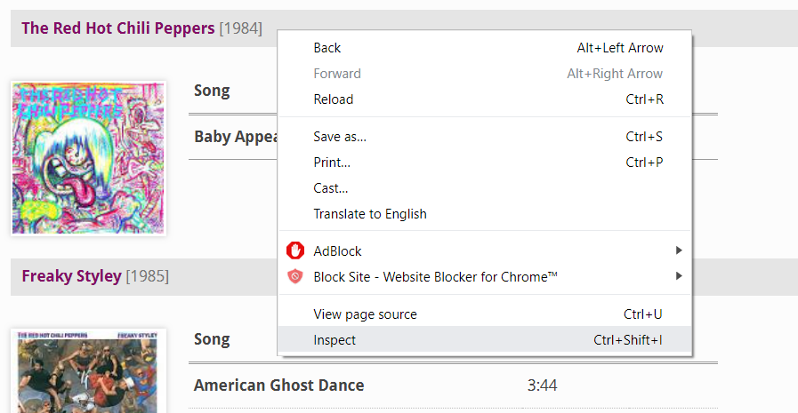
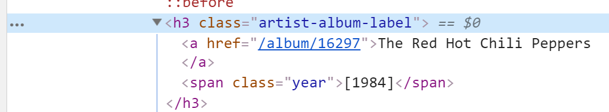

- Sun 21 April 2019
- posts
- #natural language generation, #web scraping, #LSTM RNN, #neural network, #music
Intro¶
In this project, I generate fake lyrics for the Red Hot Chili Peppers using Keras and an LSTM RNN. Here is a quick read on this technique: https://towardsdatascience.com/recurrent-neural-networks-and-lstm-4b601dd822a5. I used BeautifulSoup to scrape Red Hot Chili Peppers lyrics from https://www.lyrics.com/ and the textgenrnn library for natural language generation.
I also wrote a function at the bottom of this notebook that anyone can use to create a dataframe of songs, time durations, and lyrics from any artist on https://www.lyrics.com/
Imports¶
import pandas as pd
import numpy as np
#for web scraping
from bs4 import BeautifulSoup
import requests
#for natural language generation
import sys
from keras.models import Sequential
from keras.layers import LSTM, Activation, Flatten, Dropout, Dense, \
Embedding, TimeDistributed, CuDNNLSTM
from keras.callbacks import ModelCheckpoint
from keras.utils import np_utils
from textgenrnn import textgenrnn
import os
import warnings
warnings.filterwarnings("ignore")
C:\Users\Ryan\Anaconda3\lib\site-packages\h5py\__init__.py:36: FutureWarning: Conversion of the second argument of issubdtype from `float` to `np.floating` is deprecated. In future, it will be treated as `np.float64 == np.dtype(float).type`. from ._conv import register_converters as _register_converters Using TensorFlow backend.
Part 1: Web Scraping¶
url = 'https://www.lyrics.com/artist/Red%20Hot%20Chili%20Peppers'
r = requests.get(url)
soup = BeautifulSoup(markup = r.text, features = 'html.parser')
My process for scraping lyrics.com was to play around with the website HTML and use inspect element to find what class certain features belonged to. For example, I clicked on the album cover and saw that albums were in an h3 class titled "artist-album-label." I then scraped from these classes using BeautifulSoup:
step 1

step 2

albums = soup.find_all('h3', {'class': 'artist-album-label'})
for i in albums[:10]:
print(i.text)
Uncensored The Red Hot Chili Peppers [1984] Freaky Styley [1985] Freaky Styley [Bonus Tracks] [1985] Freaky Styley [Japan Bonus Tracks] [1985] Hollywood (Africa) [1985] The Uplift Mofo Party Plan [1987] The Uplift Mofo Party Plan [1987] Uplift Mofo Party Plan [Japan Bonus Tracks] [1987] Mother's Milk [1989]
songs = soup.find_all('td',{'class': 'tal qx'})
for i in songs[20:40]:
print(i.text)
Baby Appeal American Ghost Dance 3:44 Battle Ship 1:53 The Brothers Cup 3:27 Catholic School Girls Rule 1:55 Freaky Styley 3:39 Hollywood (Africa) 5:03 Jungle Man 4:09 Lovin' and Touchin' :36 Sex Rap 1:54
Every other entry was the song duration (with some songs missing this data), so I found I could separate the titles and durations using list splicing:
#songs
for i in songs[:20:2]:
print(i.text)
Blackeyed Blonde Buckle Down Green Heaven Mommy, Where's Daddy? Out in L.A. Police Helicopter Sex Rap [Anthony's Rap] Thirty Dirty Birds Yertle the Turtle You Always Sing the Same
#durations
for i in songs[21:41:2]:
print(i.text)
3:44 1:53 3:27 1:55 3:39 5:03 4:09 :36 1:54
Each song also had an embedded hypertext reference to the lyrics page:
songs[0].a.attrs['href']
'/lyric/529874/Red+Hot+Chili+Peppers/Blackeyed+Blonde'
I used all of this to create a dataframe with songs, time durations, and lyrics:
sng = []
tim = []
lyr = []
for i in songs[::2]:
sng.append(i.text)
for i in songs[1::2]:
tim.append(i.text)
base_url = 'https://www.lyrics.com/'
for i in range(len(songs)):
#no link to lyrics
if songs[i].a is None:
pass
else:
lyr_url = base_url + songs[i].a.attrs['href']
r = requests.get(lyr_url)
soup = BeautifulSoup(r.text, 'html.parser')
lyrics = soup.find('pre', {'id': 'lyric-body-text'}).text
lyr.append(lyrics)
df = pd.DataFrame({'song': sng, 'time': tim, 'lyrics': lyr})
df.head()
| song | time | lyrics | |
|---|---|---|---|
| 0 | Blackeyed Blonde | Pumpin' the blood through the heart of New Orl... | |
| 1 | Buckle Down | Hah!\r\nOn the ice\r\nNo holdin'\r\nMy soul\r\... | |
| 2 | Green Heaven | About this planet, there is something I know\r... | |
| 3 | Mommy, Where's Daddy? | Mommy, where's daddy?\r\nMommy, where's daddy?... | |
| 4 | Out in L.A. | We're all a bunch of brothers livin' in a cool... |
Part 2: Data Cleaning¶
df['lyrics'][0]
"Pumpin' the blood through the heart of New Orleans\r\nShe's the mystic heat of the Bourbon street dream\r\nShe's just made out of flesh and bones\r\n\r\nBut let me tell you little boy\r\nYou better leave her alone\r\nLeroy Brown thought he was bad too\r\n'Till she left him floatin' in the old bayou\r\n\r\nShe's the kind of girl\r\nShe's built like a bomb\r\nShe's the blackeyed blackeyed\r\nBlackeyed blond, get down!\r\n\r\nThat blackeyed beauty with the golden crotch\r\nFrench electric sex a cock shocking swamp fox\r\nHeaten queen of sleeze she's hot to box\r\n\r\nBut let me tell you little boy\r\nShe'll clean your clock\r\nA slick and sly spy\r\nStuck in the muck of the moat\r\n\r\nBlew his mind to find a diamond in the boat\r\nDouble-o-dooms day for Mr. James Bond\r\nShe's the blackeyed blackeyed\r\nBlackeyed blond, Get down!"
Each new line was separated by '\r\n' which is the newline character in Windows, so I replaced these with spaces:
def lyr_fixer(x):
fixed = ''
lyr_lst = x.split('\r\n')
for item in lyr_lst[:-1]:
fixed += item + ' '
fixed += lyr_lst[-1]
return fixed
df['lyrics'] = df['lyrics'].apply(lyr_fixer)
df['lyrics'][0]
"Pumpin' the blood through the heart of New Orleans She's the mystic heat of the Bourbon street dream She's just made out of flesh and bones But let me tell you little boy You better leave her alone Leroy Brown thought he was bad too 'Till she left him floatin' in the old bayou She's the kind of girl She's built like a bomb She's the blackeyed blackeyed Blackeyed blond, get down! That blackeyed beauty with the golden crotch French electric sex a cock shocking swamp fox Heaten queen of sleeze she's hot to box But let me tell you little boy She'll clean your clock A slick and sly spy Stuck in the muck of the moat Blew his mind to find a diamond in the boat Double-o-dooms day for Mr. James Bond She's the blackeyed blackeyed Blackeyed blond, Get down!"
All better. Now I save my lyrics in a text file so I can use it in the LSTM RNN model:
lyrics = list(df['lyrics'])
with open('lyrics_text.txt','w',encoding='utf-8') as filehandle:
for item in lyrics:
filehandle.write('%s\n' % item)
Part 3: Model Building¶
I ran into computing power problems here, since I wanted to create a more complex neural network. This model has 50 nodes, 4 layers, and 20 epochs. It took around 4 hours to generate on my laptop:
model_cfg = {
'rnn_size': 50,
'rnn_layers': 4,
'rnn_bidirectional': True,
'max_length': 15,
'max_words': 10000,
'dim_embeddings': 100,
'word_level': False,
}
train_cfg = {
'line_delimited': True,
'num_epochs': 20,
'gen_epochs': 25,
'batch_size': 750,
'train_size': 0.8,
'dropout': 0.0,
'max_gen_length': 300,
'validation': True,
'is_csv': False
}
model_name = '50nds_4Lrs_20epchs_Model'
textgen = textgenrnn(name=model_name)
train_function = textgen.train_from_file if train_cfg['line_delimited'] else textgen.train_from_largetext_file
train_function(
file_path='lyrics_text.txt',
new_model=True,
num_epochs=train_cfg['num_epochs'],
gen_epochs=train_cfg['gen_epochs'],
batch_size=train_cfg['batch_size'],
train_size=train_cfg['train_size'],
dropout=train_cfg['dropout'],
max_gen_length=train_cfg['max_gen_length'],
validation=train_cfg['validation'],
is_csv=train_cfg['is_csv'],
rnn_layers=model_cfg['rnn_layers'],
rnn_size=model_cfg['rnn_size'],
rnn_bidirectional=model_cfg['rnn_bidirectional'],
max_length=model_cfg['max_length'],
dim_embeddings=model_cfg['dim_embeddings'],
word_level=model_cfg['word_level'])
602 texts collected. Training new model w/ 4-layer, 50-cell Bidirectional LSTMs Training on 224,951 character sequences. Epoch 1/20 299/299 [==============================] - ETA: 49:15 - loss: 4.35 - ETA: 28:58 - loss: 3.89 - ETA: 22:15 - loss: 4.33 - ETA: 18:58 - loss: 5.28 - ETA: 16:54 - loss: 5.43 - ETA: 15:28 - loss: 5.12 - ETA: 14:27 - loss: 4.87 - ETA: 13:41 - loss: 4.68 - ETA: 13:07 - loss: 4.50 - ETA: 12:40 - loss: 4.35 - ETA: 12:16 - loss: 4.22 - ETA: 11:55 - loss: 4.11 - ETA: 11:38 - loss: 4.01 - ETA: 11:22 - loss: 3.93 - ETA: 11:09 - loss: 3.85 - ETA: 10:57 - loss: 3.78 - ETA: 10:46 - loss: 3.72 - ETA: 10:36 - loss: 3.66 - ETA: 10:27 - loss: 3.61 - ETA: 10:19 - loss: 3.56 - ETA: 10:12 - loss: 3.51 - ETA: 10:05 - loss: 3.47 - ETA: 9:58 - loss: 3.4361 - ETA: 9:52 - loss: 3.400 - ETA: 9:46 - loss: 3.368 - ETA: 9:42 - loss: 3.334 - ETA: 9:37 - loss: 3.303 - ETA: 9:32 - loss: 3.276 - ETA: 9:28 - loss: 3.249 - ETA: 9:24 - loss: 3.226 - ETA: 9:21 - loss: 3.205 - ETA: 9:16 - loss: 3.182 - ETA: 9:13 - loss: 3.160 - ETA: 9:09 - loss: 3.142 - ETA: 9:05 - loss: 3.122 - ETA: 9:01 - loss: 3.106 - ETA: 8:58 - loss: 3.088 - ETA: 8:54 - loss: 3.072 - ETA: 8:51 - loss: 3.056 - ETA: 8:47 - loss: 3.041 - ETA: 8:45 - loss: 3.025 - ETA: 8:42 - loss: 3.011 - ETA: 8:38 - loss: 2.999 - ETA: 8:36 - loss: 2.986 - ETA: 8:33 - loss: 2.974 - ETA: 8:30 - loss: 2.959 - ETA: 8:27 - loss: 2.947 - ETA: 8:24 - loss: 2.934 - ETA: 8:21 - loss: 2.924 - ETA: 8:18 - loss: 2.913 - ETA: 8:16 - loss: 2.905 - ETA: 8:13 - loss: 2.894 - ETA: 8:10 - loss: 2.885 - ETA: 8:08 - loss: 2.875 - ETA: 8:05 - loss: 2.865 - ETA: 8:03 - loss: 2.857 - ETA: 8:01 - loss: 2.847 - ETA: 7:59 - loss: 2.839 - ETA: 7:56 - loss: 2.832 - ETA: 7:54 - loss: 2.826 - ETA: 7:52 - loss: 2.818 - ETA: 7:49 - loss: 2.809 - ETA: 7:47 - loss: 2.802 - ETA: 7:44 - loss: 2.794 - ETA: 7:42 - loss: 2.787 - ETA: 7:40 - loss: 2.779 - ETA: 7:38 - loss: 2.774 - ETA: 7:36 - loss: 2.768 - ETA: 7:34 - loss: 2.761 - ETA: 7:32 - loss: 2.754 - ETA: 7:30 - loss: 2.748 - ETA: 7:28 - loss: 2.743 - ETA: 7:27 - loss: 2.737 - ETA: 7:25 - loss: 2.732 - ETA: 7:23 - loss: 2.727 - ETA: 7:20 - loss: 2.721 - ETA: 7:18 - loss: 2.715 - ETA: 7:16 - loss: 2.709 - ETA: 7:14 - loss: 2.704 - ETA: 7:11 - loss: 2.699 - ETA: 7:09 - loss: 2.695 - ETA: 7:07 - loss: 2.689 - ETA: 7:05 - loss: 2.683 - ETA: 7:03 - loss: 2.677 - ETA: 7:00 - loss: 2.672 - ETA: 6:58 - loss: 2.667 - ETA: 6:56 - loss: 2.663 - ETA: 6:54 - loss: 2.658 - ETA: 6:52 - loss: 2.653 - ETA: 6:50 - loss: 2.648 - ETA: 6:48 - loss: 2.644 - ETA: 6:46 - loss: 2.640 - ETA: 6:43 - loss: 2.636 - ETA: 6:41 - loss: 2.633 - ETA: 6:39 - loss: 2.629 - ETA: 6:37 - loss: 2.624 - ETA: 6:35 - loss: 2.620 - ETA: 6:33 - loss: 2.617 - ETA: 6:31 - loss: 2.613 - ETA: 6:29 - loss: 2.609 - ETA: 6:27 - loss: 2.605 - ETA: 6:25 - loss: 2.602 - ETA: 6:23 - loss: 2.599 - ETA: 6:21 - loss: 2.595 - ETA: 6:19 - loss: 2.591 - ETA: 6:17 - loss: 2.589 - ETA: 6:15 - loss: 2.586 - ETA: 6:13 - loss: 2.582 - ETA: 6:11 - loss: 2.579 - ETA: 6:09 - loss: 2.576 - ETA: 6:07 - loss: 2.574 - ETA: 6:05 - loss: 2.571 - ETA: 6:03 - loss: 2.568 - ETA: 6:01 - loss: 2.565 - ETA: 5:59 - loss: 2.562 - ETA: 5:57 - loss: 2.559 - ETA: 5:55 - loss: 2.556 - ETA: 5:53 - loss: 2.553 - ETA: 5:51 - loss: 2.550 - ETA: 5:49 - loss: 2.547 - ETA: 5:47 - loss: 2.544 - ETA: 5:45 - loss: 2.542 - ETA: 5:43 - loss: 2.540 - ETA: 5:41 - loss: 2.537 - ETA: 5:39 - loss: 2.534 - ETA: 5:37 - loss: 2.531 - ETA: 5:35 - loss: 2.528 - ETA: 5:33 - loss: 2.526 - ETA: 5:31 - loss: 2.523 - ETA: 5:29 - loss: 2.520 - ETA: 5:27 - loss: 2.518 - ETA: 5:25 - loss: 2.515 - ETA: 5:23 - loss: 2.512 - ETA: 5:21 - loss: 2.509 - ETA: 5:19 - loss: 2.507 - ETA: 5:18 - loss: 2.504 - ETA: 5:16 - loss: 2.501 - ETA: 5:14 - loss: 2.499 - ETA: 5:12 - loss: 2.497 - ETA: 5:10 - loss: 2.494 - ETA: 5:08 - loss: 2.491 - ETA: 5:06 - loss: 2.489 - ETA: 5:04 - loss: 2.487 - ETA: 5:02 - loss: 2.485 - ETA: 5:00 - loss: 2.482 - ETA: 4:58 - loss: 2.480 - ETA: 4:56 - loss: 2.478 - ETA: 4:54 - loss: 2.476 - ETA: 4:52 - loss: 2.473 - ETA: 4:50 - loss: 2.472 - ETA: 4:48 - loss: 2.469 - ETA: 4:46 - loss: 2.467 - ETA: 4:44 - loss: 2.465 - ETA: 4:42 - loss: 2.463 - ETA: 4:41 - loss: 2.461 - ETA: 4:39 - loss: 2.459 - ETA: 4:37 - loss: 2.457 - ETA: 4:35 - loss: 2.454 - ETA: 4:33 - loss: 2.452 - ETA: 4:31 - loss: 2.450 - ETA: 4:29 - loss: 2.448 - ETA: 4:27 - loss: 2.446 - ETA: 4:25 - loss: 2.443 - ETA: 4:23 - loss: 2.441 - ETA: 4:21 - loss: 2.438 - ETA: 4:19 - loss: 2.436 - ETA: 4:17 - loss: 2.434 - ETA: 4:15 - loss: 2.432 - ETA: 4:13 - loss: 2.430 - ETA: 4:11 - loss: 2.428 - ETA: 4:10 - loss: 2.425 - ETA: 4:08 - loss: 2.423 - ETA: 4:06 - loss: 2.421 - ETA: 4:04 - loss: 2.419 - ETA: 4:02 - loss: 2.416 - ETA: 4:00 - loss: 2.415 - ETA: 3:58 - loss: 2.413 - ETA: 3:56 - loss: 2.411 - ETA: 3:54 - loss: 2.409 - ETA: 3:52 - loss: 2.407 - ETA: 3:50 - loss: 2.405 - ETA: 3:48 - loss: 2.403 - ETA: 3:46 - loss: 2.402 - ETA: 3:44 - loss: 2.400 - ETA: 3:42 - loss: 2.398 - ETA: 3:40 - loss: 2.396 - ETA: 3:38 - loss: 2.394 - ETA: 3:36 - loss: 2.392 - ETA: 3:34 - loss: 2.390 - ETA: 3:32 - loss: 2.388 - ETA: 3:30 - loss: 2.387 - ETA: 3:29 - loss: 2.385 - ETA: 3:27 - loss: 2.383 - ETA: 3:25 - loss: 2.381 - ETA: 3:23 - loss: 2.379 - ETA: 3:21 - loss: 2.377 - ETA: 3:19 - loss: 2.376 - ETA: 3:17 - loss: 2.374 - ETA: 3:15 - loss: 2.372 - ETA: 3:13 - loss: 2.371 - ETA: 3:11 - loss: 2.369 - ETA: 3:09 - loss: 2.367 - ETA: 3:07 - loss: 2.366 - ETA: 3:05 - loss: 2.364 - ETA: 3:03 - loss: 2.362 - ETA: 3:01 - loss: 2.360 - ETA: 2:59 - loss: 2.358 - ETA: 2:57 - loss: 2.356 - ETA: 2:55 - loss: 2.354 - ETA: 2:54 - loss: 2.352 - ETA: 2:52 - loss: 2.351 - ETA: 2:50 - loss: 2.349 - ETA: 2:48 - loss: 2.348 - ETA: 2:46 - loss: 2.346 - ETA: 2:44 - loss: 2.345 - ETA: 2:42 - loss: 2.343 - ETA: 2:40 - loss: 2.341 - ETA: 2:38 - loss: 2.339 - ETA: 2:36 - loss: 2.338 - ETA: 2:34 - loss: 2.336 - ETA: 2:32 - loss: 2.335 - ETA: 2:30 - loss: 2.334 - ETA: 2:28 - loss: 2.331 - ETA: 2:26 - loss: 2.330 - ETA: 2:24 - loss: 2.329 - ETA: 2:22 - loss: 2.327 - ETA: 2:20 - loss: 2.325 - ETA: 2:18 - loss: 2.324 - ETA: 2:17 - loss: 2.322 - ETA: 2:15 - loss: 2.321 - ETA: 2:13 - loss: 2.319 - ETA: 2:11 - loss: 2.318 - ETA: 2:09 - loss: 2.317 - ETA: 2:07 - loss: 2.315 - ETA: 2:05 - loss: 2.314 - ETA: 2:03 - loss: 2.313 - ETA: 2:01 - loss: 2.311 - ETA: 2:00 - loss: 2.310 - ETA: 1:58 - loss: 2.308 - ETA: 1:56 - loss: 2.307 - ETA: 1:54 - loss: 2.306 - ETA: 1:52 - loss: 2.305 - ETA: 1:50 - loss: 2.303 - ETA: 1:48 - loss: 2.302 - ETA: 1:46 - loss: 2.301 - ETA: 1:44 - loss: 2.299 - ETA: 1:42 - loss: 2.298 - ETA: 1:40 - loss: 2.296 - ETA: 1:38 - loss: 2.295 - ETA: 1:36 - loss: 2.294 - ETA: 1:34 - loss: 2.293 - ETA: 1:32 - loss: 2.291 - ETA: 1:30 - loss: 2.290 - ETA: 1:28 - loss: 2.288 - ETA: 1:26 - loss: 2.287 - ETA: 1:24 - loss: 2.285 - ETA: 1:22 - loss: 2.284 - ETA: 1:20 - loss: 2.283 - ETA: 1:18 - loss: 2.282 - ETA: 1:17 - loss: 2.280 - ETA: 1:15 - loss: 2.279 - ETA: 1:13 - loss: 2.278 - ETA: 1:11 - loss: 2.277 - ETA: 1:09 - loss: 2.275 - ETA: 1:07 - loss: 2.274 - ETA: 1:05 - loss: 2.272 - ETA: 1:03 - loss: 2.271 - ETA: 1:01 - loss: 2.270 - ETA: 59s - loss: 2.268 - ETA: 57s - loss: 2.26 - ETA: 55s - loss: 2.26 - ETA: 53s - loss: 2.26 - ETA: 51s - loss: 2.26 - ETA: 49s - loss: 2.26 - ETA: 47s - loss: 2.26 - ETA: 45s - loss: 2.25 - ETA: 43s - loss: 2.25 - ETA: 41s - loss: 2.25 - ETA: 39s - loss: 2.25 - ETA: 37s - loss: 2.25 - ETA: 35s - loss: 2.25 - ETA: 33s - loss: 2.25 - ETA: 31s - loss: 2.25 - ETA: 29s - loss: 2.24 - ETA: 27s - loss: 2.24 - ETA: 25s - loss: 2.24 - ETA: 23s - loss: 2.24 - ETA: 21s - loss: 2.24 - ETA: 19s - loss: 2.24 - ETA: 17s - loss: 2.24 - ETA: 16s - loss: 2.24 - ETA: 14s - loss: 2.24 - ETA: 12s - loss: 2.23 - ETA: 10s - loss: 2.23 - ETA: 8s - loss: 2.2364 - ETA: 6s - loss: 2.234 - ETA: 4s - loss: 2.233 - ETA: 2s - loss: 2.232 - 647s 2s/step - loss: 2.2311 - val_loss: 1.8711 Epoch 2/20 299/299 [==============================] - ETA: 9:09 - loss: 1.923 - ETA: 9:10 - loss: 1.882 - ETA: 9:09 - loss: 1.864 - ETA: 9:10 - loss: 1.862 - ETA: 9:08 - loss: 1.860 - ETA: 9:11 - loss: 1.851 - ETA: 9:09 - loss: 1.856 - ETA: 9:10 - loss: 1.856 - ETA: 9:09 - loss: 1.849 - ETA: 9:07 - loss: 1.847 - ETA: 9:05 - loss: 1.850 - ETA: 9:02 - loss: 1.848 - ETA: 9:00 - loss: 1.849 - ETA: 8:59 - loss: 1.853 - ETA: 8:58 - loss: 1.854 - ETA: 8:56 - loss: 1.848 - ETA: 8:54 - loss: 1.852 - ETA: 8:54 - loss: 1.855 - ETA: 8:51 - loss: 1.852 - ETA: 8:50 - loss: 1.857 - ETA: 8:47 - loss: 1.852 - ETA: 8:46 - loss: 1.850 - ETA: 8:45 - loss: 1.847 - ETA: 8:43 - loss: 1.847 - ETA: 8:40 - loss: 1.849 - ETA: 8:38 - loss: 1.847 - ETA: 8:37 - loss: 1.847 - ETA: 8:35 - loss: 1.846 - ETA: 8:33 - loss: 1.846 - ETA: 8:31 - loss: 1.845 - ETA: 8:29 - loss: 1.843 - ETA: 8:27 - loss: 1.840 - ETA: 8:27 - loss: 1.838 - ETA: 8:39 - loss: 1.840 - ETA: 8:36 - loss: 1.838 - ETA: 8:34 - loss: 1.836 - ETA: 8:32 - loss: 1.835 - ETA: 8:30 - loss: 1.835 - ETA: 8:28 - loss: 1.833 - ETA: 8:25 - loss: 1.832 - ETA: 8:23 - loss: 1.834 - ETA: 8:21 - loss: 1.834 - ETA: 8:18 - loss: 1.835 - ETA: 8:16 - loss: 1.833 - ETA: 8:15 - loss: 1.834 - ETA: 8:13 - loss: 1.834 - ETA: 8:12 - loss: 1.834 - ETA: 8:11 - loss: 1.833 - ETA: 8:10 - loss: 1.834 - ETA: 8:10 - loss: 1.831 - ETA: 8:08 - loss: 1.830 - ETA: 8:07 - loss: 1.829 - ETA: 8:06 - loss: 1.829 - ETA: 8:05 - loss: 1.828 - ETA: 8:03 - loss: 1.827 - ETA: 8:02 - loss: 1.826 - ETA: 7:59 - loss: 1.826 - ETA: 7:57 - loss: 1.826 - ETA: 7:55 - loss: 1.826 - ETA: 7:53 - loss: 1.825 - ETA: 7:51 - loss: 1.824 - ETA: 7:49 - loss: 1.825 - ETA: 7:46 - loss: 1.826 - ETA: 7:44 - loss: 1.826 - ETA: 7:42 - loss: 1.825 - ETA: 7:40 - loss: 1.826 - ETA: 7:38 - loss: 1.825 - ETA: 7:36 - loss: 1.825 - ETA: 7:34 - loss: 1.824 - ETA: 7:38 - loss: 1.823 - ETA: 7:36 - loss: 1.822 - ETA: 7:34 - loss: 1.822 - ETA: 7:31 - loss: 1.821 - ETA: 7:30 - loss: 1.821 - ETA: 7:27 - loss: 1.821 - ETA: 7:25 - loss: 1.821 - ETA: 7:23 - loss: 1.819 - ETA: 7:21 - loss: 1.819 - ETA: 7:19 - loss: 1.819 - ETA: 7:17 - loss: 1.818 - ETA: 7:14 - loss: 1.818 - ETA: 7:12 - loss: 1.818 - ETA: 7:10 - loss: 1.818 - ETA: 7:08 - loss: 1.817 - ETA: 7:06 - loss: 1.817 - ETA: 7:04 - loss: 1.817 - ETA: 7:02 - loss: 1.817 - ETA: 7:00 - loss: 1.816 - ETA: 6:58 - loss: 1.814 - ETA: 6:56 - loss: 1.813 - ETA: 6:54 - loss: 1.813 - ETA: 6:52 - loss: 1.813 - ETA: 6:50 - loss: 1.813 - ETA: 6:47 - loss: 1.812 - ETA: 6:45 - loss: 1.811 - ETA: 6:43 - loss: 1.810 - ETA: 6:41 - loss: 1.810 - ETA: 6:39 - loss: 1.809 - ETA: 6:37 - loss: 1.810 - ETA: 6:35 - loss: 1.810 - ETA: 6:34 - loss: 1.810 - ETA: 6:35 - loss: 1.810 - ETA: 6:33 - loss: 1.809 - ETA: 6:31 - loss: 1.809 - ETA: 6:28 - loss: 1.808 - ETA: 6:26 - loss: 1.808 - ETA: 6:24 - loss: 1.807 - ETA: 6:22 - loss: 1.806 - ETA: 6:20 - loss: 1.805 - ETA: 6:18 - loss: 1.805 - ETA: 6:16 - loss: 1.805 - ETA: 6:14 - loss: 1.804 - ETA: 6:12 - loss: 1.804 - ETA: 6:10 - loss: 1.803 - ETA: 6:08 - loss: 1.803 - ETA: 6:05 - loss: 1.803 - ETA: 6:03 - loss: 1.802 - ETA: 6:01 - loss: 1.801 - ETA: 5:59 - loss: 1.801 - ETA: 6:00 - loss: 1.800 - ETA: 5:58 - loss: 1.799 - ETA: 5:56 - loss: 1.799 - ETA: 5:54 - loss: 1.798 - ETA: 5:52 - loss: 1.798 - ETA: 5:50 - loss: 1.798 - ETA: 5:48 - loss: 1.797 - ETA: 5:46 - loss: 1.797 - ETA: 5:44 - loss: 1.797 - ETA: 5:42 - loss: 1.797 - ETA: 5:40 - loss: 1.797 - ETA: 5:38 - loss: 1.796 - ETA: 5:35 - loss: 1.796 - ETA: 5:33 - loss: 1.796 - ETA: 5:31 - loss: 1.796 - ETA: 5:29 - loss: 1.796 - ETA: 5:27 - loss: 1.796 - ETA: 5:25 - loss: 1.795 - ETA: 5:23 - loss: 1.794 - ETA: 5:21 - loss: 1.794 - ETA: 5:19 - loss: 1.794 - ETA: 5:17 - loss: 1.794 - ETA: 5:15 - loss: 1.793 - ETA: 5:13 - loss: 1.793 - ETA: 5:11 - loss: 1.793 - ETA: 5:09 - loss: 1.792 - ETA: 5:07 - loss: 1.792 - ETA: 5:05 - loss: 1.792 - ETA: 5:02 - loss: 1.791 - ETA: 5:00 - loss: 1.791 - ETA: 4:58 - loss: 1.791 - ETA: 4:56 - loss: 1.791 - ETA: 4:54 - loss: 1.790 - ETA: 4:52 - loss: 1.789 - ETA: 4:50 - loss: 1.789 - ETA: 4:48 - loss: 1.788 - ETA: 4:46 - loss: 1.787 - ETA: 4:44 - loss: 1.786 - ETA: 4:42 - loss: 1.786 - ETA: 4:40 - loss: 1.786 - ETA: 4:38 - loss: 1.785 - ETA: 4:36 - loss: 1.786 - ETA: 4:34 - loss: 1.785 - ETA: 4:32 - loss: 1.785 - ETA: 4:30 - loss: 1.784 - ETA: 4:28 - loss: 1.784 - ETA: 4:26 - loss: 1.783 - ETA: 4:24 - loss: 1.783 - ETA: 4:22 - loss: 1.783 - ETA: 4:20 - loss: 1.783 - ETA: 4:18 - loss: 1.783 - ETA: 4:16 - loss: 1.782 - ETA: 4:14 - loss: 1.782 - ETA: 4:12 - loss: 1.782 - ETA: 4:10 - loss: 1.782 - ETA: 4:09 - loss: 1.782 - ETA: 4:07 - loss: 1.782 - ETA: 4:05 - loss: 1.781 - ETA: 4:03 - loss: 1.780 - ETA: 4:01 - loss: 1.780 - ETA: 3:59 - loss: 1.780 - ETA: 3:57 - loss: 1.779 - ETA: 3:55 - loss: 1.779 - ETA: 3:53 - loss: 1.779 - ETA: 3:51 - loss: 1.779 - ETA: 3:49 - loss: 1.778 - ETA: 3:47 - loss: 1.778 - ETA: 3:45 - loss: 1.777 - ETA: 3:43 - loss: 1.777 - ETA: 3:41 - loss: 1.777 - ETA: 3:39 - loss: 1.777 - ETA: 3:37 - loss: 1.777 - ETA: 3:35 - loss: 1.776 - ETA: 3:33 - loss: 1.776 - ETA: 3:31 - loss: 1.776 - ETA: 3:29 - loss: 1.776 - ETA: 3:27 - loss: 1.775 - ETA: 3:25 - loss: 1.775 - ETA: 3:24 - loss: 1.775 - ETA: 3:22 - loss: 1.774 - ETA: 3:20 - loss: 1.774 - ETA: 3:18 - loss: 1.773 - ETA: 3:17 - loss: 1.773 - ETA: 3:15 - loss: 1.773 - ETA: 3:13 - loss: 1.772 - ETA: 3:11 - loss: 1.772 - ETA: 3:09 - loss: 1.772 - ETA: 3:07 - loss: 1.771 - ETA: 3:05 - loss: 1.771 - ETA: 3:03 - loss: 1.771 - ETA: 3:01 - loss: 1.770 - ETA: 2:59 - loss: 1.770 - ETA: 2:57 - loss: 1.769 - ETA: 2:54 - loss: 1.769 - ETA: 2:52 - loss: 1.769 - ETA: 2:50 - loss: 1.769 - ETA: 2:48 - loss: 1.769 - ETA: 2:46 - loss: 1.768 - ETA: 2:44 - loss: 1.768 - ETA: 2:42 - loss: 1.768 - ETA: 2:40 - loss: 1.767 - ETA: 2:38 - loss: 1.767 - ETA: 2:36 - loss: 1.767 - ETA: 2:34 - loss: 1.766 - ETA: 2:32 - loss: 1.766 - ETA: 2:30 - loss: 1.766 - ETA: 2:28 - loss: 1.766 - ETA: 2:26 - loss: 1.765 - ETA: 2:24 - loss: 1.765 - ETA: 2:22 - loss: 1.764 - ETA: 2:20 - loss: 1.764 - ETA: 2:18 - loss: 1.764 - ETA: 2:16 - loss: 1.764 - ETA: 2:14 - loss: 1.764 - ETA: 2:11 - loss: 1.764 - ETA: 2:09 - loss: 1.764 - ETA: 2:07 - loss: 1.764 - ETA: 2:05 - loss: 1.764 - ETA: 2:04 - loss: 1.763 - ETA: 2:02 - loss: 1.763 - ETA: 2:00 - loss: 1.763 - ETA: 1:58 - loss: 1.762 - ETA: 1:56 - loss: 1.762 - ETA: 1:54 - loss: 1.762 - ETA: 1:52 - loss: 1.761 - ETA: 1:51 - loss: 1.761 - ETA: 1:48 - loss: 1.760 - ETA: 1:46 - loss: 1.760 - ETA: 1:44 - loss: 1.760 - ETA: 1:43 - loss: 1.759 - ETA: 1:41 - loss: 1.759 - ETA: 1:39 - loss: 1.759 - ETA: 1:37 - loss: 1.758 - ETA: 1:35 - loss: 1.758 - ETA: 1:33 - loss: 1.757 - ETA: 1:31 - loss: 1.756 - ETA: 1:29 - loss: 1.757 - ETA: 1:27 - loss: 1.756 - ETA: 1:24 - loss: 1.756 - ETA: 1:22 - loss: 1.755 - ETA: 1:20 - loss: 1.755 - ETA: 1:18 - loss: 1.755 - ETA: 1:16 - loss: 1.755 - ETA: 1:14 - loss: 1.755 - ETA: 1:12 - loss: 1.754 - ETA: 1:10 - loss: 1.754 - ETA: 1:08 - loss: 1.753 - ETA: 1:06 - loss: 1.753 - ETA: 1:04 - loss: 1.753 - ETA: 1:02 - loss: 1.753 - ETA: 1:00 - loss: 1.752 - ETA: 57s - loss: 1.753 - ETA: 55s - loss: 1.75 - ETA: 53s - loss: 1.75 - ETA: 51s - loss: 1.75 - ETA: 49s - loss: 1.75 - ETA: 47s - loss: 1.75 - ETA: 45s - loss: 1.75 - ETA: 43s - loss: 1.75 - ETA: 41s - loss: 1.75 - ETA: 39s - loss: 1.75 - ETA: 37s - loss: 1.75 - ETA: 35s - loss: 1.75 - ETA: 33s - loss: 1.75 - ETA: 31s - loss: 1.74 - ETA: 28s - loss: 1.74 - ETA: 26s - loss: 1.74 - ETA: 24s - loss: 1.74 - ETA: 22s - loss: 1.74 - ETA: 20s - loss: 1.74 - ETA: 18s - loss: 1.74 - ETA: 16s - loss: 1.74 - ETA: 14s - loss: 1.74 - ETA: 12s - loss: 1.74 - ETA: 10s - loss: 1.74 - ETA: 8s - loss: 1.7462 - ETA: 6s - loss: 1.746 - ETA: 4s - loss: 1.745 - ETA: 2s - loss: 1.745 - 671s 2s/step - loss: 1.7456 - val_loss: 1.6506 Epoch 3/20 299/299 [==============================] - ETA: 9:41 - loss: 1.519 - ETA: 9:40 - loss: 1.541 - ETA: 9:50 - loss: 1.575 - ETA: 9:49 - loss: 1.564 - ETA: 9:47 - loss: 1.571 - ETA: 9:49 - loss: 1.584 - ETA: 9:44 - loss: 1.586 - ETA: 9:40 - loss: 1.592 - ETA: 9:39 - loss: 1.606 - ETA: 9:41 - loss: 1.608 - ETA: 9:48 - loss: 1.601 - ETA: 9:52 - loss: 1.608 - ETA: 9:52 - loss: 1.608 - ETA: 9:54 - loss: 1.610 - ETA: 9:52 - loss: 1.610 - ETA: 9:48 - loss: 1.615 - ETA: 9:45 - loss: 1.614 - ETA: 9:42 - loss: 1.614 - ETA: 9:39 - loss: 1.615 - ETA: 9:36 - loss: 1.614 - ETA: 9:32 - loss: 1.612 - ETA: 9:29 - loss: 1.611 - ETA: 9:26 - loss: 1.613 - ETA: 9:34 - loss: 1.614 - ETA: 9:45 - loss: 1.614 - ETA: 9:41 - loss: 1.616 - ETA: 9:37 - loss: 1.613 - ETA: 9:53 - loss: 1.614 - ETA: 9:59 - loss: 1.614 - ETA: 9:55 - loss: 1.617 - ETA: 9:50 - loss: 1.616 - ETA: 9:46 - loss: 1.617 - ETA: 9:43 - loss: 1.619 - ETA: 9:39 - loss: 1.618 - ETA: 9:35 - loss: 1.616 - ETA: 9:32 - loss: 1.616 - ETA: 9:29 - loss: 1.616 - ETA: 9:25 - loss: 1.614 - ETA: 9:21 - loss: 1.616 - ETA: 9:18 - loss: 1.613 - ETA: 9:14 - loss: 1.616 - ETA: 9:12 - loss: 1.617 - ETA: 9:09 - loss: 1.619 - ETA: 9:05 - loss: 1.619 - ETA: 9:03 - loss: 1.618 - ETA: 9:00 - loss: 1.616 - ETA: 8:57 - loss: 1.615 - ETA: 8:55 - loss: 1.615 - ETA: 8:51 - loss: 1.616 - ETA: 8:48 - loss: 1.614 - ETA: 8:46 - loss: 1.613 - ETA: 8:44 - loss: 1.614 - ETA: 8:41 - loss: 1.616 - ETA: 8:38 - loss: 1.614 - ETA: 8:35 - loss: 1.611 - ETA: 8:33 - loss: 1.613 - ETA: 8:30 - loss: 1.612 - ETA: 8:28 - loss: 1.613 - ETA: 8:25 - loss: 1.614 - ETA: 8:23 - loss: 1.613 - ETA: 8:21 - loss: 1.614 - ETA: 8:19 - loss: 1.613 - ETA: 8:17 - loss: 1.612 - ETA: 8:15 - loss: 1.611 - ETA: 8:13 - loss: 1.610 - ETA: 8:10 - loss: 1.612 - ETA: 8:08 - loss: 1.612 - ETA: 8:06 - loss: 1.611 - ETA: 8:04 - loss: 1.611 - ETA: 8:02 - loss: 1.612 - ETA: 7:59 - loss: 1.610 - ETA: 7:57 - loss: 1.611 - ETA: 7:55 - loss: 1.611 - ETA: 7:52 - loss: 1.611 - ETA: 7:50 - loss: 1.612 - ETA: 7:48 - loss: 1.610 - ETA: 7:45 - loss: 1.611 - ETA: 7:43 - loss: 1.611 - ETA: 7:41 - loss: 1.611 - ETA: 7:38 - loss: 1.611 - ETA: 7:36 - loss: 1.611 - ETA: 7:34 - loss: 1.610 - ETA: 7:31 - loss: 1.610 - ETA: 7:29 - loss: 1.609 - ETA: 7:27 - loss: 1.609 - ETA: 7:26 - loss: 1.609 - ETA: 7:27 - loss: 1.609 - ETA: 7:25 - loss: 1.609 - ETA: 7:23 - loss: 1.609 - ETA: 7:20 - loss: 1.608 - ETA: 7:18 - loss: 1.608 - ETA: 7:15 - loss: 1.607 - ETA: 7:13 - loss: 1.609 - ETA: 7:11 - loss: 1.609 - ETA: 7:08 - loss: 1.609 - ETA: 7:06 - loss: 1.608 - ETA: 7:04 - loss: 1.607 - ETA: 7:01 - loss: 1.607 - ETA: 6:59 - loss: 1.607 - ETA: 6:57 - loss: 1.608 - ETA: 6:54 - loss: 1.607 - ETA: 6:53 - loss: 1.608 - ETA: 6:52 - loss: 1.607 - ETA: 6:50 - loss: 1.608 - ETA: 6:48 - loss: 1.607 - ETA: 6:46 - loss: 1.607 - ETA: 6:44 - loss: 1.608 - ETA: 6:42 - loss: 1.608 - ETA: 6:39 - loss: 1.608 - ETA: 6:37 - loss: 1.606 - ETA: 6:35 - loss: 1.606 - ETA: 6:33 - loss: 1.606 - ETA: 6:30 - loss: 1.606 - ETA: 6:28 - loss: 1.606 - ETA: 6:26 - loss: 1.605 - ETA: 6:24 - loss: 1.605 - ETA: 6:21 - loss: 1.604 - ETA: 6:19 - loss: 1.604 - ETA: 6:17 - loss: 1.604 - ETA: 6:15 - loss: 1.604 - ETA: 6:16 - loss: 1.604 - ETA: 6:14 - loss: 1.604 - ETA: 6:12 - loss: 1.605 - ETA: 6:10 - loss: 1.605 - ETA: 6:07 - loss: 1.605 - ETA: 6:05 - loss: 1.605 - ETA: 6:03 - loss: 1.604 - ETA: 6:01 - loss: 1.603 - ETA: 5:58 - loss: 1.605 - ETA: 5:56 - loss: 1.604 - ETA: 5:54 - loss: 1.604 - ETA: 5:52 - loss: 1.604 - ETA: 5:49 - loss: 1.604 - ETA: 5:47 - loss: 1.603 - ETA: 5:46 - loss: 1.604 - ETA: 5:45 - loss: 1.604 - ETA: 5:43 - loss: 1.604 - ETA: 5:40 - loss: 1.603 - ETA: 5:38 - loss: 1.603 - ETA: 5:36 - loss: 1.603 - ETA: 5:34 - loss: 1.603 - ETA: 5:32 - loss: 1.603 - ETA: 5:29 - loss: 1.603 - ETA: 5:27 - loss: 1.603 - ETA: 5:25 - loss: 1.604 - ETA: 5:23 - loss: 1.604 - ETA: 5:20 - loss: 1.604 - ETA: 5:18 - loss: 1.604 - ETA: 5:16 - loss: 1.604 - ETA: 5:14 - loss: 1.603 - ETA: 5:12 - loss: 1.603 - ETA: 5:10 - loss: 1.602 - ETA: 5:07 - loss: 1.602 - ETA: 5:05 - loss: 1.602 - ETA: 5:03 - loss: 1.602 - ETA: 5:01 - loss: 1.601 - ETA: 4:59 - loss: 1.601 - ETA: 4:57 - loss: 1.601 - ETA: 4:54 - loss: 1.601 - ETA: 4:52 - loss: 1.600 - ETA: 4:50 - loss: 1.600 - ETA: 4:48 - loss: 1.601 - ETA: 4:46 - loss: 1.600 - ETA: 4:43 - loss: 1.600 - ETA: 4:41 - loss: 1.600 - ETA: 4:39 - loss: 1.600 - ETA: 4:37 - loss: 1.600 - ETA: 4:35 - loss: 1.600 - ETA: 4:33 - loss: 1.600 - ETA: 4:31 - loss: 1.599 - ETA: 4:28 - loss: 1.599 - ETA: 4:26 - loss: 1.599 - ETA: 4:24 - loss: 1.600 - ETA: 4:22 - loss: 1.599 - ETA: 4:20 - loss: 1.599 - ETA: 4:18 - loss: 1.599 - ETA: 4:16 - loss: 1.599 - ETA: 4:15 - loss: 1.599 - ETA: 4:13 - loss: 1.599 - ETA: 4:10 - loss: 1.599 - ETA: 4:08 - loss: 1.599 - ETA: 4:06 - loss: 1.598 - ETA: 4:04 - loss: 1.598 - ETA: 4:02 - loss: 1.598 - ETA: 4:00 - loss: 1.598 - ETA: 3:57 - loss: 1.598 - ETA: 3:55 - loss: 1.598 - ETA: 3:53 - loss: 1.598 - ETA: 3:51 - loss: 1.598 - ETA: 3:49 - loss: 1.598 - ETA: 3:47 - loss: 1.597 - ETA: 3:44 - loss: 1.597 - ETA: 3:42 - loss: 1.596 - ETA: 3:40 - loss: 1.596 - ETA: 3:38 - loss: 1.596 - ETA: 3:36 - loss: 1.597 - ETA: 3:34 - loss: 1.597 - ETA: 3:32 - loss: 1.596 - ETA: 3:29 - loss: 1.596 - ETA: 3:27 - loss: 1.596 - ETA: 3:25 - loss: 1.597 - ETA: 3:23 - loss: 1.596 - ETA: 3:21 - loss: 1.596 - ETA: 3:19 - loss: 1.596 - ETA: 3:17 - loss: 1.596 - ETA: 3:14 - loss: 1.596 - ETA: 3:12 - loss: 1.596 - ETA: 3:10 - loss: 1.596 - ETA: 3:08 - loss: 1.596 - ETA: 3:06 - loss: 1.595 - ETA: 3:05 - loss: 1.596 - ETA: 3:02 - loss: 1.596 - ETA: 3:01 - loss: 1.595 - ETA: 2:59 - loss: 1.595 - ETA: 2:57 - loss: 1.595 - ETA: 2:55 - loss: 1.594 - ETA: 2:53 - loss: 1.594 - ETA: 2:50 - loss: 1.594 - ETA: 2:48 - loss: 1.594 - ETA: 2:46 - loss: 1.593 - ETA: 2:44 - loss: 1.593 - ETA: 2:42 - loss: 1.593 - ETA: 2:40 - loss: 1.593 - ETA: 2:38 - loss: 1.593 - ETA: 2:35 - loss: 1.593 - ETA: 2:33 - loss: 1.593 - ETA: 2:31 - loss: 1.593 - ETA: 2:29 - loss: 1.592 - ETA: 2:27 - loss: 1.592 - ETA: 2:25 - loss: 1.591 - ETA: 2:23 - loss: 1.591 - ETA: 2:20 - loss: 1.591 - ETA: 2:18 - loss: 1.591 - ETA: 2:16 - loss: 1.591 - ETA: 2:14 - loss: 1.591 - ETA: 2:12 - loss: 1.591 - ETA: 2:10 - loss: 1.591 - ETA: 2:08 - loss: 1.591 - ETA: 2:06 - loss: 1.591 - ETA: 2:04 - loss: 1.591 - ETA: 2:01 - loss: 1.591 - ETA: 1:59 - loss: 1.591 - ETA: 1:57 - loss: 1.591 - ETA: 1:55 - loss: 1.592 - ETA: 1:53 - loss: 1.591 - ETA: 1:51 - loss: 1.591 - ETA: 1:49 - loss: 1.591 - ETA: 1:47 - loss: 1.591 - ETA: 1:44 - loss: 1.590 - ETA: 1:42 - loss: 1.590 - ETA: 1:40 - loss: 1.590 - ETA: 1:38 - loss: 1.590 - ETA: 1:36 - loss: 1.590 - ETA: 1:34 - loss: 1.590 - ETA: 1:32 - loss: 1.589 - ETA: 1:30 - loss: 1.589 - ETA: 1:28 - loss: 1.589 - ETA: 1:26 - loss: 1.588 - ETA: 1:24 - loss: 1.589 - ETA: 1:21 - loss: 1.589 - ETA: 1:19 - loss: 1.588 - ETA: 1:17 - loss: 1.588 - ETA: 1:15 - loss: 1.588 - ETA: 1:13 - loss: 1.587 - ETA: 1:11 - loss: 1.587 - ETA: 1:09 - loss: 1.587 - ETA: 1:07 - loss: 1.587 - ETA: 1:05 - loss: 1.587 - ETA: 1:03 - loss: 1.587 - ETA: 1:01 - loss: 1.587 - ETA: 58s - loss: 1.587 - ETA: 56s - loss: 1.58 - ETA: 54s - loss: 1.58 - ETA: 52s - loss: 1.58 - ETA: 50s - loss: 1.58 - ETA: 48s - loss: 1.58 - ETA: 46s - loss: 1.58 - ETA: 44s - loss: 1.58 - ETA: 42s - loss: 1.58 - ETA: 39s - loss: 1.58 - ETA: 37s - loss: 1.58 - ETA: 35s - loss: 1.58 - ETA: 33s - loss: 1.58 - ETA: 31s - loss: 1.58 - ETA: 29s - loss: 1.58 - ETA: 27s - loss: 1.58 - ETA: 25s - loss: 1.58 - ETA: 23s - loss: 1.58 - ETA: 20s - loss: 1.58 - ETA: 18s - loss: 1.58 - ETA: 16s - loss: 1.58 - ETA: 14s - loss: 1.58 - ETA: 12s - loss: 1.58 - ETA: 10s - loss: 1.58 - ETA: 8s - loss: 1.5821 - ETA: 6s - loss: 1.581 - ETA: 4s - loss: 1.581 - ETA: 2s - loss: 1.581 - 683s 2s/step - loss: 1.5819 - val_loss: 1.5497 Epoch 4/20 299/299 [==============================] - ETA: 10:10 - loss: 1.49 - ETA: 9:59 - loss: 1.4811 - ETA: 9:57 - loss: 1.512 - ETA: 9:51 - loss: 1.507 - ETA: 9:56 - loss: 1.503 - ETA: 9:53 - loss: 1.473 - ETA: 9:49 - loss: 1.470 - ETA: 9:45 - loss: 1.479 - ETA: 9:41 - loss: 1.479 - ETA: 9:39 - loss: 1.488 - ETA: 10:00 - loss: 1.49 - ETA: 10:25 - loss: 1.49 - ETA: 10:18 - loss: 1.49 - ETA: 10:31 - loss: 1.49 - ETA: 10:57 - loss: 1.49 - ETA: 10:48 - loss: 1.49 - ETA: 10:40 - loss: 1.49 - ETA: 10:33 - loss: 1.48 - ETA: 10:27 - loss: 1.49 - ETA: 10:23 - loss: 1.49 - ETA: 10:17 - loss: 1.49 - ETA: 10:12 - loss: 1.48 - ETA: 10:08 - loss: 1.48 - ETA: 10:05 - loss: 1.48 - ETA: 10:00 - loss: 1.48 - ETA: 9:56 - loss: 1.4921 - ETA: 9:51 - loss: 1.489 - ETA: 9:47 - loss: 1.486 - ETA: 9:44 - loss: 1.489 - ETA: 9:40 - loss: 1.491 - ETA: 9:36 - loss: 1.493 - ETA: 9:33 - loss: 1.494 - ETA: 9:30 - loss: 1.497 - ETA: 9:27 - loss: 1.498 - ETA: 9:24 - loss: 1.500 - ETA: 9:21 - loss: 1.500 - ETA: 9:18 - loss: 1.498 - ETA: 9:16 - loss: 1.496 - ETA: 9:13 - loss: 1.498 - ETA: 9:10 - loss: 1.498 - ETA: 9:07 - loss: 1.499 - ETA: 9:04 - loss: 1.498 - ETA: 9:02 - loss: 1.499 - ETA: 8:59 - loss: 1.500 - ETA: 8:57 - loss: 1.499 - ETA: 8:54 - loss: 1.499 - ETA: 8:51 - loss: 1.498 - ETA: 8:48 - loss: 1.497 - ETA: 8:51 - loss: 1.497 - ETA: 8:53 - loss: 1.494 - ETA: 8:50 - loss: 1.496 - ETA: 8:47 - loss: 1.496 - ETA: 8:45 - loss: 1.496 - ETA: 8:42 - loss: 1.496 - ETA: 8:40 - loss: 1.497 - ETA: 8:37 - loss: 1.498 - ETA: 8:35 - loss: 1.499 - ETA: 8:32 - loss: 1.499 - ETA: 8:30 - loss: 1.497 - ETA: 8:27 - loss: 1.497 - ETA: 8:24 - loss: 1.498 - ETA: 8:28 - loss: 1.498 - ETA: 8:33 - loss: 1.500 - ETA: 8:33 - loss: 1.500 - ETA: 8:30 - loss: 1.499 - ETA: 8:28 - loss: 1.498 - ETA: 8:25 - loss: 1.498 - ETA: 8:23 - loss: 1.498 - ETA: 8:20 - loss: 1.499 - ETA: 8:17 - loss: 1.498 - ETA: 8:14 - loss: 1.499 - ETA: 8:11 - loss: 1.499 - ETA: 8:08 - loss: 1.498 - ETA: 8:06 - loss: 1.497 - ETA: 8:03 - loss: 1.497 - ETA: 8:00 - loss: 1.497 - ETA: 7:58 - loss: 1.497 - ETA: 7:55 - loss: 1.496 - ETA: 7:53 - loss: 1.498 - ETA: 7:50 - loss: 1.498 - ETA: 7:47 - loss: 1.498 - ETA: 7:45 - loss: 1.499 - ETA: 7:42 - loss: 1.498 - ETA: 7:40 - loss: 1.498 - ETA: 7:37 - loss: 1.498 - ETA: 7:35 - loss: 1.497 - ETA: 7:32 - loss: 1.497 - ETA: 7:30 - loss: 1.497 - ETA: 7:27 - loss: 1.496 - ETA: 7:25 - loss: 1.495 - ETA: 7:22 - loss: 1.496 - ETA: 7:20 - loss: 1.496 - ETA: 7:17 - loss: 1.495 - ETA: 7:19 - loss: 1.496 - ETA: 7:17 - loss: 1.497 - ETA: 7:14 - loss: 1.497 - ETA: 7:12 - loss: 1.497 - ETA: 7:09 - loss: 1.497 - ETA: 7:07 - loss: 1.496 - ETA: 7:04 - loss: 1.495 - ETA: 7:02 - loss: 1.495 - ETA: 6:59 - loss: 1.494 - ETA: 6:57 - loss: 1.494 - ETA: 6:55 - loss: 1.494 - ETA: 6:52 - loss: 1.494 - ETA: 6:50 - loss: 1.494 - ETA: 6:47 - loss: 1.494 - ETA: 6:45 - loss: 1.494 - ETA: 6:43 - loss: 1.494 - ETA: 6:41 - loss: 1.493 - ETA: 6:38 - loss: 1.494 - ETA: 6:36 - loss: 1.495 - ETA: 6:34 - loss: 1.495 - ETA: 6:31 - loss: 1.494 - ETA: 6:29 - loss: 1.493 - ETA: 6:30 - loss: 1.494 - ETA: 6:28 - loss: 1.494 - ETA: 6:25 - loss: 1.494 - ETA: 6:23 - loss: 1.493 - ETA: 6:21 - loss: 1.493 - ETA: 6:18 - loss: 1.494 - ETA: 6:16 - loss: 1.494 - ETA: 6:14 - loss: 1.492 - ETA: 6:11 - loss: 1.493 - ETA: 6:09 - loss: 1.492 - ETA: 6:07 - loss: 1.492 - ETA: 6:04 - loss: 1.492 - ETA: 6:02 - loss: 1.491 - ETA: 6:00 - loss: 1.491 - ETA: 5:58 - loss: 1.492 - ETA: 5:55 - loss: 1.492 - ETA: 5:53 - loss: 1.491 - ETA: 5:51 - loss: 1.491 - ETA: 5:49 - loss: 1.491 - ETA: 5:46 - loss: 1.490 - ETA: 5:44 - loss: 1.490 - ETA: 5:42 - loss: 1.490 - ETA: 5:40 - loss: 1.490 - ETA: 5:38 - loss: 1.490 - ETA: 5:35 - loss: 1.489 - ETA: 5:33 - loss: 1.489 - ETA: 5:31 - loss: 1.489 - ETA: 5:29 - loss: 1.489 - ETA: 5:27 - loss: 1.488 - ETA: 5:24 - loss: 1.488 - ETA: 5:23 - loss: 1.488 - ETA: 5:22 - loss: 1.488 - ETA: 5:20 - loss: 1.488 - ETA: 5:17 - loss: 1.488 - ETA: 5:15 - loss: 1.488 - ETA: 5:13 - loss: 1.488 - ETA: 5:11 - loss: 1.487 - ETA: 5:08 - loss: 1.487 - ETA: 5:06 - loss: 1.488 - ETA: 5:04 - loss: 1.488 - ETA: 5:02 - loss: 1.487 - ETA: 5:00 - loss: 1.488 - ETA: 4:57 - loss: 1.488 - ETA: 4:55 - loss: 1.488 - ETA: 4:53 - loss: 1.488 - ETA: 4:51 - loss: 1.488 - ETA: 4:49 - loss: 1.487 - ETA: 4:46 - loss: 1.488 - ETA: 4:44 - loss: 1.488 - ETA: 4:42 - loss: 1.488 - ETA: 4:40 - loss: 1.487 - ETA: 4:39 - loss: 1.488 - ETA: 4:37 - loss: 1.488 - ETA: 4:35 - loss: 1.488 - ETA: 4:33 - loss: 1.488 - ETA: 4:30 - loss: 1.488 - ETA: 4:28 - loss: 1.487 - ETA: 4:26 - loss: 1.486 - ETA: 4:24 - loss: 1.487 - ETA: 4:22 - loss: 1.486 - ETA: 4:19 - loss: 1.486 - ETA: 4:17 - loss: 1.486 - ETA: 4:15 - loss: 1.486 - ETA: 4:13 - loss: 1.486 - ETA: 4:11 - loss: 1.486 - ETA: 4:08 - loss: 1.485 - ETA: 4:06 - loss: 1.485 - ETA: 4:04 - loss: 1.485 - ETA: 4:02 - loss: 1.485 - ETA: 4:00 - loss: 1.484 - ETA: 3:59 - loss: 1.485 - ETA: 3:57 - loss: 1.484 - ETA: 3:54 - loss: 1.484 - ETA: 3:52 - loss: 1.484 - ETA: 3:50 - loss: 1.484 - ETA: 3:48 - loss: 1.484 - ETA: 3:46 - loss: 1.484 - ETA: 3:44 - loss: 1.484 - ETA: 3:41 - loss: 1.485 - ETA: 3:39 - loss: 1.484 - ETA: 3:38 - loss: 1.485 - ETA: 3:36 - loss: 1.485 - ETA: 3:34 - loss: 1.485 - ETA: 3:32 - loss: 1.485 - ETA: 3:29 - loss: 1.485 - ETA: 3:27 - loss: 1.485 - ETA: 3:25 - loss: 1.484 - ETA: 3:23 - loss: 1.484 - ETA: 3:21 - loss: 1.484 - ETA: 3:19 - loss: 1.484 - ETA: 3:17 - loss: 1.484 - ETA: 3:14 - loss: 1.484 - ETA: 3:12 - loss: 1.484 - ETA: 3:10 - loss: 1.484 - ETA: 3:08 - loss: 1.485 - ETA: 3:06 - loss: 1.484 - ETA: 3:04 - loss: 1.485 - ETA: 3:02 - loss: 1.485 - ETA: 2:59 - loss: 1.484 - ETA: 2:57 - loss: 1.485 - ETA: 2:55 - loss: 1.485 - ETA: 2:53 - loss: 1.485 - ETA: 2:51 - loss: 1.485 - ETA: 2:49 - loss: 1.485 - ETA: 2:47 - loss: 1.485 - ETA: 2:45 - loss: 1.485 - ETA: 2:42 - loss: 1.485 - ETA: 2:40 - loss: 1.485 - ETA: 2:38 - loss: 1.484 - ETA: 2:37 - loss: 1.485 - ETA: 2:34 - loss: 1.484 - ETA: 2:32 - loss: 1.484 - ETA: 2:31 - loss: 1.484 - ETA: 2:29 - loss: 1.484 - ETA: 2:27 - loss: 1.483 - ETA: 2:25 - loss: 1.483 - ETA: 2:23 - loss: 1.483 - ETA: 2:20 - loss: 1.483 - ETA: 2:18 - loss: 1.483 - ETA: 2:16 - loss: 1.483 - ETA: 2:14 - loss: 1.483 - ETA: 2:12 - loss: 1.483 - ETA: 2:10 - loss: 1.483 - ETA: 2:08 - loss: 1.483 - ETA: 2:06 - loss: 1.483 - ETA: 2:03 - loss: 1.482 - ETA: 2:01 - loss: 1.482 - ETA: 1:59 - loss: 1.482 - ETA: 1:57 - loss: 1.482 - ETA: 1:55 - loss: 1.482 - ETA: 1:53 - loss: 1.482 - ETA: 1:50 - loss: 1.482 - ETA: 1:48 - loss: 1.482 - ETA: 1:46 - loss: 1.482 - ETA: 1:44 - loss: 1.482 - ETA: 1:42 - loss: 1.481 - ETA: 1:40 - loss: 1.481 - ETA: 1:38 - loss: 1.481 - ETA: 1:35 - loss: 1.481 - ETA: 1:33 - loss: 1.481 - ETA: 1:31 - loss: 1.481 - ETA: 1:29 - loss: 1.481 - ETA: 1:27 - loss: 1.481 - ETA: 1:25 - loss: 1.481 - ETA: 1:23 - loss: 1.481 - ETA: 1:20 - loss: 1.481 - ETA: 1:18 - loss: 1.481 - ETA: 1:16 - loss: 1.480 - ETA: 1:14 - loss: 1.480 - ETA: 1:12 - loss: 1.480 - ETA: 1:10 - loss: 1.480 - ETA: 1:08 - loss: 1.480 - ETA: 1:05 - loss: 1.480 - ETA: 1:03 - loss: 1.480 - ETA: 1:01 - loss: 1.480 - ETA: 59s - loss: 1.480 - ETA: 57s - loss: 1.48 - ETA: 55s - loss: 1.48 - ETA: 53s - loss: 1.48 - ETA: 51s - loss: 1.48 - ETA: 49s - loss: 1.48 - ETA: 46s - loss: 1.48 - ETA: 44s - loss: 1.48 - ETA: 42s - loss: 1.48 - ETA: 40s - loss: 1.48 - ETA: 38s - loss: 1.48 - ETA: 36s - loss: 1.48 - ETA: 34s - loss: 1.48 - ETA: 32s - loss: 1.48 - ETA: 29s - loss: 1.48 - ETA: 27s - loss: 1.48 - ETA: 25s - loss: 1.48 - ETA: 23s - loss: 1.47 - ETA: 21s - loss: 1.48 - ETA: 19s - loss: 1.48 - ETA: 17s - loss: 1.47 - ETA: 15s - loss: 1.47 - ETA: 12s - loss: 1.47 - ETA: 10s - loss: 1.47 - ETA: 8s - loss: 1.4795 - ETA: 6s - loss: 1.479 - ETA: 4s - loss: 1.479 - ETA: 2s - loss: 1.478 - 695s 2s/step - loss: 1.4789 - val_loss: 1.4921 Epoch 5/20 299/299 [==============================] - ETA: 9:58 - loss: 1.400 - ETA: 9:57 - loss: 1.407 - ETA: 9:59 - loss: 1.407 - ETA: 9:55 - loss: 1.409 - ETA: 10:05 - loss: 1.42 - ETA: 10:03 - loss: 1.40 - ETA: 10:06 - loss: 1.40 - ETA: 10:01 - loss: 1.40 - ETA: 9:56 - loss: 1.3959 - ETA: 9:55 - loss: 1.394 - ETA: 9:51 - loss: 1.385 - ETA: 9:48 - loss: 1.382 - ETA: 9:46 - loss: 1.383 - ETA: 9:44 - loss: 1.380 - ETA: 9:42 - loss: 1.385 - ETA: 9:39 - loss: 1.387 - ETA: 9:36 - loss: 1.389 - ETA: 9:32 - loss: 1.394 - ETA: 9:31 - loss: 1.395 - ETA: 9:29 - loss: 1.396 - ETA: 9:26 - loss: 1.398 - ETA: 9:24 - loss: 1.403 - ETA: 9:23 - loss: 1.403 - ETA: 9:20 - loss: 1.404 - ETA: 9:17 - loss: 1.406 - ETA: 9:16 - loss: 1.407 - ETA: 9:13 - loss: 1.406 - ETA: 9:12 - loss: 1.406 - ETA: 9:09 - loss: 1.406 - ETA: 9:07 - loss: 1.408 - ETA: 9:05 - loss: 1.409 - ETA: 9:02 - loss: 1.407 - ETA: 9:16 - loss: 1.411 - ETA: 9:14 - loss: 1.409 - ETA: 9:11 - loss: 1.405 - ETA: 9:08 - loss: 1.405 - ETA: 9:05 - loss: 1.406 - ETA: 9:02 - loss: 1.405 - ETA: 9:00 - loss: 1.407 - ETA: 8:58 - loss: 1.406 - ETA: 8:55 - loss: 1.406 - ETA: 8:53 - loss: 1.407 - ETA: 8:50 - loss: 1.407 - ETA: 8:50 - loss: 1.406 - ETA: 8:57 - loss: 1.407 - ETA: 8:54 - loss: 1.408 - ETA: 8:52 - loss: 1.406 - ETA: 8:49 - loss: 1.407 - ETA: 8:46 - loss: 1.408 - ETA: 8:44 - loss: 1.408 - ETA: 8:42 - loss: 1.407 - ETA: 8:39 - loss: 1.407 - ETA: 8:37 - loss: 1.409 - ETA: 8:34 - loss: 1.408 - ETA: 8:32 - loss: 1.407 - ETA: 8:29 - loss: 1.407 - ETA: 8:26 - loss: 1.407 - ETA: 8:24 - loss: 1.407 - ETA: 8:21 - loss: 1.406 - ETA: 8:19 - loss: 1.405 - ETA: 8:16 - loss: 1.404 - ETA: 8:14 - loss: 1.406 - ETA: 8:11 - loss: 1.407 - ETA: 8:09 - loss: 1.407 - ETA: 8:06 - loss: 1.408 - ETA: 8:04 - loss: 1.409 - ETA: 8:02 - loss: 1.408 - ETA: 7:59 - loss: 1.407 - ETA: 7:58 - loss: 1.407 - ETA: 7:55 - loss: 1.407 - ETA: 7:53 - loss: 1.406 - ETA: 7:54 - loss: 1.407 - ETA: 7:59 - loss: 1.407 - ETA: 8:01 - loss: 1.407 - ETA: 7:58 - loss: 1.408 - ETA: 7:57 - loss: 1.409 - ETA: 7:54 - loss: 1.409 - ETA: 7:51 - loss: 1.409 - ETA: 7:49 - loss: 1.408 - ETA: 7:46 - loss: 1.409 - ETA: 7:44 - loss: 1.408 - ETA: 7:42 - loss: 1.410 - ETA: 7:39 - loss: 1.409 - ETA: 7:37 - loss: 1.409 - ETA: 7:34 - loss: 1.409 - ETA: 7:32 - loss: 1.409 - ETA: 7:29 - loss: 1.409 - ETA: 7:27 - loss: 1.408 - ETA: 7:25 - loss: 1.408 - ETA: 7:23 - loss: 1.408 - ETA: 7:20 - loss: 1.407 - ETA: 7:22 - loss: 1.408 - ETA: 7:20 - loss: 1.408 - ETA: 7:18 - loss: 1.408 - ETA: 7:15 - loss: 1.409 - ETA: 7:13 - loss: 1.409 - ETA: 7:11 - loss: 1.410 - ETA: 7:09 - loss: 1.410 - ETA: 7:06 - loss: 1.411 - ETA: 7:04 - loss: 1.410 - ETA: 7:02 - loss: 1.410 - ETA: 6:59 - loss: 1.410 - ETA: 6:57 - loss: 1.411 - ETA: 6:55 - loss: 1.411 - ETA: 6:53 - loss: 1.410 - ETA: 6:50 - loss: 1.410 - ETA: 6:48 - loss: 1.410 - ETA: 6:46 - loss: 1.409 - ETA: 6:43 - loss: 1.409 - ETA: 6:41 - loss: 1.408 - ETA: 6:39 - loss: 1.408 - ETA: 6:36 - loss: 1.408 - ETA: 6:34 - loss: 1.408 - ETA: 6:32 - loss: 1.408 - ETA: 6:30 - loss: 1.408 - ETA: 6:27 - loss: 1.408 - ETA: 6:25 - loss: 1.408 - ETA: 6:23 - loss: 1.408 - ETA: 6:20 - loss: 1.407 - ETA: 6:18 - loss: 1.407 - ETA: 6:16 - loss: 1.407 - ETA: 6:14 - loss: 1.407 - ETA: 6:11 - loss: 1.407 - ETA: 6:09 - loss: 1.408 - ETA: 6:08 - loss: 1.408 - ETA: 6:08 - loss: 1.408 - ETA: 6:06 - loss: 1.408 - ETA: 6:03 - loss: 1.408 - ETA: 6:01 - loss: 1.409 - ETA: 5:59 - loss: 1.410 - ETA: 5:56 - loss: 1.409 - ETA: 5:54 - loss: 1.409 - ETA: 5:52 - loss: 1.408 - ETA: 5:50 - loss: 1.409 - ETA: 5:48 - loss: 1.408 - ETA: 5:45 - loss: 1.408 - ETA: 5:43 - loss: 1.409 - ETA: 5:41 - loss: 1.409 - ETA: 5:39 - loss: 1.409 - ETA: 5:36 - loss: 1.409 - ETA: 5:34 - loss: 1.409 - ETA: 5:32 - loss: 1.409 - ETA: 5:30 - loss: 1.408 - ETA: 5:28 - loss: 1.408 - ETA: 5:26 - loss: 1.408 - ETA: 5:24 - loss: 1.407 - ETA: 5:21 - loss: 1.406 - ETA: 5:19 - loss: 1.406 - ETA: 5:17 - loss: 1.405 - ETA: 5:15 - loss: 1.405 - ETA: 5:13 - loss: 1.405 - ETA: 5:10 - loss: 1.404 - ETA: 5:09 - loss: 1.404 - ETA: 5:08 - loss: 1.404 - ETA: 5:06 - loss: 1.404 - ETA: 5:03 - loss: 1.404 - ETA: 5:01 - loss: 1.404 - ETA: 4:59 - loss: 1.404 - ETA: 4:57 - loss: 1.404 - ETA: 4:55 - loss: 1.404 - ETA: 4:53 - loss: 1.404 - ETA: 4:50 - loss: 1.404 - ETA: 4:48 - loss: 1.404 - ETA: 4:47 - loss: 1.404 - ETA: 4:45 - loss: 1.404 - ETA: 4:43 - loss: 1.404 - ETA: 4:41 - loss: 1.404 - ETA: 4:39 - loss: 1.404 - ETA: 4:36 - loss: 1.404 - ETA: 4:34 - loss: 1.404 - ETA: 4:32 - loss: 1.403 - ETA: 4:30 - loss: 1.403 - ETA: 4:28 - loss: 1.403 - ETA: 4:26 - loss: 1.403 - ETA: 4:23 - loss: 1.403 - ETA: 4:21 - loss: 1.403 - ETA: 4:19 - loss: 1.403 - ETA: 4:17 - loss: 1.403 - ETA: 4:15 - loss: 1.402 - ETA: 4:13 - loss: 1.402 - ETA: 4:10 - loss: 1.403 - ETA: 4:08 - loss: 1.403 - ETA: 4:06 - loss: 1.403 - ETA: 4:04 - loss: 1.403 - ETA: 4:02 - loss: 1.404 - ETA: 3:59 - loss: 1.404 - ETA: 3:57 - loss: 1.404 - ETA: 3:55 - loss: 1.403 - ETA: 3:53 - loss: 1.403 - ETA: 3:51 - loss: 1.403 - ETA: 3:49 - loss: 1.404 - ETA: 3:46 - loss: 1.404 - ETA: 3:44 - loss: 1.404 - ETA: 3:42 - loss: 1.404 - ETA: 3:40 - loss: 1.403 - ETA: 3:39 - loss: 1.403 - ETA: 3:37 - loss: 1.403 - ETA: 3:34 - loss: 1.404 - ETA: 3:32 - loss: 1.404 - ETA: 3:30 - loss: 1.404 - ETA: 3:28 - loss: 1.404 - ETA: 3:26 - loss: 1.404 - ETA: 3:24 - loss: 1.403 - ETA: 3:21 - loss: 1.403 - ETA: 3:19 - loss: 1.403 - ETA: 3:17 - loss: 1.403 - ETA: 3:15 - loss: 1.403 - ETA: 3:14 - loss: 1.403 - ETA: 3:12 - loss: 1.402 - ETA: 3:10 - loss: 1.403 - ETA: 3:08 - loss: 1.403 - ETA: 3:06 - loss: 1.403 - ETA: 3:04 - loss: 1.403 - ETA: 3:02 - loss: 1.403 - ETA: 2:59 - loss: 1.403 - ETA: 2:57 - loss: 1.403 - ETA: 2:55 - loss: 1.403 - ETA: 2:53 - loss: 1.402 - ETA: 2:51 - loss: 1.402 - ETA: 2:48 - loss: 1.402 - ETA: 2:46 - loss: 1.402 - ETA: 2:44 - loss: 1.402 - ETA: 2:42 - loss: 1.403 - ETA: 2:40 - loss: 1.403 - ETA: 2:37 - loss: 1.403 - ETA: 2:35 - loss: 1.402 - ETA: 2:33 - loss: 1.402 - ETA: 2:31 - loss: 1.402 - ETA: 2:29 - loss: 1.402 - ETA: 2:27 - loss: 1.401 - ETA: 2:24 - loss: 1.401 - ETA: 2:22 - loss: 1.401 - ETA: 2:20 - loss: 1.401 - ETA: 2:19 - loss: 1.401 - ETA: 2:17 - loss: 1.401 - ETA: 2:15 - loss: 1.401 - ETA: 2:13 - loss: 1.402 - ETA: 2:10 - loss: 1.401 - ETA: 2:08 - loss: 1.402 - ETA: 2:06 - loss: 1.402 - ETA: 2:04 - loss: 1.402 - ETA: 2:02 - loss: 1.402 - ETA: 2:00 - loss: 1.402 - ETA: 1:57 - loss: 1.402 - ETA: 1:55 - loss: 1.402 - ETA: 1:53 - loss: 1.402 - ETA: 1:51 - loss: 1.401 - ETA: 1:49 - loss: 1.401 - ETA: 1:47 - loss: 1.401 - ETA: 1:44 - loss: 1.401 - ETA: 1:42 - loss: 1.401 - ETA: 1:40 - loss: 1.400 - ETA: 1:38 - loss: 1.401 - ETA: 1:36 - loss: 1.400 - ETA: 1:34 - loss: 1.400 - ETA: 1:31 - loss: 1.400 - ETA: 1:29 - loss: 1.400 - ETA: 1:27 - loss: 1.400 - ETA: 1:26 - loss: 1.400 - ETA: 1:24 - loss: 1.400 - ETA: 1:22 - loss: 1.400 - ETA: 1:19 - loss: 1.400 - ETA: 1:17 - loss: 1.400 - ETA: 1:15 - loss: 1.400 - ETA: 1:13 - loss: 1.400 - ETA: 1:11 - loss: 1.400 - ETA: 1:09 - loss: 1.401 - ETA: 1:06 - loss: 1.401 - ETA: 1:04 - loss: 1.401 - ETA: 1:02 - loss: 1.401 - ETA: 1:00 - loss: 1.400 - ETA: 58s - loss: 1.400 - ETA: 56s - loss: 1.40 - ETA: 53s - loss: 1.40 - ETA: 51s - loss: 1.40 - ETA: 49s - loss: 1.40 - ETA: 47s - loss: 1.40 - ETA: 45s - loss: 1.40 - ETA: 43s - loss: 1.40 - ETA: 40s - loss: 1.40 - ETA: 38s - loss: 1.40 - ETA: 36s - loss: 1.40 - ETA: 34s - loss: 1.40 - ETA: 32s - loss: 1.40 - ETA: 30s - loss: 1.40 - ETA: 27s - loss: 1.40 - ETA: 25s - loss: 1.40 - ETA: 23s - loss: 1.40 - ETA: 21s - loss: 1.40 - ETA: 19s - loss: 1.40 - ETA: 17s - loss: 1.40 - ETA: 15s - loss: 1.39 - ETA: 12s - loss: 1.39 - ETA: 10s - loss: 1.39 - ETA: 8s - loss: 1.3994 - ETA: 6s - loss: 1.399 - ETA: 4s - loss: 1.399 - ETA: 2s - loss: 1.399 - 699s 2s/step - loss: 1.3996 - val_loss: 1.4339 Epoch 6/20 299/299 [==============================] - ETA: 9:41 - loss: 1.364 - ETA: 9:51 - loss: 1.359 - ETA: 10:01 - loss: 1.32 - ETA: 9:53 - loss: 1.3251 - ETA: 9:48 - loss: 1.340 - ETA: 9:50 - loss: 1.329 - ETA: 9:47 - loss: 1.325 - ETA: 9:45 - loss: 1.326 - ETA: 9:41 - loss: 1.330 - ETA: 9:41 - loss: 1.328 - ETA: 9:42 - loss: 1.328 - ETA: 9:42 - loss: 1.327 - ETA: 9:43 - loss: 1.326 - ETA: 9:41 - loss: 1.327 - ETA: 9:45 - loss: 1.327 - ETA: 9:45 - loss: 1.329 - ETA: 9:44 - loss: 1.330 - ETA: 9:42 - loss: 1.330 - ETA: 9:41 - loss: 1.330 - ETA: 9:39 - loss: 1.328 - ETA: 9:40 - loss: 1.326 - ETA: 9:39 - loss: 1.327 - ETA: 9:37 - loss: 1.326 - ETA: 9:34 - loss: 1.327 - ETA: 9:32 - loss: 1.326 - ETA: 9:46 - loss: 1.326 - ETA: 9:48 - loss: 1.327 - ETA: 9:46 - loss: 1.326 - ETA: 9:42 - loss: 1.327 - ETA: 9:39 - loss: 1.324 - ETA: 9:36 - loss: 1.323 - ETA: 9:33 - loss: 1.321 - ETA: 9:29 - loss: 1.321 - ETA: 9:26 - loss: 1.320 - ETA: 9:23 - loss: 1.321 - ETA: 9:20 - loss: 1.321 - ETA: 9:17 - loss: 1.322 - ETA: 9:14 - loss: 1.324 - ETA: 9:11 - loss: 1.325 - ETA: 9:08 - loss: 1.324 - ETA: 9:05 - loss: 1.326 - ETA: 9:03 - loss: 1.326 - ETA: 9:00 - loss: 1.327 - ETA: 8:58 - loss: 1.329 - ETA: 8:56 - loss: 1.332 - ETA: 8:54 - loss: 1.330 - ETA: 8:51 - loss: 1.333 - ETA: 8:48 - loss: 1.333 - ETA: 8:46 - loss: 1.331 - ETA: 8:52 - loss: 1.330 - ETA: 8:52 - loss: 1.331 - ETA: 8:49 - loss: 1.332 - ETA: 8:46 - loss: 1.334 - ETA: 8:44 - loss: 1.335 - ETA: 8:41 - loss: 1.335 - ETA: 8:38 - loss: 1.336 - ETA: 8:36 - loss: 1.337 - ETA: 8:34 - loss: 1.337 - ETA: 8:31 - loss: 1.337 - ETA: 8:28 - loss: 1.336 - ETA: 8:26 - loss: 1.334 - ETA: 8:24 - loss: 1.334 - ETA: 8:21 - loss: 1.333 - ETA: 8:19 - loss: 1.333 - ETA: 8:17 - loss: 1.334 - ETA: 8:14 - loss: 1.335 - ETA: 8:12 - loss: 1.335 - ETA: 8:09 - loss: 1.334 - ETA: 8:07 - loss: 1.334 - ETA: 8:04 - loss: 1.333 - ETA: 8:02 - loss: 1.333 - ETA: 8:00 - loss: 1.333 - ETA: 7:57 - loss: 1.333 - ETA: 7:55 - loss: 1.334 - ETA: 7:52 - loss: 1.334 - ETA: 7:52 - loss: 1.335 - ETA: 7:53 - loss: 1.335 - ETA: 7:51 - loss: 1.335 - ETA: 7:48 - loss: 1.336 - ETA: 7:51 - loss: 1.335 - ETA: 7:52 - loss: 1.336 - ETA: 7:49 - loss: 1.335 - ETA: 7:47 - loss: 1.334 - ETA: 7:45 - loss: 1.335 - ETA: 7:42 - loss: 1.335 - ETA: 7:39 - loss: 1.333 - ETA: 7:37 - loss: 1.334 - ETA: 7:34 - loss: 1.334 - ETA: 7:32 - loss: 1.334 - ETA: 7:29 - loss: 1.334 - ETA: 7:27 - loss: 1.333 - ETA: 7:24 - loss: 1.333 - ETA: 7:22 - loss: 1.333 - ETA: 7:20 - loss: 1.334 - ETA: 7:17 - loss: 1.335 - ETA: 7:15 - loss: 1.335 - ETA: 7:12 - loss: 1.336 - ETA: 7:10 - loss: 1.335 - ETA: 7:08 - loss: 1.335 - ETA: 7:05 - loss: 1.336 - ETA: 7:03 - loss: 1.336 - ETA: 7:01 - loss: 1.336 - ETA: 6:58 - loss: 1.336 - ETA: 6:56 - loss: 1.337 - ETA: 6:53 - loss: 1.337 - ETA: 6:51 - loss: 1.338 - ETA: 6:49 - loss: 1.338 - ETA: 6:47 - loss: 1.338 - ETA: 6:45 - loss: 1.337 - ETA: 6:42 - loss: 1.338 - ETA: 6:40 - loss: 1.338 - ETA: 6:38 - loss: 1.337 - ETA: 6:35 - loss: 1.337 - ETA: 6:33 - loss: 1.337 - ETA: 6:33 - loss: 1.337 - ETA: 6:32 - loss: 1.337 - ETA: 6:29 - loss: 1.338 - ETA: 6:27 - loss: 1.338 - ETA: 6:25 - loss: 1.338 - ETA: 6:22 - loss: 1.338 - ETA: 6:20 - loss: 1.338 - ETA: 6:18 - loss: 1.337 - ETA: 6:15 - loss: 1.338 - ETA: 6:13 - loss: 1.337 - ETA: 6:11 - loss: 1.337 - ETA: 6:08 - loss: 1.337 - ETA: 6:06 - loss: 1.337 - ETA: 6:04 - loss: 1.337 - ETA: 6:02 - loss: 1.338 - ETA: 5:59 - loss: 1.338 - ETA: 5:57 - loss: 1.338 - ETA: 5:55 - loss: 1.339 - ETA: 5:53 - loss: 1.339 - ETA: 5:50 - loss: 1.339 - ETA: 5:48 - loss: 1.339 - ETA: 5:46 - loss: 1.339 - ETA: 5:44 - loss: 1.339 - ETA: 5:42 - loss: 1.338 - ETA: 5:39 - loss: 1.338 - ETA: 5:37 - loss: 1.338 - ETA: 5:35 - loss: 1.338 - ETA: 5:33 - loss: 1.338 - ETA: 5:31 - loss: 1.338 - ETA: 5:28 - loss: 1.339 - ETA: 5:26 - loss: 1.338 - ETA: 5:24 - loss: 1.338 - ETA: 5:22 - loss: 1.339 - ETA: 5:19 - loss: 1.339 - ETA: 5:17 - loss: 1.339 - ETA: 5:15 - loss: 1.339 - ETA: 5:13 - loss: 1.340 - ETA: 5:11 - loss: 1.339 - ETA: 5:08 - loss: 1.339 - ETA: 5:06 - loss: 1.339 - ETA: 5:04 - loss: 1.339 - ETA: 5:02 - loss: 1.338 - ETA: 5:00 - loss: 1.338 - ETA: 4:59 - loss: 1.339 - ETA: 4:57 - loss: 1.338 - ETA: 4:55 - loss: 1.338 - ETA: 4:53 - loss: 1.338 - ETA: 4:51 - loss: 1.338 - ETA: 4:48 - loss: 1.338 - ETA: 4:46 - loss: 1.338 - ETA: 4:44 - loss: 1.338 - ETA: 4:42 - loss: 1.338 - ETA: 4:40 - loss: 1.339 - ETA: 4:37 - loss: 1.339 - ETA: 4:35 - loss: 1.339 - ETA: 4:33 - loss: 1.339 - ETA: 4:31 - loss: 1.339 - ETA: 4:29 - loss: 1.338 - ETA: 4:26 - loss: 1.339 - ETA: 4:24 - loss: 1.338 - ETA: 4:22 - loss: 1.338 - ETA: 4:20 - loss: 1.338 - ETA: 4:18 - loss: 1.338 - ETA: 4:16 - loss: 1.338 - ETA: 4:13 - loss: 1.338 - ETA: 4:11 - loss: 1.338 - ETA: 4:09 - loss: 1.338 - ETA: 4:07 - loss: 1.338 - ETA: 4:05 - loss: 1.338 - ETA: 4:02 - loss: 1.338 - ETA: 4:00 - loss: 1.338 - ETA: 3:59 - loss: 1.338 - ETA: 3:57 - loss: 1.338 - ETA: 3:55 - loss: 1.338 - ETA: 3:53 - loss: 1.338 - ETA: 3:51 - loss: 1.337 - ETA: 3:48 - loss: 1.337 - ETA: 3:46 - loss: 1.336 - ETA: 3:44 - loss: 1.337 - ETA: 3:42 - loss: 1.337 - ETA: 3:40 - loss: 1.337 - ETA: 3:38 - loss: 1.338 - ETA: 3:35 - loss: 1.338 - ETA: 3:33 - loss: 1.338 - ETA: 3:31 - loss: 1.337 - ETA: 3:29 - loss: 1.337 - ETA: 3:27 - loss: 1.337 - ETA: 3:25 - loss: 1.337 - ETA: 3:23 - loss: 1.337 - ETA: 3:20 - loss: 1.337 - ETA: 3:18 - loss: 1.337 - ETA: 3:16 - loss: 1.337 - ETA: 3:14 - loss: 1.337 - ETA: 3:12 - loss: 1.337 - ETA: 3:10 - loss: 1.337 - ETA: 3:08 - loss: 1.337 - ETA: 3:05 - loss: 1.337 - ETA: 3:03 - loss: 1.337 - ETA: 3:01 - loss: 1.337 - ETA: 2:59 - loss: 1.336 - ETA: 2:57 - loss: 1.337 - ETA: 2:55 - loss: 1.337 - ETA: 2:53 - loss: 1.337 - ETA: 2:51 - loss: 1.337 - ETA: 2:49 - loss: 1.337 - ETA: 2:47 - loss: 1.337 - ETA: 2:45 - loss: 1.337 - ETA: 2:43 - loss: 1.338 - ETA: 2:41 - loss: 1.338 - ETA: 2:38 - loss: 1.338 - ETA: 2:36 - loss: 1.338 - ETA: 2:34 - loss: 1.337 - ETA: 2:32 - loss: 1.337 - ETA: 2:30 - loss: 1.337 - ETA: 2:28 - loss: 1.337 - ETA: 2:25 - loss: 1.337 - ETA: 2:23 - loss: 1.337 - ETA: 2:21 - loss: 1.337 - ETA: 2:19 - loss: 1.337 - ETA: 2:17 - loss: 1.338 - ETA: 2:15 - loss: 1.337 - ETA: 2:13 - loss: 1.338 - ETA: 2:11 - loss: 1.338 - ETA: 2:08 - loss: 1.338 - ETA: 2:06 - loss: 1.338 - ETA: 2:04 - loss: 1.338 - ETA: 2:02 - loss: 1.338 - ETA: 2:00 - loss: 1.338 - ETA: 1:58 - loss: 1.338 - ETA: 1:56 - loss: 1.339 - ETA: 1:53 - loss: 1.339 - ETA: 1:51 - loss: 1.339 - ETA: 1:49 - loss: 1.339 - ETA: 1:48 - loss: 1.338 - ETA: 1:45 - loss: 1.338 - ETA: 1:43 - loss: 1.338 - ETA: 1:41 - loss: 1.338 - ETA: 1:39 - loss: 1.338 - ETA: 1:37 - loss: 1.338 - ETA: 1:35 - loss: 1.338 - ETA: 1:33 - loss: 1.337 - ETA: 1:30 - loss: 1.337 - ETA: 1:28 - loss: 1.337 - ETA: 1:26 - loss: 1.337 - ETA: 1:24 - loss: 1.337 - ETA: 1:22 - loss: 1.337 - ETA: 1:20 - loss: 1.336 - ETA: 1:18 - loss: 1.337 - ETA: 1:16 - loss: 1.336 - ETA: 1:13 - loss: 1.336 - ETA: 1:11 - loss: 1.336 - ETA: 1:09 - loss: 1.337 - ETA: 1:07 - loss: 1.337 - ETA: 1:05 - loss: 1.337 - ETA: 1:03 - loss: 1.337 - ETA: 1:01 - loss: 1.336 - ETA: 59s - loss: 1.337 - ETA: 56s - loss: 1.33 - ETA: 54s - loss: 1.33 - ETA: 52s - loss: 1.33 - ETA: 50s - loss: 1.33 - ETA: 48s - loss: 1.33 - ETA: 46s - loss: 1.33 - ETA: 44s - loss: 1.33 - ETA: 42s - loss: 1.33 - ETA: 40s - loss: 1.33 - ETA: 38s - loss: 1.33 - ETA: 35s - loss: 1.33 - ETA: 33s - loss: 1.33 - ETA: 31s - loss: 1.33 - ETA: 29s - loss: 1.33 - ETA: 27s - loss: 1.33 - ETA: 25s - loss: 1.33 - ETA: 23s - loss: 1.33 - ETA: 21s - loss: 1.33 - ETA: 18s - loss: 1.33 - ETA: 16s - loss: 1.33 - ETA: 14s - loss: 1.33 - ETA: 12s - loss: 1.33 - ETA: 10s - loss: 1.33 - ETA: 8s - loss: 1.3358 - ETA: 6s - loss: 1.335 - ETA: 4s - loss: 1.335 - ETA: 2s - loss: 1.335 - 690s 2s/step - loss: 1.3358 - val_loss: 1.3962 Epoch 7/20 299/299 [==============================] - ETA: 9:38 - loss: 1.381 - ETA: 9:49 - loss: 1.301 - ETA: 10:07 - loss: 1.31 - ETA: 10:10 - loss: 1.29 - ETA: 10:01 - loss: 1.30 - ETA: 9:57 - loss: 1.3097 - ETA: 9:59 - loss: 1.294 - ETA: 9:55 - loss: 1.299 - ETA: 9:51 - loss: 1.293 - ETA: 9:48 - loss: 1.284 - ETA: 9:44 - loss: 1.284 - ETA: 9:45 - loss: 1.277 - ETA: 9:43 - loss: 1.289 - ETA: 9:39 - loss: 1.289 - ETA: 10:06 - loss: 1.28 - ETA: 10:39 - loss: 1.28 - ETA: 10:49 - loss: 1.27 - ETA: 10:42 - loss: 1.27 - ETA: 10:35 - loss: 1.27 - ETA: 10:29 - loss: 1.27 - ETA: 10:23 - loss: 1.26 - ETA: 10:18 - loss: 1.27 - ETA: 10:14 - loss: 1.27 - ETA: 10:09 - loss: 1.27 - ETA: 10:04 - loss: 1.27 - ETA: 10:00 - loss: 1.27 - ETA: 9:57 - loss: 1.2730 - ETA: 9:53 - loss: 1.273 - ETA: 9:48 - loss: 1.272 - ETA: 9:45 - loss: 1.272 - ETA: 9:42 - loss: 1.273 - ETA: 9:39 - loss: 1.272 - ETA: 9:36 - loss: 1.274 - ETA: 9:32 - loss: 1.274 - ETA: 9:29 - loss: 1.272 - ETA: 9:25 - loss: 1.272 - ETA: 9:22 - loss: 1.270 - ETA: 9:19 - loss: 1.271 - ETA: 9:16 - loss: 1.271 - ETA: 9:13 - loss: 1.272 - ETA: 9:10 - loss: 1.273 - ETA: 9:08 - loss: 1.274 - ETA: 9:04 - loss: 1.274 - ETA: 9:01 - loss: 1.275 - ETA: 8:59 - loss: 1.275 - ETA: 8:57 - loss: 1.275 - ETA: 8:54 - loss: 1.276 - ETA: 8:51 - loss: 1.273 - ETA: 8:48 - loss: 1.274 - ETA: 8:45 - loss: 1.275 - ETA: 8:42 - loss: 1.275 - ETA: 8:39 - loss: 1.273 - ETA: 8:37 - loss: 1.274 - ETA: 8:35 - loss: 1.272 - ETA: 8:32 - loss: 1.271 - ETA: 8:30 - loss: 1.270 - ETA: 8:27 - loss: 1.270 - ETA: 8:25 - loss: 1.270 - ETA: 8:23 - loss: 1.269 - ETA: 8:21 - loss: 1.270 - ETA: 8:18 - loss: 1.270 - ETA: 8:16 - loss: 1.271 - ETA: 8:13 - loss: 1.270 - ETA: 8:11 - loss: 1.268 - ETA: 8:08 - loss: 1.269 - ETA: 8:06 - loss: 1.271 - ETA: 8:04 - loss: 1.271 - ETA: 8:01 - loss: 1.271 - ETA: 7:59 - loss: 1.270 - ETA: 7:57 - loss: 1.269 - ETA: 7:54 - loss: 1.269 - ETA: 7:56 - loss: 1.269 - ETA: 7:57 - loss: 1.269 - ETA: 7:54 - loss: 1.269 - ETA: 7:56 - loss: 1.270 - ETA: 7:55 - loss: 1.270 - ETA: 7:53 - loss: 1.270 - ETA: 7:50 - loss: 1.269 - ETA: 7:48 - loss: 1.269 - ETA: 7:45 - loss: 1.269 - ETA: 7:43 - loss: 1.270 - ETA: 7:40 - loss: 1.271 - ETA: 7:38 - loss: 1.272 - ETA: 7:36 - loss: 1.272 - ETA: 7:33 - loss: 1.272 - ETA: 7:31 - loss: 1.271 - ETA: 7:29 - loss: 1.271 - ETA: 7:26 - loss: 1.273 - ETA: 7:24 - loss: 1.273 - ETA: 7:21 - loss: 1.273 - ETA: 7:19 - loss: 1.273 - ETA: 7:17 - loss: 1.274 - ETA: 7:15 - loss: 1.274 - ETA: 7:12 - loss: 1.274 - ETA: 7:10 - loss: 1.275 - ETA: 7:08 - loss: 1.276 - ETA: 7:06 - loss: 1.276 - ETA: 7:03 - loss: 1.277 - ETA: 7:01 - loss: 1.278 - ETA: 6:59 - loss: 1.278 - ETA: 6:56 - loss: 1.277 - ETA: 6:54 - loss: 1.277 - ETA: 6:52 - loss: 1.276 - ETA: 6:50 - loss: 1.276 - ETA: 6:47 - loss: 1.277 - ETA: 6:45 - loss: 1.276 - ETA: 6:43 - loss: 1.276 - ETA: 6:41 - loss: 1.275 - ETA: 6:38 - loss: 1.275 - ETA: 6:36 - loss: 1.276 - ETA: 6:34 - loss: 1.275 - ETA: 6:32 - loss: 1.275 - ETA: 6:29 - loss: 1.275 - ETA: 6:27 - loss: 1.276 - ETA: 6:25 - loss: 1.276 - ETA: 6:23 - loss: 1.276 - ETA: 6:20 - loss: 1.277 - ETA: 6:18 - loss: 1.276 - ETA: 6:16 - loss: 1.276 - ETA: 6:14 - loss: 1.276 - ETA: 6:12 - loss: 1.276 - ETA: 6:10 - loss: 1.276 - ETA: 6:08 - loss: 1.276 - ETA: 6:06 - loss: 1.277 - ETA: 6:04 - loss: 1.278 - ETA: 6:01 - loss: 1.277 - ETA: 5:59 - loss: 1.277 - ETA: 5:57 - loss: 1.277 - ETA: 5:55 - loss: 1.277 - ETA: 5:53 - loss: 1.277 - ETA: 5:50 - loss: 1.277 - ETA: 5:48 - loss: 1.277 - ETA: 5:46 - loss: 1.277 - ETA: 5:44 - loss: 1.276 - ETA: 5:42 - loss: 1.276 - ETA: 5:40 - loss: 1.276 - ETA: 5:38 - loss: 1.276 - ETA: 5:36 - loss: 1.276 - ETA: 5:34 - loss: 1.276 - ETA: 5:31 - loss: 1.276 - ETA: 5:29 - loss: 1.276 - ETA: 5:27 - loss: 1.276 - ETA: 5:25 - loss: 1.276 - ETA: 5:23 - loss: 1.276 - ETA: 5:21 - loss: 1.276 - ETA: 5:20 - loss: 1.277 - ETA: 5:18 - loss: 1.277 - ETA: 5:16 - loss: 1.277 - ETA: 5:14 - loss: 1.277 - ETA: 5:12 - loss: 1.277 - ETA: 5:10 - loss: 1.277 - ETA: 5:07 - loss: 1.277 - ETA: 5:05 - loss: 1.278 - ETA: 5:03 - loss: 1.277 - ETA: 5:01 - loss: 1.277 - ETA: 4:59 - loss: 1.276 - ETA: 4:57 - loss: 1.277 - ETA: 4:55 - loss: 1.277 - ETA: 4:53 - loss: 1.276 - ETA: 4:51 - loss: 1.277 - ETA: 4:48 - loss: 1.277 - ETA: 4:46 - loss: 1.278 - ETA: 4:44 - loss: 1.278 - ETA: 4:42 - loss: 1.278 - ETA: 4:40 - loss: 1.278 - ETA: 4:38 - loss: 1.278 - ETA: 4:36 - loss: 1.278 - ETA: 4:34 - loss: 1.278 - ETA: 4:32 - loss: 1.278 - ETA: 4:29 - loss: 1.278 - ETA: 4:27 - loss: 1.278 - ETA: 4:25 - loss: 1.279 - ETA: 4:23 - loss: 1.279 - ETA: 4:21 - loss: 1.279 - ETA: 4:19 - loss: 1.279 - ETA: 4:18 - loss: 1.279 - ETA: 4:16 - loss: 1.280 - ETA: 4:14 - loss: 1.280 - ETA: 4:12 - loss: 1.280 - ETA: 4:09 - loss: 1.280 - ETA: 4:07 - loss: 1.280 - ETA: 4:05 - loss: 1.280 - ETA: 4:03 - loss: 1.280 - ETA: 4:01 - loss: 1.280 - ETA: 3:59 - loss: 1.280 - ETA: 3:57 - loss: 1.281 - ETA: 3:54 - loss: 1.281 - ETA: 3:52 - loss: 1.281 - ETA: 3:50 - loss: 1.281 - ETA: 3:48 - loss: 1.281 - ETA: 3:46 - loss: 1.281 - ETA: 3:44 - loss: 1.281 - ETA: 3:42 - loss: 1.281 - ETA: 3:39 - loss: 1.281 - ETA: 3:37 - loss: 1.282 - ETA: 3:35 - loss: 1.281 - ETA: 3:33 - loss: 1.281 - ETA: 3:31 - loss: 1.281 - ETA: 3:29 - loss: 1.281 - ETA: 3:27 - loss: 1.281 - ETA: 3:24 - loss: 1.281 - ETA: 3:22 - loss: 1.281 - ETA: 3:20 - loss: 1.281 - ETA: 3:18 - loss: 1.281 - ETA: 3:16 - loss: 1.281 - ETA: 3:14 - loss: 1.281 - ETA: 3:12 - loss: 1.281 - ETA: 3:10 - loss: 1.281 - ETA: 3:08 - loss: 1.281 - ETA: 3:05 - loss: 1.280 - ETA: 3:03 - loss: 1.280 - ETA: 3:01 - loss: 1.280 - ETA: 2:59 - loss: 1.281 - ETA: 2:57 - loss: 1.280 - ETA: 2:55 - loss: 1.280 - ETA: 2:53 - loss: 1.281 - ETA: 2:51 - loss: 1.281 - ETA: 2:49 - loss: 1.281 - ETA: 2:46 - loss: 1.281 - ETA: 2:44 - loss: 1.281 - ETA: 2:42 - loss: 1.281 - ETA: 2:40 - loss: 1.282 - ETA: 2:38 - loss: 1.282 - ETA: 2:36 - loss: 1.282 - ETA: 2:34 - loss: 1.282 - ETA: 2:32 - loss: 1.282 - ETA: 2:30 - loss: 1.281 - ETA: 2:28 - loss: 1.281 - ETA: 2:25 - loss: 1.281 - ETA: 2:23 - loss: 1.281 - ETA: 2:21 - loss: 1.281 - ETA: 2:19 - loss: 1.281 - ETA: 2:17 - loss: 1.282 - ETA: 2:15 - loss: 1.281 - ETA: 2:13 - loss: 1.281 - ETA: 2:11 - loss: 1.281 - ETA: 2:09 - loss: 1.281 - ETA: 2:07 - loss: 1.281 - ETA: 2:05 - loss: 1.281 - ETA: 2:04 - loss: 1.281 - ETA: 2:01 - loss: 1.281 - ETA: 1:59 - loss: 1.281 - ETA: 1:57 - loss: 1.280 - ETA: 1:55 - loss: 1.280 - ETA: 1:53 - loss: 1.281 - ETA: 1:51 - loss: 1.281 - ETA: 1:49 - loss: 1.281 - ETA: 1:47 - loss: 1.280 - ETA: 1:44 - loss: 1.280 - ETA: 1:42 - loss: 1.280 - ETA: 1:40 - loss: 1.281 - ETA: 1:38 - loss: 1.280 - ETA: 1:36 - loss: 1.280 - ETA: 1:34 - loss: 1.280 - ETA: 1:32 - loss: 1.280 - ETA: 1:30 - loss: 1.280 - ETA: 1:28 - loss: 1.280 - ETA: 1:25 - loss: 1.280 - ETA: 1:23 - loss: 1.280 - ETA: 1:21 - loss: 1.280 - ETA: 1:19 - loss: 1.280 - ETA: 1:17 - loss: 1.280 - ETA: 1:15 - loss: 1.280 - ETA: 1:13 - loss: 1.279 - ETA: 1:11 - loss: 1.279 - ETA: 1:09 - loss: 1.279 - ETA: 1:07 - loss: 1.279 - ETA: 1:04 - loss: 1.279 - ETA: 1:02 - loss: 1.279 - ETA: 1:00 - loss: 1.279 - ETA: 58s - loss: 1.279 - ETA: 56s - loss: 1.27 - ETA: 54s - loss: 1.27 - ETA: 52s - loss: 1.27 - ETA: 50s - loss: 1.27 - ETA: 48s - loss: 1.27 - ETA: 46s - loss: 1.27 - ETA: 43s - loss: 1.27 - ETA: 41s - loss: 1.27 - ETA: 39s - loss: 1.27 - ETA: 37s - loss: 1.27 - ETA: 35s - loss: 1.27 - ETA: 33s - loss: 1.27 - ETA: 31s - loss: 1.27 - ETA: 29s - loss: 1.27 - ETA: 27s - loss: 1.27 - ETA: 25s - loss: 1.27 - ETA: 23s - loss: 1.27 - ETA: 21s - loss: 1.27 - ETA: 18s - loss: 1.27 - ETA: 16s - loss: 1.27 - ETA: 14s - loss: 1.27 - ETA: 12s - loss: 1.27 - ETA: 10s - loss: 1.27 - ETA: 8s - loss: 1.2792 - ETA: 6s - loss: 1.279 - ETA: 4s - loss: 1.279 - ETA: 2s - loss: 1.279 - 684s 2s/step - loss: 1.2798 - val_loss: 1.3709 Epoch 8/20 299/299 [==============================] - ETA: 9:44 - loss: 1.229 - ETA: 9:41 - loss: 1.222 - ETA: 9:44 - loss: 1.186 - ETA: 9:45 - loss: 1.217 - ETA: 9:44 - loss: 1.235 - ETA: 9:42 - loss: 1.219 - ETA: 9:40 - loss: 1.210 - ETA: 9:39 - loss: 1.215 - ETA: 9:38 - loss: 1.211 - ETA: 9:35 - loss: 1.214 - ETA: 9:36 - loss: 1.212 - ETA: 9:33 - loss: 1.210 - ETA: 9:31 - loss: 1.212 - ETA: 9:29 - loss: 1.214 - ETA: 9:29 - loss: 1.205 - ETA: 9:27 - loss: 1.207 - ETA: 9:25 - loss: 1.206 - ETA: 9:23 - loss: 1.208 - ETA: 9:21 - loss: 1.208 - ETA: 9:18 - loss: 1.213 - ETA: 9:16 - loss: 1.215 - ETA: 9:16 - loss: 1.215 - ETA: 9:15 - loss: 1.215 - ETA: 9:12 - loss: 1.213 - ETA: 9:10 - loss: 1.214 - ETA: 9:08 - loss: 1.212 - ETA: 9:08 - loss: 1.213 - ETA: 9:07 - loss: 1.215 - ETA: 9:05 - loss: 1.217 - ETA: 9:02 - loss: 1.218 - ETA: 9:00 - loss: 1.213 - ETA: 8:58 - loss: 1.215 - ETA: 8:56 - loss: 1.216 - ETA: 8:53 - loss: 1.217 - ETA: 8:51 - loss: 1.217 - ETA: 8:49 - loss: 1.215 - ETA: 8:47 - loss: 1.215 - ETA: 8:45 - loss: 1.215 - ETA: 8:42 - loss: 1.215 - ETA: 8:41 - loss: 1.214 - ETA: 8:39 - loss: 1.215 - ETA: 8:37 - loss: 1.217 - ETA: 8:35 - loss: 1.217 - ETA: 8:33 - loss: 1.217 - ETA: 8:32 - loss: 1.218 - ETA: 8:29 - loss: 1.218 - ETA: 8:27 - loss: 1.218 - ETA: 8:25 - loss: 1.217 - ETA: 8:23 - loss: 1.217 - ETA: 8:22 - loss: 1.216 - ETA: 8:20 - loss: 1.217 - ETA: 8:21 - loss: 1.218 - ETA: 8:19 - loss: 1.218 - ETA: 8:18 - loss: 1.219 - ETA: 8:16 - loss: 1.216 - ETA: 8:14 - loss: 1.216 - ETA: 8:12 - loss: 1.216 - ETA: 8:10 - loss: 1.217 - ETA: 8:08 - loss: 1.217 - ETA: 8:06 - loss: 1.217 - ETA: 8:04 - loss: 1.217 - ETA: 8:02 - loss: 1.218 - ETA: 8:00 - loss: 1.216 - ETA: 7:58 - loss: 1.218 - ETA: 7:56 - loss: 1.219 - ETA: 7:54 - loss: 1.219 - ETA: 7:52 - loss: 1.218 - ETA: 7:50 - loss: 1.218 - ETA: 7:48 - loss: 1.218 - ETA: 7:46 - loss: 1.218 - ETA: 7:44 - loss: 1.217 - ETA: 7:42 - loss: 1.217 - ETA: 7:40 - loss: 1.216 - ETA: 7:38 - loss: 1.217 - ETA: 7:36 - loss: 1.218 - ETA: 7:34 - loss: 1.218 - ETA: 7:32 - loss: 1.218 - ETA: 7:30 - loss: 1.218 - ETA: 7:28 - loss: 1.217 - ETA: 7:26 - loss: 1.217 - ETA: 7:24 - loss: 1.218 - ETA: 7:22 - loss: 1.218 - ETA: 7:20 - loss: 1.219 - ETA: 7:18 - loss: 1.220 - ETA: 7:16 - loss: 1.220 - ETA: 7:14 - loss: 1.220 - ETA: 7:12 - loss: 1.220 - ETA: 7:10 - loss: 1.221 - ETA: 7:08 - loss: 1.221 - ETA: 7:05 - loss: 1.221 - ETA: 7:03 - loss: 1.222 - ETA: 7:01 - loss: 1.222 - ETA: 6:59 - loss: 1.223 - ETA: 6:57 - loss: 1.224 - ETA: 6:55 - loss: 1.224 - ETA: 6:53 - loss: 1.223 - ETA: 6:51 - loss: 1.223 - ETA: 6:49 - loss: 1.224 - ETA: 6:47 - loss: 1.224 - ETA: 6:45 - loss: 1.224 - ETA: 6:43 - loss: 1.224 - ETA: 6:41 - loss: 1.224 - ETA: 6:40 - loss: 1.225 - ETA: 6:40 - loss: 1.225 - ETA: 6:38 - loss: 1.226 - ETA: 6:36 - loss: 1.225 - ETA: 6:34 - loss: 1.225 - ETA: 6:32 - loss: 1.225 - ETA: 6:30 - loss: 1.225 - ETA: 6:28 - loss: 1.226 - ETA: 6:26 - loss: 1.225 - ETA: 6:24 - loss: 1.225 - ETA: 6:22 - loss: 1.225 - ETA: 6:20 - loss: 1.225 - ETA: 6:18 - loss: 1.225 - ETA: 6:16 - loss: 1.225 - ETA: 6:14 - loss: 1.224 - ETA: 6:12 - loss: 1.225 - ETA: 6:10 - loss: 1.225 - ETA: 6:08 - loss: 1.225 - ETA: 6:06 - loss: 1.225 - ETA: 6:04 - loss: 1.225 - ETA: 6:02 - loss: 1.225 - ETA: 6:00 - loss: 1.225 - ETA: 5:58 - loss: 1.225 - ETA: 5:56 - loss: 1.225 - ETA: 5:54 - loss: 1.225 - ETA: 5:51 - loss: 1.226 - ETA: 5:49 - loss: 1.226 - ETA: 5:47 - loss: 1.226 - ETA: 5:45 - loss: 1.227 - ETA: 5:43 - loss: 1.227 - ETA: 5:41 - loss: 1.226 - ETA: 5:39 - loss: 1.227 - ETA: 5:37 - loss: 1.226 - ETA: 5:35 - loss: 1.227 - ETA: 5:33 - loss: 1.227 - ETA: 5:30 - loss: 1.227 - ETA: 5:28 - loss: 1.227 - ETA: 5:26 - loss: 1.227 - ETA: 5:24 - loss: 1.227 - ETA: 5:22 - loss: 1.228 - ETA: 5:21 - loss: 1.228 - ETA: 5:19 - loss: 1.227 - ETA: 5:17 - loss: 1.227 - ETA: 5:15 - loss: 1.227 - ETA: 5:13 - loss: 1.228 - ETA: 5:11 - loss: 1.227 - ETA: 5:09 - loss: 1.227 - ETA: 5:06 - loss: 1.227 - ETA: 5:04 - loss: 1.228 - ETA: 5:02 - loss: 1.228 - ETA: 5:00 - loss: 1.228 - ETA: 4:58 - loss: 1.228 - ETA: 4:56 - loss: 1.227 - ETA: 4:54 - loss: 1.228 - ETA: 4:52 - loss: 1.228 - ETA: 4:50 - loss: 1.228 - ETA: 4:48 - loss: 1.229 - ETA: 4:46 - loss: 1.229 - ETA: 4:44 - loss: 1.229 - ETA: 4:41 - loss: 1.229 - ETA: 4:39 - loss: 1.229 - ETA: 4:37 - loss: 1.229 - ETA: 4:35 - loss: 1.229 - ETA: 4:33 - loss: 1.229 - ETA: 4:31 - loss: 1.229 - ETA: 4:29 - loss: 1.229 - ETA: 4:27 - loss: 1.230 - ETA: 4:25 - loss: 1.230 - ETA: 4:23 - loss: 1.229 - ETA: 4:21 - loss: 1.229 - ETA: 4:19 - loss: 1.230 - ETA: 4:17 - loss: 1.230 - ETA: 4:15 - loss: 1.230 - ETA: 4:13 - loss: 1.230 - ETA: 4:11 - loss: 1.230 - ETA: 4:08 - loss: 1.230 - ETA: 4:06 - loss: 1.231 - ETA: 4:04 - loss: 1.231 - ETA: 4:02 - loss: 1.231 - ETA: 4:00 - loss: 1.231 - ETA: 3:58 - loss: 1.231 - ETA: 3:56 - loss: 1.231 - ETA: 3:54 - loss: 1.231 - ETA: 3:52 - loss: 1.230 - ETA: 3:50 - loss: 1.231 - ETA: 3:48 - loss: 1.231 - ETA: 3:46 - loss: 1.231 - ETA: 3:44 - loss: 1.231 - ETA: 3:41 - loss: 1.231 - ETA: 3:39 - loss: 1.231 - ETA: 3:37 - loss: 1.231 - ETA: 3:35 - loss: 1.231 - ETA: 3:33 - loss: 1.231 - ETA: 3:31 - loss: 1.231 - ETA: 3:29 - loss: 1.230 - ETA: 3:27 - loss: 1.230 - ETA: 3:25 - loss: 1.230 - ETA: 3:23 - loss: 1.229 - ETA: 3:21 - loss: 1.229 - ETA: 3:19 - loss: 1.229 - ETA: 3:17 - loss: 1.229 - ETA: 3:15 - loss: 1.229 - ETA: 3:13 - loss: 1.229 - ETA: 3:11 - loss: 1.229 - ETA: 3:09 - loss: 1.229 - ETA: 3:07 - loss: 1.229 - ETA: 3:04 - loss: 1.229 - ETA: 3:02 - loss: 1.229 - ETA: 3:00 - loss: 1.229 - ETA: 2:58 - loss: 1.229 - ETA: 2:56 - loss: 1.230 - ETA: 2:54 - loss: 1.229 - ETA: 2:52 - loss: 1.230 - ETA: 2:50 - loss: 1.230 - ETA: 2:48 - loss: 1.230 - ETA: 2:46 - loss: 1.230 - ETA: 2:44 - loss: 1.230 - ETA: 2:42 - loss: 1.229 - ETA: 2:40 - loss: 1.229 - ETA: 2:38 - loss: 1.229 - ETA: 2:36 - loss: 1.230 - ETA: 2:34 - loss: 1.230 - ETA: 2:31 - loss: 1.229 - ETA: 2:29 - loss: 1.229 - ETA: 2:27 - loss: 1.229 - ETA: 2:25 - loss: 1.230 - ETA: 2:23 - loss: 1.230 - ETA: 2:21 - loss: 1.230 - ETA: 2:19 - loss: 1.230 - ETA: 2:17 - loss: 1.230 - ETA: 2:15 - loss: 1.230 - ETA: 2:13 - loss: 1.230 - ETA: 2:11 - loss: 1.229 - ETA: 2:09 - loss: 1.229 - ETA: 2:07 - loss: 1.229 - ETA: 2:05 - loss: 1.229 - ETA: 2:03 - loss: 1.229 - ETA: 2:01 - loss: 1.229 - ETA: 1:59 - loss: 1.229 - ETA: 1:57 - loss: 1.229 - ETA: 1:54 - loss: 1.229 - ETA: 1:52 - loss: 1.229 - ETA: 1:50 - loss: 1.230 - ETA: 1:48 - loss: 1.229 - ETA: 1:46 - loss: 1.229 - ETA: 1:44 - loss: 1.229 - ETA: 1:42 - loss: 1.229 - ETA: 1:40 - loss: 1.229 - ETA: 1:38 - loss: 1.229 - ETA: 1:36 - loss: 1.229 - ETA: 1:34 - loss: 1.230 - ETA: 1:32 - loss: 1.230 - ETA: 1:30 - loss: 1.230 - ETA: 1:28 - loss: 1.230 - ETA: 1:26 - loss: 1.230 - ETA: 1:24 - loss: 1.230 - ETA: 1:22 - loss: 1.229 - ETA: 1:20 - loss: 1.229 - ETA: 1:17 - loss: 1.229 - ETA: 1:15 - loss: 1.229 - ETA: 1:13 - loss: 1.230 - ETA: 1:11 - loss: 1.229 - ETA: 1:09 - loss: 1.230 - ETA: 1:07 - loss: 1.229 - ETA: 1:05 - loss: 1.229 - ETA: 1:03 - loss: 1.229 - ETA: 1:01 - loss: 1.229 - ETA: 59s - loss: 1.230 - ETA: 57s - loss: 1.23 - ETA: 55s - loss: 1.23 - ETA: 53s - loss: 1.23 - ETA: 51s - loss: 1.23 - ETA: 49s - loss: 1.23 - ETA: 47s - loss: 1.23 - ETA: 45s - loss: 1.23 - ETA: 43s - loss: 1.23 - ETA: 41s - loss: 1.23 - ETA: 38s - loss: 1.23 - ETA: 36s - loss: 1.23 - ETA: 34s - loss: 1.23 - ETA: 32s - loss: 1.23 - ETA: 30s - loss: 1.23 - ETA: 28s - loss: 1.23 - ETA: 26s - loss: 1.23 - ETA: 24s - loss: 1.23 - ETA: 22s - loss: 1.23 - ETA: 20s - loss: 1.23 - ETA: 18s - loss: 1.23 - ETA: 16s - loss: 1.22 - ETA: 14s - loss: 1.22 - ETA: 12s - loss: 1.22 - ETA: 10s - loss: 1.22 - ETA: 8s - loss: 1.2299 - ETA: 6s - loss: 1.229 - ETA: 4s - loss: 1.229 - ETA: 2s - loss: 1.228 - 674s 2s/step - loss: 1.2290 - val_loss: 1.3461 Epoch 9/20 299/299 [==============================] - ETA: 13:42 - loss: 1.14 - ETA: 12:16 - loss: 1.16 - ETA: 11:39 - loss: 1.18 - ETA: 11:23 - loss: 1.15 - ETA: 11:09 - loss: 1.15 - ETA: 10:55 - loss: 1.16 - ETA: 10:49 - loss: 1.17 - ETA: 10:48 - loss: 1.18 - ETA: 10:46 - loss: 1.17 - ETA: 10:43 - loss: 1.17 - ETA: 10:38 - loss: 1.16 - ETA: 10:33 - loss: 1.16 - ETA: 10:29 - loss: 1.16 - ETA: 10:25 - loss: 1.16 - ETA: 10:24 - loss: 1.16 - ETA: 10:22 - loss: 1.16 - ETA: 10:16 - loss: 1.15 - ETA: 10:12 - loss: 1.15 - ETA: 10:09 - loss: 1.15 - ETA: 10:05 - loss: 1.15 - ETA: 10:01 - loss: 1.14 - ETA: 9:56 - loss: 1.1433 - ETA: 9:52 - loss: 1.142 - ETA: 9:50 - loss: 1.143 - ETA: 9:45 - loss: 1.146 - ETA: 9:42 - loss: 1.147 - ETA: 9:38 - loss: 1.148 - ETA: 9:35 - loss: 1.151 - ETA: 9:32 - loss: 1.154 - ETA: 9:29 - loss: 1.154 - ETA: 9:26 - loss: 1.151 - ETA: 9:23 - loss: 1.150 - ETA: 9:20 - loss: 1.154 - ETA: 9:17 - loss: 1.155 - ETA: 9:15 - loss: 1.155 - ETA: 9:12 - loss: 1.154 - ETA: 9:10 - loss: 1.157 - ETA: 9:08 - loss: 1.159 - ETA: 9:05 - loss: 1.162 - ETA: 9:02 - loss: 1.162 - ETA: 9:00 - loss: 1.164 - ETA: 8:57 - loss: 1.164 - ETA: 8:54 - loss: 1.164 - ETA: 8:52 - loss: 1.166 - ETA: 8:50 - loss: 1.167 - ETA: 8:49 - loss: 1.168 - ETA: 8:47 - loss: 1.167 - ETA: 8:45 - loss: 1.168 - ETA: 8:43 - loss: 1.167 - ETA: 8:40 - loss: 1.168 - ETA: 8:38 - loss: 1.167 - ETA: 8:35 - loss: 1.168 - ETA: 8:32 - loss: 1.167 - ETA: 8:30 - loss: 1.168 - ETA: 8:28 - loss: 1.170 - ETA: 8:25 - loss: 1.169 - ETA: 8:23 - loss: 1.169 - ETA: 8:20 - loss: 1.167 - ETA: 8:18 - loss: 1.168 - ETA: 8:15 - loss: 1.167 - ETA: 8:13 - loss: 1.168 - ETA: 8:11 - loss: 1.167 - ETA: 8:09 - loss: 1.168 - ETA: 8:06 - loss: 1.168 - ETA: 8:04 - loss: 1.169 - ETA: 8:02 - loss: 1.168 - ETA: 7:59 - loss: 1.168 - ETA: 7:57 - loss: 1.168 - ETA: 7:55 - loss: 1.168 - ETA: 7:52 - loss: 1.169 - ETA: 7:51 - loss: 1.170 - ETA: 7:48 - loss: 1.171 - ETA: 7:46 - loss: 1.171 - ETA: 7:44 - loss: 1.171 - ETA: 7:42 - loss: 1.171 - ETA: 7:39 - loss: 1.171 - ETA: 7:37 - loss: 1.171 - ETA: 7:35 - loss: 1.172 - ETA: 7:33 - loss: 1.172 - ETA: 7:30 - loss: 1.172 - ETA: 7:28 - loss: 1.173 - ETA: 7:26 - loss: 1.173 - ETA: 7:24 - loss: 1.173 - ETA: 7:22 - loss: 1.172 - ETA: 7:20 - loss: 1.172 - ETA: 7:18 - loss: 1.173 - ETA: 7:15 - loss: 1.172 - ETA: 7:13 - loss: 1.172 - ETA: 7:11 - loss: 1.172 - ETA: 7:09 - loss: 1.173 - ETA: 7:06 - loss: 1.173 - ETA: 7:04 - loss: 1.173 - ETA: 7:02 - loss: 1.172 - ETA: 7:00 - loss: 1.172 - ETA: 6:58 - loss: 1.171 - ETA: 6:55 - loss: 1.172 - ETA: 6:53 - loss: 1.172 - ETA: 6:51 - loss: 1.171 - ETA: 6:49 - loss: 1.172 - ETA: 6:47 - loss: 1.172 - ETA: 6:45 - loss: 1.172 - ETA: 6:43 - loss: 1.171 - ETA: 6:41 - loss: 1.171 - ETA: 6:39 - loss: 1.171 - ETA: 6:37 - loss: 1.171 - ETA: 6:34 - loss: 1.172 - ETA: 6:32 - loss: 1.172 - ETA: 6:30 - loss: 1.172 - ETA: 6:28 - loss: 1.172 - ETA: 6:26 - loss: 1.172 - ETA: 6:24 - loss: 1.173 - ETA: 6:22 - loss: 1.173 - ETA: 6:20 - loss: 1.172 - ETA: 6:18 - loss: 1.172 - ETA: 6:16 - loss: 1.172 - ETA: 6:13 - loss: 1.173 - ETA: 6:11 - loss: 1.172 - ETA: 6:09 - loss: 1.173 - ETA: 6:07 - loss: 1.172 - ETA: 6:05 - loss: 1.173 - ETA: 6:03 - loss: 1.172 - ETA: 6:01 - loss: 1.173 - ETA: 5:59 - loss: 1.174 - ETA: 5:57 - loss: 1.174 - ETA: 5:55 - loss: 1.174 - ETA: 5:53 - loss: 1.174 - ETA: 5:51 - loss: 1.174 - ETA: 5:49 - loss: 1.174 - ETA: 5:46 - loss: 1.174 - ETA: 5:44 - loss: 1.173 - ETA: 5:42 - loss: 1.173 - ETA: 5:40 - loss: 1.173 - ETA: 5:38 - loss: 1.173 - ETA: 5:36 - loss: 1.172 - ETA: 5:34 - loss: 1.173 - ETA: 5:32 - loss: 1.173 - ETA: 5:30 - loss: 1.174 - ETA: 5:28 - loss: 1.174 - ETA: 5:26 - loss: 1.175 - ETA: 5:23 - loss: 1.175 - ETA: 5:21 - loss: 1.175 - ETA: 5:21 - loss: 1.175 - ETA: 5:19 - loss: 1.176 - ETA: 5:17 - loss: 1.176 - ETA: 5:15 - loss: 1.176 - ETA: 5:13 - loss: 1.176 - ETA: 5:11 - loss: 1.176 - ETA: 5:09 - loss: 1.176 - ETA: 5:07 - loss: 1.176 - ETA: 5:05 - loss: 1.176 - ETA: 5:03 - loss: 1.176 - ETA: 5:01 - loss: 1.177 - ETA: 4:58 - loss: 1.177 - ETA: 4:56 - loss: 1.177 - ETA: 4:54 - loss: 1.178 - ETA: 4:52 - loss: 1.178 - ETA: 4:50 - loss: 1.178 - ETA: 4:48 - loss: 1.177 - ETA: 4:46 - loss: 1.177 - ETA: 4:44 - loss: 1.177 - ETA: 4:42 - loss: 1.177 - ETA: 4:40 - loss: 1.177 - ETA: 4:37 - loss: 1.177 - ETA: 4:35 - loss: 1.177 - ETA: 4:33 - loss: 1.177 - ETA: 4:31 - loss: 1.177 - ETA: 4:29 - loss: 1.177 - ETA: 4:27 - loss: 1.177 - ETA: 4:25 - loss: 1.176 - ETA: 4:23 - loss: 1.176 - ETA: 4:21 - loss: 1.176 - ETA: 4:19 - loss: 1.177 - ETA: 4:17 - loss: 1.177 - ETA: 4:15 - loss: 1.177 - ETA: 4:13 - loss: 1.177 - ETA: 4:10 - loss: 1.177 - ETA: 4:08 - loss: 1.178 - ETA: 4:06 - loss: 1.178 - ETA: 4:04 - loss: 1.179 - ETA: 4:02 - loss: 1.178 - ETA: 4:00 - loss: 1.179 - ETA: 3:58 - loss: 1.179 - ETA: 3:56 - loss: 1.179 - ETA: 3:54 - loss: 1.179 - ETA: 3:52 - loss: 1.179 - ETA: 3:50 - loss: 1.179 - ETA: 3:48 - loss: 1.180 - ETA: 3:46 - loss: 1.180 - ETA: 3:44 - loss: 1.179 - ETA: 3:42 - loss: 1.179 - ETA: 3:40 - loss: 1.179 - ETA: 3:37 - loss: 1.179 - ETA: 3:35 - loss: 1.179 - ETA: 3:33 - loss: 1.179 - ETA: 3:31 - loss: 1.179 - ETA: 3:29 - loss: 1.179 - ETA: 3:27 - loss: 1.179 - ETA: 3:25 - loss: 1.179 - ETA: 3:23 - loss: 1.179 - ETA: 3:21 - loss: 1.179 - ETA: 3:19 - loss: 1.180 - ETA: 3:17 - loss: 1.180 - ETA: 3:15 - loss: 1.180 - ETA: 3:13 - loss: 1.180 - ETA: 3:11 - loss: 1.180 - ETA: 3:09 - loss: 1.180 - ETA: 3:07 - loss: 1.181 - ETA: 3:05 - loss: 1.181 - ETA: 3:03 - loss: 1.181 - ETA: 3:01 - loss: 1.181 - ETA: 2:59 - loss: 1.181 - ETA: 2:57 - loss: 1.181 - ETA: 2:55 - loss: 1.181 - ETA: 2:52 - loss: 1.181 - ETA: 2:50 - loss: 1.181 - ETA: 2:48 - loss: 1.181 - ETA: 2:46 - loss: 1.181 - ETA: 2:44 - loss: 1.181 - ETA: 2:42 - loss: 1.181 - ETA: 2:40 - loss: 1.181 - ETA: 2:38 - loss: 1.181 - ETA: 2:36 - loss: 1.181 - ETA: 2:34 - loss: 1.181 - ETA: 2:32 - loss: 1.181 - ETA: 2:30 - loss: 1.181 - ETA: 2:28 - loss: 1.181 - ETA: 2:26 - loss: 1.181 - ETA: 2:24 - loss: 1.181 - ETA: 2:22 - loss: 1.181 - ETA: 2:20 - loss: 1.181 - ETA: 2:18 - loss: 1.182 - ETA: 2:16 - loss: 1.182 - ETA: 2:14 - loss: 1.182 - ETA: 2:12 - loss: 1.182 - ETA: 2:10 - loss: 1.182 - ETA: 2:08 - loss: 1.182 - ETA: 2:06 - loss: 1.182 - ETA: 2:04 - loss: 1.182 - ETA: 2:02 - loss: 1.182 - ETA: 2:00 - loss: 1.183 - ETA: 1:58 - loss: 1.182 - ETA: 1:56 - loss: 1.182 - ETA: 1:54 - loss: 1.182 - ETA: 1:52 - loss: 1.182 - ETA: 1:50 - loss: 1.182 - ETA: 1:48 - loss: 1.182 - ETA: 1:46 - loss: 1.182 - ETA: 1:44 - loss: 1.182 - ETA: 1:42 - loss: 1.182 - ETA: 1:40 - loss: 1.182 - ETA: 1:37 - loss: 1.182 - ETA: 1:35 - loss: 1.182 - ETA: 1:33 - loss: 1.182 - ETA: 1:31 - loss: 1.182 - ETA: 1:29 - loss: 1.182 - ETA: 1:27 - loss: 1.182 - ETA: 1:25 - loss: 1.182 - ETA: 1:23 - loss: 1.182 - ETA: 1:21 - loss: 1.183 - ETA: 1:19 - loss: 1.182 - ETA: 1:17 - loss: 1.183 - ETA: 1:15 - loss: 1.183 - ETA: 1:13 - loss: 1.183 - ETA: 1:11 - loss: 1.182 - ETA: 1:09 - loss: 1.183 - ETA: 1:07 - loss: 1.182 - ETA: 1:05 - loss: 1.182 - ETA: 1:03 - loss: 1.182 - ETA: 1:01 - loss: 1.182 - ETA: 59s - loss: 1.182 - ETA: 57s - loss: 1.18 - ETA: 55s - loss: 1.18 - ETA: 53s - loss: 1.18 - ETA: 50s - loss: 1.18 - ETA: 48s - loss: 1.18 - ETA: 46s - loss: 1.18 - ETA: 44s - loss: 1.18 - ETA: 42s - loss: 1.18 - ETA: 40s - loss: 1.18 - ETA: 38s - loss: 1.18 - ETA: 36s - loss: 1.18 - ETA: 34s - loss: 1.18 - ETA: 32s - loss: 1.18 - ETA: 30s - loss: 1.18 - ETA: 28s - loss: 1.18 - ETA: 26s - loss: 1.18 - ETA: 24s - loss: 1.18 - ETA: 22s - loss: 1.18 - ETA: 20s - loss: 1.18 - ETA: 18s - loss: 1.18 - ETA: 16s - loss: 1.18 - ETA: 14s - loss: 1.18 - ETA: 12s - loss: 1.18 - ETA: 10s - loss: 1.18 - ETA: 8s - loss: 1.1827 - ETA: 6s - loss: 1.182 - ETA: 4s - loss: 1.182 - ETA: 2s - loss: 1.182 - 662s 2s/step - loss: 1.1828 - val_loss: 1.3287 Epoch 10/20 299/299 [==============================] - ETA: 14:58 - loss: 1.14 - ETA: 17:34 - loss: 1.13 - ETA: 17:20 - loss: 1.13 - ETA: 15:20 - loss: 1.10 - ETA: 14:12 - loss: 1.10 - ETA: 13:24 - loss: 1.10 - ETA: 12:53 - loss: 1.11 - ETA: 12:25 - loss: 1.10 - ETA: 12:04 - loss: 1.11 - ETA: 11:47 - loss: 1.10 - ETA: 11:34 - loss: 1.11 - ETA: 11:23 - loss: 1.11 - ETA: 11:12 - loss: 1.11 - ETA: 11:04 - loss: 1.11 - ETA: 11:02 - loss: 1.11 - ETA: 10:58 - loss: 1.11 - ETA: 11:25 - loss: 1.11 - ETA: 11:36 - loss: 1.11 - ETA: 11:27 - loss: 1.11 - ETA: 11:19 - loss: 1.11 - ETA: 11:11 - loss: 1.11 - ETA: 11:04 - loss: 1.11 - ETA: 10:56 - loss: 1.12 - ETA: 10:50 - loss: 1.12 - ETA: 10:44 - loss: 1.12 - ETA: 10:38 - loss: 1.12 - ETA: 10:33 - loss: 1.12 - ETA: 10:27 - loss: 1.12 - ETA: 10:22 - loss: 1.12 - ETA: 10:16 - loss: 1.12 - ETA: 10:12 - loss: 1.12 - ETA: 10:07 - loss: 1.12 - ETA: 10:04 - loss: 1.12 - ETA: 9:59 - loss: 1.1227 - ETA: 9:55 - loss: 1.124 - ETA: 9:51 - loss: 1.122 - ETA: 9:46 - loss: 1.124 - ETA: 9:43 - loss: 1.123 - ETA: 9:39 - loss: 1.124 - ETA: 9:35 - loss: 1.126 - ETA: 9:32 - loss: 1.128 - ETA: 9:28 - loss: 1.127 - ETA: 9:25 - loss: 1.128 - ETA: 9:22 - loss: 1.127 - ETA: 9:19 - loss: 1.128 - ETA: 9:15 - loss: 1.128 - ETA: 9:12 - loss: 1.127 - ETA: 9:09 - loss: 1.127 - ETA: 9:05 - loss: 1.125 - ETA: 9:02 - loss: 1.123 - ETA: 8:59 - loss: 1.123 - ETA: 8:56 - loss: 1.124 - ETA: 8:53 - loss: 1.125 - ETA: 8:50 - loss: 1.124 - ETA: 8:47 - loss: 1.125 - ETA: 8:45 - loss: 1.126 - ETA: 8:42 - loss: 1.125 - ETA: 8:39 - loss: 1.124 - ETA: 8:36 - loss: 1.126 - ETA: 8:33 - loss: 1.124 - ETA: 8:31 - loss: 1.125 - ETA: 8:28 - loss: 1.124 - ETA: 8:26 - loss: 1.124 - ETA: 8:23 - loss: 1.123 - ETA: 8:20 - loss: 1.123 - ETA: 8:17 - loss: 1.123 - ETA: 8:15 - loss: 1.123 - ETA: 8:12 - loss: 1.123 - ETA: 8:10 - loss: 1.124 - ETA: 8:07 - loss: 1.125 - ETA: 8:04 - loss: 1.124 - ETA: 8:02 - loss: 1.125 - ETA: 7:59 - loss: 1.126 - ETA: 7:57 - loss: 1.126 - ETA: 7:55 - loss: 1.126 - ETA: 7:52 - loss: 1.127 - ETA: 7:50 - loss: 1.126 - ETA: 7:48 - loss: 1.125 - ETA: 7:45 - loss: 1.126 - ETA: 7:43 - loss: 1.126 - ETA: 7:41 - loss: 1.126 - ETA: 7:38 - loss: 1.127 - ETA: 7:36 - loss: 1.128 - ETA: 7:33 - loss: 1.127 - ETA: 7:31 - loss: 1.127 - ETA: 7:29 - loss: 1.127 - ETA: 7:26 - loss: 1.128 - ETA: 7:24 - loss: 1.128 - ETA: 7:22 - loss: 1.128 - ETA: 7:19 - loss: 1.128 - ETA: 7:17 - loss: 1.128 - ETA: 7:15 - loss: 1.128 - ETA: 7:12 - loss: 1.128 - ETA: 7:10 - loss: 1.128 - ETA: 7:08 - loss: 1.128 - ETA: 7:05 - loss: 1.128 - ETA: 7:03 - loss: 1.128 - ETA: 7:01 - loss: 1.128 - ETA: 6:58 - loss: 1.128 - ETA: 6:56 - loss: 1.128 - ETA: 6:54 - loss: 1.128 - ETA: 6:52 - loss: 1.128 - ETA: 6:50 - loss: 1.128 - ETA: 6:47 - loss: 1.128 - ETA: 6:45 - loss: 1.128 - ETA: 6:43 - loss: 1.128 - ETA: 6:41 - loss: 1.128 - ETA: 6:39 - loss: 1.127 - ETA: 6:36 - loss: 1.127 - ETA: 6:34 - loss: 1.127 - ETA: 6:32 - loss: 1.127 - ETA: 6:30 - loss: 1.127 - ETA: 6:28 - loss: 1.126 - ETA: 6:25 - loss: 1.127 - ETA: 6:23 - loss: 1.127 - ETA: 6:21 - loss: 1.128 - ETA: 6:19 - loss: 1.129 - ETA: 6:16 - loss: 1.129 - ETA: 6:14 - loss: 1.129 - ETA: 6:12 - loss: 1.129 - ETA: 6:10 - loss: 1.129 - ETA: 6:08 - loss: 1.129 - ETA: 6:06 - loss: 1.130 - ETA: 6:03 - loss: 1.129 - ETA: 6:01 - loss: 1.129 - ETA: 5:59 - loss: 1.130 - ETA: 5:57 - loss: 1.129 - ETA: 5:55 - loss: 1.129 - ETA: 5:53 - loss: 1.129 - ETA: 5:50 - loss: 1.129 - ETA: 5:48 - loss: 1.129 - ETA: 5:47 - loss: 1.129 - ETA: 5:48 - loss: 1.130 - ETA: 5:47 - loss: 1.130 - ETA: 5:45 - loss: 1.130 - ETA: 5:43 - loss: 1.131 - ETA: 5:41 - loss: 1.131 - ETA: 5:38 - loss: 1.131 - ETA: 5:36 - loss: 1.131 - ETA: 5:34 - loss: 1.132 - ETA: 5:32 - loss: 1.132 - ETA: 5:30 - loss: 1.132 - ETA: 5:27 - loss: 1.133 - ETA: 5:25 - loss: 1.133 - ETA: 5:23 - loss: 1.133 - ETA: 5:21 - loss: 1.133 - ETA: 5:19 - loss: 1.133 - ETA: 5:17 - loss: 1.133 - ETA: 5:14 - loss: 1.133 - ETA: 5:12 - loss: 1.133 - ETA: 5:10 - loss: 1.133 - ETA: 5:08 - loss: 1.133 - ETA: 5:06 - loss: 1.134 - ETA: 5:03 - loss: 1.134 - ETA: 5:01 - loss: 1.134 - ETA: 4:59 - loss: 1.134 - ETA: 4:57 - loss: 1.133 - ETA: 4:55 - loss: 1.133 - ETA: 4:53 - loss: 1.134 - ETA: 4:50 - loss: 1.134 - ETA: 4:48 - loss: 1.134 - ETA: 4:46 - loss: 1.134 - ETA: 4:44 - loss: 1.134 - ETA: 4:42 - loss: 1.134 - ETA: 4:39 - loss: 1.134 - ETA: 4:37 - loss: 1.134 - ETA: 4:35 - loss: 1.135 - ETA: 4:33 - loss: 1.135 - ETA: 4:31 - loss: 1.135 - ETA: 4:29 - loss: 1.136 - ETA: 4:27 - loss: 1.136 - ETA: 4:24 - loss: 1.136 - ETA: 4:22 - loss: 1.136 - ETA: 4:20 - loss: 1.136 - ETA: 4:18 - loss: 1.136 - ETA: 4:16 - loss: 1.136 - ETA: 4:14 - loss: 1.135 - ETA: 4:12 - loss: 1.135 - ETA: 4:09 - loss: 1.135 - ETA: 4:07 - loss: 1.136 - ETA: 4:05 - loss: 1.135 - ETA: 4:03 - loss: 1.135 - ETA: 4:01 - loss: 1.135 - ETA: 3:59 - loss: 1.135 - ETA: 3:57 - loss: 1.135 - ETA: 3:54 - loss: 1.135 - ETA: 3:52 - loss: 1.135 - ETA: 3:50 - loss: 1.135 - ETA: 3:48 - loss: 1.135 - ETA: 3:46 - loss: 1.135 - ETA: 3:44 - loss: 1.135 - ETA: 3:42 - loss: 1.135 - ETA: 3:40 - loss: 1.135 - ETA: 3:38 - loss: 1.134 - ETA: 3:36 - loss: 1.135 - ETA: 3:34 - loss: 1.135 - ETA: 3:31 - loss: 1.135 - ETA: 3:29 - loss: 1.135 - ETA: 3:27 - loss: 1.135 - ETA: 3:25 - loss: 1.135 - ETA: 3:23 - loss: 1.135 - ETA: 3:21 - loss: 1.135 - ETA: 3:19 - loss: 1.136 - ETA: 3:17 - loss: 1.136 - ETA: 3:15 - loss: 1.136 - ETA: 3:13 - loss: 1.136 - ETA: 3:10 - loss: 1.136 - ETA: 3:08 - loss: 1.136 - ETA: 3:06 - loss: 1.136 - ETA: 3:04 - loss: 1.136 - ETA: 3:02 - loss: 1.136 - ETA: 3:00 - loss: 1.136 - ETA: 2:58 - loss: 1.136 - ETA: 2:56 - loss: 1.136 - ETA: 2:54 - loss: 1.135 - ETA: 2:52 - loss: 1.135 - ETA: 2:49 - loss: 1.136 - ETA: 2:47 - loss: 1.136 - ETA: 2:45 - loss: 1.136 - ETA: 2:43 - loss: 1.135 - ETA: 2:41 - loss: 1.135 - ETA: 2:39 - loss: 1.135 - ETA: 2:37 - loss: 1.135 - ETA: 2:35 - loss: 1.135 - ETA: 2:33 - loss: 1.135 - ETA: 2:31 - loss: 1.136 - ETA: 2:28 - loss: 1.135 - ETA: 2:26 - loss: 1.135 - ETA: 2:24 - loss: 1.136 - ETA: 2:22 - loss: 1.135 - ETA: 2:20 - loss: 1.136 - ETA: 2:18 - loss: 1.135 - ETA: 2:16 - loss: 1.135 - ETA: 2:14 - loss: 1.135 - ETA: 2:12 - loss: 1.135 - ETA: 2:10 - loss: 1.135 - ETA: 2:08 - loss: 1.136 - ETA: 2:06 - loss: 1.136 - ETA: 2:03 - loss: 1.136 - ETA: 2:01 - loss: 1.136 - ETA: 1:59 - loss: 1.136 - ETA: 1:57 - loss: 1.136 - ETA: 1:55 - loss: 1.136 - ETA: 1:53 - loss: 1.136 - ETA: 1:51 - loss: 1.136 - ETA: 1:49 - loss: 1.136 - ETA: 1:47 - loss: 1.136 - ETA: 1:45 - loss: 1.136 - ETA: 1:43 - loss: 1.136 - ETA: 1:41 - loss: 1.137 - ETA: 1:39 - loss: 1.136 - ETA: 1:37 - loss: 1.136 - ETA: 1:34 - loss: 1.136 - ETA: 1:32 - loss: 1.136 - ETA: 1:30 - loss: 1.136 - ETA: 1:28 - loss: 1.136 - ETA: 1:26 - loss: 1.136 - ETA: 1:24 - loss: 1.136 - ETA: 1:22 - loss: 1.135 - ETA: 1:20 - loss: 1.135 - ETA: 1:18 - loss: 1.135 - ETA: 1:16 - loss: 1.136 - ETA: 1:14 - loss: 1.135 - ETA: 1:12 - loss: 1.135 - ETA: 1:10 - loss: 1.135 - ETA: 1:08 - loss: 1.135 - ETA: 1:05 - loss: 1.135 - ETA: 1:03 - loss: 1.135 - ETA: 1:01 - loss: 1.135 - ETA: 59s - loss: 1.135 - ETA: 57s - loss: 1.13 - ETA: 55s - loss: 1.13 - ETA: 53s - loss: 1.13 - ETA: 51s - loss: 1.13 - ETA: 49s - loss: 1.13 - ETA: 47s - loss: 1.13 - ETA: 45s - loss: 1.13 - ETA: 43s - loss: 1.13 - ETA: 41s - loss: 1.13 - ETA: 39s - loss: 1.13 - ETA: 37s - loss: 1.13 - ETA: 35s - loss: 1.13 - ETA: 32s - loss: 1.13 - ETA: 30s - loss: 1.13 - ETA: 28s - loss: 1.13 - ETA: 26s - loss: 1.13 - ETA: 24s - loss: 1.13 - ETA: 22s - loss: 1.13 - ETA: 20s - loss: 1.13 - ETA: 18s - loss: 1.13 - ETA: 16s - loss: 1.13 - ETA: 14s - loss: 1.13 - ETA: 12s - loss: 1.13 - ETA: 10s - loss: 1.13 - ETA: 8s - loss: 1.1381 - ETA: 6s - loss: 1.138 - ETA: 4s - loss: 1.138 - ETA: 2s - loss: 1.138 - 673s 2s/step - loss: 1.1385 - val_loss: 1.3095 Epoch 11/20 299/299 [==============================] - ETA: 10:07 - loss: 1.01 - ETA: 10:09 - loss: 1.04 - ETA: 10:15 - loss: 1.04 - ETA: 10:07 - loss: 1.05 - ETA: 10:06 - loss: 1.04 - ETA: 10:01 - loss: 1.05 - ETA: 10:02 - loss: 1.07 - ETA: 9:56 - loss: 1.0613 - ETA: 9:51 - loss: 1.073 - ETA: 9:48 - loss: 1.075 - ETA: 9:46 - loss: 1.073 - ETA: 9:42 - loss: 1.071 - ETA: 9:39 - loss: 1.073 - ETA: 9:37 - loss: 1.070 - ETA: 9:35 - loss: 1.068 - ETA: 9:35 - loss: 1.072 - ETA: 9:32 - loss: 1.069 - ETA: 9:29 - loss: 1.068 - ETA: 9:26 - loss: 1.067 - ETA: 9:24 - loss: 1.066 - ETA: 9:22 - loss: 1.067 - ETA: 9:19 - loss: 1.067 - ETA: 9:16 - loss: 1.067 - ETA: 9:14 - loss: 1.067 - ETA: 9:12 - loss: 1.069 - ETA: 9:09 - loss: 1.070 - ETA: 9:07 - loss: 1.071 - ETA: 9:05 - loss: 1.073 - ETA: 9:03 - loss: 1.074 - ETA: 9:00 - loss: 1.073 - ETA: 8:58 - loss: 1.074 - ETA: 8:56 - loss: 1.071 - ETA: 8:53 - loss: 1.072 - ETA: 8:56 - loss: 1.075 - ETA: 9:18 - loss: 1.077 - ETA: 9:31 - loss: 1.077 - ETA: 9:28 - loss: 1.078 - ETA: 9:25 - loss: 1.081 - ETA: 9:22 - loss: 1.079 - ETA: 9:19 - loss: 1.077 - ETA: 9:17 - loss: 1.077 - ETA: 9:13 - loss: 1.078 - ETA: 9:11 - loss: 1.079 - ETA: 9:08 - loss: 1.079 - ETA: 9:05 - loss: 1.080 - ETA: 9:03 - loss: 1.081 - ETA: 9:00 - loss: 1.084 - ETA: 8:57 - loss: 1.084 - ETA: 8:55 - loss: 1.084 - ETA: 8:52 - loss: 1.083 - ETA: 8:49 - loss: 1.085 - ETA: 8:46 - loss: 1.083 - ETA: 8:43 - loss: 1.084 - ETA: 8:41 - loss: 1.083 - ETA: 8:38 - loss: 1.083 - ETA: 8:35 - loss: 1.082 - ETA: 8:33 - loss: 1.082 - ETA: 8:30 - loss: 1.084 - ETA: 8:27 - loss: 1.084 - ETA: 8:25 - loss: 1.083 - ETA: 8:22 - loss: 1.082 - ETA: 8:20 - loss: 1.082 - ETA: 8:18 - loss: 1.081 - ETA: 8:15 - loss: 1.082 - ETA: 8:13 - loss: 1.082 - ETA: 8:10 - loss: 1.081 - ETA: 8:07 - loss: 1.082 - ETA: 8:08 - loss: 1.082 - ETA: 8:12 - loss: 1.082 - ETA: 8:14 - loss: 1.082 - ETA: 8:13 - loss: 1.083 - ETA: 8:11 - loss: 1.082 - ETA: 8:08 - loss: 1.082 - ETA: 8:06 - loss: 1.082 - ETA: 8:03 - loss: 1.081 - ETA: 8:00 - loss: 1.081 - ETA: 7:58 - loss: 1.081 - ETA: 7:55 - loss: 1.082 - ETA: 7:52 - loss: 1.082 - ETA: 7:49 - loss: 1.082 - ETA: 7:47 - loss: 1.081 - ETA: 7:44 - loss: 1.081 - ETA: 7:42 - loss: 1.082 - ETA: 7:39 - loss: 1.083 - ETA: 7:37 - loss: 1.083 - ETA: 7:34 - loss: 1.084 - ETA: 7:32 - loss: 1.084 - ETA: 7:30 - loss: 1.086 - ETA: 7:28 - loss: 1.086 - ETA: 7:26 - loss: 1.085 - ETA: 7:23 - loss: 1.085 - ETA: 7:21 - loss: 1.085 - ETA: 7:19 - loss: 1.086 - ETA: 7:16 - loss: 1.085 - ETA: 7:14 - loss: 1.085 - ETA: 7:12 - loss: 1.085 - ETA: 7:10 - loss: 1.085 - ETA: 7:08 - loss: 1.086 - ETA: 7:05 - loss: 1.086 - ETA: 7:03 - loss: 1.087 - ETA: 7:01 - loss: 1.088 - ETA: 6:58 - loss: 1.088 - ETA: 6:56 - loss: 1.088 - ETA: 6:54 - loss: 1.087 - ETA: 6:52 - loss: 1.088 - ETA: 6:49 - loss: 1.088 - ETA: 6:47 - loss: 1.088 - ETA: 6:44 - loss: 1.088 - ETA: 6:42 - loss: 1.088 - ETA: 6:40 - loss: 1.088 - ETA: 6:37 - loss: 1.088 - ETA: 6:35 - loss: 1.088 - ETA: 6:33 - loss: 1.088 - ETA: 6:31 - loss: 1.089 - ETA: 6:28 - loss: 1.089 - ETA: 6:26 - loss: 1.089 - ETA: 6:24 - loss: 1.089 - ETA: 6:21 - loss: 1.089 - ETA: 6:19 - loss: 1.089 - ETA: 6:17 - loss: 1.088 - ETA: 6:15 - loss: 1.088 - ETA: 6:13 - loss: 1.089 - ETA: 6:10 - loss: 1.089 - ETA: 6:09 - loss: 1.089 - ETA: 6:07 - loss: 1.088 - ETA: 6:04 - loss: 1.088 - ETA: 6:02 - loss: 1.088 - ETA: 6:00 - loss: 1.088 - ETA: 5:58 - loss: 1.089 - ETA: 5:55 - loss: 1.088 - ETA: 5:53 - loss: 1.088 - ETA: 5:51 - loss: 1.088 - ETA: 5:49 - loss: 1.088 - ETA: 5:46 - loss: 1.089 - ETA: 5:44 - loss: 1.089 - ETA: 5:42 - loss: 1.089 - ETA: 5:40 - loss: 1.089 - ETA: 5:38 - loss: 1.090 - ETA: 5:35 - loss: 1.091 - ETA: 5:33 - loss: 1.091 - ETA: 5:31 - loss: 1.091 - ETA: 5:29 - loss: 1.091 - ETA: 5:26 - loss: 1.091 - ETA: 5:24 - loss: 1.091 - ETA: 5:22 - loss: 1.091 - ETA: 5:20 - loss: 1.091 - ETA: 5:18 - loss: 1.091 - ETA: 5:16 - loss: 1.091 - ETA: 5:14 - loss: 1.091 - ETA: 5:11 - loss: 1.091 - ETA: 5:09 - loss: 1.092 - ETA: 5:07 - loss: 1.091 - ETA: 5:05 - loss: 1.091 - ETA: 5:03 - loss: 1.091 - ETA: 5:01 - loss: 1.091 - ETA: 4:59 - loss: 1.091 - ETA: 4:56 - loss: 1.091 - ETA: 4:54 - loss: 1.091 - ETA: 4:52 - loss: 1.091 - ETA: 4:50 - loss: 1.090 - ETA: 4:48 - loss: 1.090 - ETA: 4:46 - loss: 1.089 - ETA: 4:43 - loss: 1.090 - ETA: 4:41 - loss: 1.090 - ETA: 4:39 - loss: 1.090 - ETA: 4:37 - loss: 1.091 - ETA: 4:35 - loss: 1.091 - ETA: 4:33 - loss: 1.091 - ETA: 4:30 - loss: 1.091 - ETA: 4:28 - loss: 1.092 - ETA: 4:26 - loss: 1.092 - ETA: 4:24 - loss: 1.092 - ETA: 4:22 - loss: 1.092 - ETA: 4:20 - loss: 1.092 - ETA: 4:18 - loss: 1.092 - ETA: 4:15 - loss: 1.092 - ETA: 4:13 - loss: 1.093 - ETA: 4:11 - loss: 1.093 - ETA: 4:09 - loss: 1.093 - ETA: 4:07 - loss: 1.093 - ETA: 4:05 - loss: 1.093 - ETA: 4:03 - loss: 1.093 - ETA: 4:00 - loss: 1.093 - ETA: 3:58 - loss: 1.093 - ETA: 3:56 - loss: 1.093 - ETA: 3:54 - loss: 1.093 - ETA: 3:52 - loss: 1.093 - ETA: 3:50 - loss: 1.093 - ETA: 3:48 - loss: 1.094 - ETA: 3:46 - loss: 1.094 - ETA: 3:44 - loss: 1.094 - ETA: 3:41 - loss: 1.093 - ETA: 3:39 - loss: 1.093 - ETA: 3:37 - loss: 1.093 - ETA: 3:35 - loss: 1.093 - ETA: 3:33 - loss: 1.093 - ETA: 3:31 - loss: 1.093 - ETA: 3:29 - loss: 1.093 - ETA: 3:27 - loss: 1.093 - ETA: 3:25 - loss: 1.094 - ETA: 3:23 - loss: 1.094 - ETA: 3:20 - loss: 1.094 - ETA: 3:18 - loss: 1.094 - ETA: 3:16 - loss: 1.094 - ETA: 3:14 - loss: 1.094 - ETA: 3:12 - loss: 1.094 - ETA: 3:10 - loss: 1.094 - ETA: 3:08 - loss: 1.094 - ETA: 3:06 - loss: 1.094 - ETA: 3:04 - loss: 1.094 - ETA: 3:02 - loss: 1.095 - ETA: 2:59 - loss: 1.095 - ETA: 2:57 - loss: 1.095 - ETA: 2:55 - loss: 1.095 - ETA: 2:53 - loss: 1.095 - ETA: 2:51 - loss: 1.095 - ETA: 2:49 - loss: 1.095 - ETA: 2:47 - loss: 1.095 - ETA: 2:45 - loss: 1.095 - ETA: 2:43 - loss: 1.095 - ETA: 2:41 - loss: 1.095 - ETA: 2:39 - loss: 1.095 - ETA: 2:36 - loss: 1.095 - ETA: 2:34 - loss: 1.095 - ETA: 2:32 - loss: 1.095 - ETA: 2:30 - loss: 1.096 - ETA: 2:28 - loss: 1.096 - ETA: 2:26 - loss: 1.096 - ETA: 2:24 - loss: 1.096 - ETA: 2:22 - loss: 1.096 - ETA: 2:20 - loss: 1.096 - ETA: 2:18 - loss: 1.096 - ETA: 2:16 - loss: 1.096 - ETA: 2:13 - loss: 1.096 - ETA: 2:11 - loss: 1.096 - ETA: 2:09 - loss: 1.096 - ETA: 2:07 - loss: 1.096 - ETA: 2:05 - loss: 1.096 - ETA: 2:03 - loss: 1.096 - ETA: 2:01 - loss: 1.095 - ETA: 1:59 - loss: 1.095 - ETA: 1:57 - loss: 1.095 - ETA: 1:55 - loss: 1.096 - ETA: 1:53 - loss: 1.096 - ETA: 1:51 - loss: 1.096 - ETA: 1:49 - loss: 1.096 - ETA: 1:47 - loss: 1.096 - ETA: 1:44 - loss: 1.096 - ETA: 1:42 - loss: 1.096 - ETA: 1:40 - loss: 1.096 - ETA: 1:38 - loss: 1.096 - ETA: 1:36 - loss: 1.096 - ETA: 1:34 - loss: 1.096 - ETA: 1:32 - loss: 1.096 - ETA: 1:30 - loss: 1.097 - ETA: 1:28 - loss: 1.097 - ETA: 1:26 - loss: 1.096 - ETA: 1:24 - loss: 1.096 - ETA: 1:22 - loss: 1.096 - ETA: 1:20 - loss: 1.096 - ETA: 1:18 - loss: 1.096 - ETA: 1:16 - loss: 1.096 - ETA: 1:13 - loss: 1.096 - ETA: 1:11 - loss: 1.096 - ETA: 1:09 - loss: 1.096 - ETA: 1:07 - loss: 1.096 - ETA: 1:05 - loss: 1.096 - ETA: 1:03 - loss: 1.096 - ETA: 1:01 - loss: 1.096 - ETA: 59s - loss: 1.096 - ETA: 57s - loss: 1.09 - ETA: 55s - loss: 1.09 - ETA: 53s - loss: 1.09 - ETA: 51s - loss: 1.09 - ETA: 49s - loss: 1.09 - ETA: 47s - loss: 1.09 - ETA: 45s - loss: 1.09 - ETA: 43s - loss: 1.09 - ETA: 41s - loss: 1.09 - ETA: 39s - loss: 1.09 - ETA: 36s - loss: 1.09 - ETA: 34s - loss: 1.09 - ETA: 32s - loss: 1.09 - ETA: 30s - loss: 1.09 - ETA: 28s - loss: 1.09 - ETA: 26s - loss: 1.09 - ETA: 24s - loss: 1.09 - ETA: 22s - loss: 1.09 - ETA: 20s - loss: 1.09 - ETA: 18s - loss: 1.09 - ETA: 16s - loss: 1.09 - ETA: 14s - loss: 1.09 - ETA: 12s - loss: 1.09 - ETA: 10s - loss: 1.09 - ETA: 8s - loss: 1.0981 - ETA: 6s - loss: 1.097 - ETA: 4s - loss: 1.098 - ETA: 2s - loss: 1.097 - 671s 2s/step - loss: 1.0978 - val_loss: 1.3042 Epoch 12/20 299/299 [==============================] - ETA: 9:47 - loss: 1.082 - ETA: 9:48 - loss: 1.046 - ETA: 9:58 - loss: 1.042 - ETA: 9:52 - loss: 1.059 - ETA: 9:47 - loss: 1.051 - ETA: 9:43 - loss: 1.062 - ETA: 9:44 - loss: 1.053 - ETA: 9:44 - loss: 1.053 - ETA: 9:44 - loss: 1.056 - ETA: 9:40 - loss: 1.043 - ETA: 9:38 - loss: 1.040 - ETA: 9:38 - loss: 1.037 - ETA: 9:35 - loss: 1.034 - ETA: 9:34 - loss: 1.034 - ETA: 9:31 - loss: 1.037 - ETA: 9:28 - loss: 1.043 - ETA: 9:26 - loss: 1.039 - ETA: 9:23 - loss: 1.041 - ETA: 9:21 - loss: 1.039 - ETA: 9:18 - loss: 1.039 - ETA: 9:16 - loss: 1.045 - ETA: 9:13 - loss: 1.044 - ETA: 9:12 - loss: 1.045 - ETA: 9:10 - loss: 1.044 - ETA: 9:07 - loss: 1.046 - ETA: 9:05 - loss: 1.044 - ETA: 9:03 - loss: 1.041 - ETA: 9:02 - loss: 1.041 - ETA: 8:59 - loss: 1.043 - ETA: 8:58 - loss: 1.044 - ETA: 8:58 - loss: 1.044 - ETA: 8:56 - loss: 1.043 - ETA: 8:54 - loss: 1.041 - ETA: 8:52 - loss: 1.041 - ETA: 8:52 - loss: 1.039 - ETA: 8:50 - loss: 1.041 - ETA: 8:47 - loss: 1.040 - ETA: 8:45 - loss: 1.039 - ETA: 8:43 - loss: 1.040 - ETA: 8:41 - loss: 1.040 - ETA: 8:39 - loss: 1.040 - ETA: 8:37 - loss: 1.039 - ETA: 8:35 - loss: 1.042 - ETA: 8:33 - loss: 1.042 - ETA: 8:31 - loss: 1.040 - ETA: 8:29 - loss: 1.042 - ETA: 8:26 - loss: 1.043 - ETA: 8:24 - loss: 1.043 - ETA: 8:22 - loss: 1.044 - ETA: 8:20 - loss: 1.043 - ETA: 8:18 - loss: 1.044 - ETA: 8:16 - loss: 1.044 - ETA: 8:14 - loss: 1.043 - ETA: 8:12 - loss: 1.041 - ETA: 8:10 - loss: 1.042 - ETA: 8:08 - loss: 1.041 - ETA: 8:06 - loss: 1.041 - ETA: 8:04 - loss: 1.041 - ETA: 8:03 - loss: 1.041 - ETA: 8:00 - loss: 1.040 - ETA: 7:58 - loss: 1.041 - ETA: 7:56 - loss: 1.041 - ETA: 7:54 - loss: 1.041 - ETA: 7:52 - loss: 1.040 - ETA: 7:50 - loss: 1.040 - ETA: 7:48 - loss: 1.040 - ETA: 7:46 - loss: 1.040 - ETA: 7:44 - loss: 1.042 - ETA: 7:42 - loss: 1.041 - ETA: 7:40 - loss: 1.041 - ETA: 7:38 - loss: 1.041 - ETA: 7:36 - loss: 1.041 - ETA: 7:34 - loss: 1.040 - ETA: 7:32 - loss: 1.041 - ETA: 7:30 - loss: 1.041 - ETA: 7:28 - loss: 1.041 - ETA: 7:26 - loss: 1.042 - ETA: 7:24 - loss: 1.043 - ETA: 7:22 - loss: 1.043 - ETA: 7:19 - loss: 1.044 - ETA: 7:17 - loss: 1.045 - ETA: 7:15 - loss: 1.047 - ETA: 7:13 - loss: 1.047 - ETA: 7:11 - loss: 1.047 - ETA: 7:09 - loss: 1.047 - ETA: 7:07 - loss: 1.048 - ETA: 7:05 - loss: 1.048 - ETA: 7:03 - loss: 1.047 - ETA: 7:01 - loss: 1.047 - ETA: 6:59 - loss: 1.046 - ETA: 6:57 - loss: 1.047 - ETA: 6:55 - loss: 1.046 - ETA: 6:53 - loss: 1.046 - ETA: 6:51 - loss: 1.045 - ETA: 6:50 - loss: 1.045 - ETA: 6:49 - loss: 1.044 - ETA: 6:47 - loss: 1.044 - ETA: 6:45 - loss: 1.045 - ETA: 6:43 - loss: 1.046 - ETA: 6:41 - loss: 1.046 - ETA: 6:39 - loss: 1.047 - ETA: 6:37 - loss: 1.047 - ETA: 6:35 - loss: 1.048 - ETA: 6:33 - loss: 1.048 - ETA: 6:31 - loss: 1.049 - ETA: 6:29 - loss: 1.049 - ETA: 6:27 - loss: 1.048 - ETA: 6:24 - loss: 1.049 - ETA: 6:23 - loss: 1.049 - ETA: 6:20 - loss: 1.049 - ETA: 6:18 - loss: 1.049 - ETA: 6:16 - loss: 1.048 - ETA: 6:14 - loss: 1.048 - ETA: 6:12 - loss: 1.048 - ETA: 6:10 - loss: 1.048 - ETA: 6:08 - loss: 1.048 - ETA: 6:06 - loss: 1.049 - ETA: 6:04 - loss: 1.049 - ETA: 6:02 - loss: 1.049 - ETA: 6:00 - loss: 1.049 - ETA: 5:58 - loss: 1.049 - ETA: 5:56 - loss: 1.049 - ETA: 5:54 - loss: 1.048 - ETA: 5:52 - loss: 1.049 - ETA: 5:50 - loss: 1.049 - ETA: 5:48 - loss: 1.049 - ETA: 5:46 - loss: 1.049 - ETA: 5:44 - loss: 1.049 - ETA: 5:42 - loss: 1.049 - ETA: 5:40 - loss: 1.049 - ETA: 5:38 - loss: 1.049 - ETA: 5:36 - loss: 1.049 - ETA: 5:34 - loss: 1.049 - ETA: 5:32 - loss: 1.049 - ETA: 5:30 - loss: 1.049 - ETA: 5:28 - loss: 1.050 - ETA: 5:25 - loss: 1.050 - ETA: 5:23 - loss: 1.050 - ETA: 5:22 - loss: 1.050 - ETA: 5:20 - loss: 1.050 - ETA: 5:18 - loss: 1.049 - ETA: 5:16 - loss: 1.049 - ETA: 5:14 - loss: 1.049 - ETA: 5:12 - loss: 1.049 - ETA: 5:09 - loss: 1.049 - ETA: 5:07 - loss: 1.048 - ETA: 5:05 - loss: 1.049 - ETA: 5:03 - loss: 1.049 - ETA: 5:01 - loss: 1.049 - ETA: 4:59 - loss: 1.050 - ETA: 4:57 - loss: 1.049 - ETA: 4:55 - loss: 1.049 - ETA: 4:53 - loss: 1.049 - ETA: 4:51 - loss: 1.049 - ETA: 4:49 - loss: 1.049 - ETA: 4:47 - loss: 1.049 - ETA: 4:45 - loss: 1.049 - ETA: 4:43 - loss: 1.049 - ETA: 4:41 - loss: 1.050 - ETA: 4:39 - loss: 1.050 - ETA: 4:37 - loss: 1.050 - ETA: 4:35 - loss: 1.050 - ETA: 4:33 - loss: 1.050 - ETA: 4:31 - loss: 1.050 - ETA: 4:29 - loss: 1.051 - ETA: 4:27 - loss: 1.051 - ETA: 4:25 - loss: 1.051 - ETA: 4:23 - loss: 1.051 - ETA: 4:21 - loss: 1.051 - ETA: 4:19 - loss: 1.052 - ETA: 4:17 - loss: 1.052 - ETA: 4:15 - loss: 1.052 - ETA: 4:13 - loss: 1.052 - ETA: 4:11 - loss: 1.052 - ETA: 4:09 - loss: 1.052 - ETA: 4:07 - loss: 1.053 - ETA: 4:05 - loss: 1.053 - ETA: 4:03 - loss: 1.052 - ETA: 4:01 - loss: 1.053 - ETA: 3:59 - loss: 1.053 - ETA: 3:57 - loss: 1.053 - ETA: 3:55 - loss: 1.053 - ETA: 3:53 - loss: 1.053 - ETA: 3:51 - loss: 1.054 - ETA: 3:49 - loss: 1.054 - ETA: 3:47 - loss: 1.054 - ETA: 3:45 - loss: 1.054 - ETA: 3:43 - loss: 1.053 - ETA: 3:41 - loss: 1.053 - ETA: 3:39 - loss: 1.054 - ETA: 3:37 - loss: 1.054 - ETA: 3:35 - loss: 1.054 - ETA: 3:33 - loss: 1.054 - ETA: 3:31 - loss: 1.054 - ETA: 3:29 - loss: 1.054 - ETA: 3:27 - loss: 1.054 - ETA: 3:25 - loss: 1.054 - ETA: 3:23 - loss: 1.054 - ETA: 3:21 - loss: 1.054 - ETA: 3:19 - loss: 1.054 - ETA: 3:17 - loss: 1.054 - ETA: 3:15 - loss: 1.054 - ETA: 3:13 - loss: 1.054 - ETA: 3:11 - loss: 1.054 - ETA: 3:09 - loss: 1.054 - ETA: 3:07 - loss: 1.054 - ETA: 3:05 - loss: 1.054 - ETA: 3:03 - loss: 1.054 - ETA: 3:01 - loss: 1.054 - ETA: 2:59 - loss: 1.054 - ETA: 2:57 - loss: 1.055 - ETA: 2:54 - loss: 1.055 - ETA: 2:53 - loss: 1.055 - ETA: 2:51 - loss: 1.055 - ETA: 2:49 - loss: 1.056 - ETA: 2:47 - loss: 1.056 - ETA: 2:45 - loss: 1.055 - ETA: 2:42 - loss: 1.056 - ETA: 2:40 - loss: 1.056 - ETA: 2:38 - loss: 1.056 - ETA: 2:36 - loss: 1.056 - ETA: 2:34 - loss: 1.056 - ETA: 2:32 - loss: 1.056 - ETA: 2:30 - loss: 1.055 - ETA: 2:28 - loss: 1.056 - ETA: 2:26 - loss: 1.056 - ETA: 2:24 - loss: 1.056 - ETA: 2:22 - loss: 1.056 - ETA: 2:20 - loss: 1.056 - ETA: 2:18 - loss: 1.056 - ETA: 2:16 - loss: 1.056 - ETA: 2:14 - loss: 1.056 - ETA: 2:12 - loss: 1.056 - ETA: 2:10 - loss: 1.056 - ETA: 2:08 - loss: 1.057 - ETA: 2:06 - loss: 1.057 - ETA: 2:04 - loss: 1.057 - ETA: 2:02 - loss: 1.057 - ETA: 2:00 - loss: 1.057 - ETA: 1:58 - loss: 1.057 - ETA: 1:56 - loss: 1.057 - ETA: 1:54 - loss: 1.057 - ETA: 1:52 - loss: 1.057 - ETA: 1:50 - loss: 1.057 - ETA: 1:48 - loss: 1.057 - ETA: 1:46 - loss: 1.057 - ETA: 1:44 - loss: 1.057 - ETA: 1:42 - loss: 1.057 - ETA: 1:40 - loss: 1.057 - ETA: 1:38 - loss: 1.057 - ETA: 1:36 - loss: 1.057 - ETA: 1:34 - loss: 1.057 - ETA: 1:32 - loss: 1.057 - ETA: 1:30 - loss: 1.057 - ETA: 1:28 - loss: 1.058 - ETA: 1:26 - loss: 1.058 - ETA: 1:24 - loss: 1.058 - ETA: 1:22 - loss: 1.058 - ETA: 1:20 - loss: 1.058 - ETA: 1:18 - loss: 1.058 - ETA: 1:16 - loss: 1.059 - ETA: 1:14 - loss: 1.059 - ETA: 1:12 - loss: 1.059 - ETA: 1:10 - loss: 1.059 - ETA: 1:08 - loss: 1.059 - ETA: 1:06 - loss: 1.059 - ETA: 1:04 - loss: 1.059 - ETA: 1:02 - loss: 1.059 - ETA: 1:00 - loss: 1.059 - ETA: 58s - loss: 1.059 - ETA: 56s - loss: 1.05 - ETA: 54s - loss: 1.05 - ETA: 52s - loss: 1.05 - ETA: 50s - loss: 1.05 - ETA: 48s - loss: 1.05 - ETA: 46s - loss: 1.05 - ETA: 44s - loss: 1.05 - ETA: 42s - loss: 1.05 - ETA: 40s - loss: 1.05 - ETA: 38s - loss: 1.05 - ETA: 36s - loss: 1.05 - ETA: 34s - loss: 1.05 - ETA: 32s - loss: 1.05 - ETA: 30s - loss: 1.05 - ETA: 28s - loss: 1.05 - ETA: 26s - loss: 1.05 - ETA: 24s - loss: 1.05 - ETA: 22s - loss: 1.06 - ETA: 20s - loss: 1.05 - ETA: 18s - loss: 1.05 - ETA: 16s - loss: 1.06 - ETA: 14s - loss: 1.06 - ETA: 12s - loss: 1.06 - ETA: 10s - loss: 1.06 - ETA: 8s - loss: 1.0607 - ETA: 6s - loss: 1.060 - ETA: 4s - loss: 1.060 - ETA: 2s - loss: 1.060 - 659s 2s/step - loss: 1.0605 - val_loss: 1.2841 Epoch 13/20 299/299 [==============================] - ETA: 10:15 - loss: 0.95 - ETA: 9:58 - loss: 0.9614 - ETA: 9:52 - loss: 0.977 - ETA: 9:50 - loss: 0.974 - ETA: 9:46 - loss: 0.963 - ETA: 9:43 - loss: 0.958 - ETA: 9:42 - loss: 0.961 - ETA: 9:41 - loss: 0.971 - ETA: 9:39 - loss: 0.972 - ETA: 9:39 - loss: 0.978 - ETA: 9:36 - loss: 0.974 - ETA: 9:35 - loss: 0.975 - ETA: 9:33 - loss: 0.981 - ETA: 9:30 - loss: 0.985 - ETA: 9:27 - loss: 0.987 - ETA: 9:27 - loss: 0.985 - ETA: 9:25 - loss: 0.986 - ETA: 9:23 - loss: 0.985 - ETA: 9:21 - loss: 0.987 - ETA: 9:18 - loss: 0.983 - ETA: 9:16 - loss: 0.985 - ETA: 9:14 - loss: 0.984 - ETA: 9:12 - loss: 0.985 - ETA: 9:10 - loss: 0.983 - ETA: 9:08 - loss: 0.984 - ETA: 9:06 - loss: 0.984 - ETA: 9:04 - loss: 0.985 - ETA: 9:02 - loss: 0.982 - ETA: 8:59 - loss: 0.982 - ETA: 8:57 - loss: 0.982 - ETA: 8:56 - loss: 0.983 - ETA: 8:54 - loss: 0.986 - ETA: 8:52 - loss: 0.989 - ETA: 8:50 - loss: 0.991 - ETA: 8:48 - loss: 0.990 - ETA: 8:47 - loss: 0.990 - ETA: 8:45 - loss: 0.990 - ETA: 8:43 - loss: 0.991 - ETA: 8:42 - loss: 0.990 - ETA: 8:40 - loss: 0.992 - ETA: 8:38 - loss: 0.994 - ETA: 8:36 - loss: 0.996 - ETA: 8:34 - loss: 0.996 - ETA: 8:32 - loss: 0.996 - ETA: 8:30 - loss: 0.997 - ETA: 8:28 - loss: 0.996 - ETA: 8:26 - loss: 0.999 - ETA: 8:24 - loss: 1.000 - ETA: 8:22 - loss: 1.000 - ETA: 8:27 - loss: 1.001 - ETA: 8:35 - loss: 1.000 - ETA: 8:37 - loss: 1.001 - ETA: 8:35 - loss: 1.002 - ETA: 8:32 - loss: 1.001 - ETA: 8:30 - loss: 1.002 - ETA: 8:27 - loss: 1.001 - ETA: 8:25 - loss: 1.002 - ETA: 8:22 - loss: 1.001 - ETA: 8:20 - loss: 1.000 - ETA: 8:18 - loss: 1.000 - ETA: 8:15 - loss: 1.001 - ETA: 8:13 - loss: 1.001 - ETA: 8:12 - loss: 1.002 - ETA: 8:09 - loss: 1.001 - ETA: 8:07 - loss: 1.001 - ETA: 8:05 - loss: 1.002 - ETA: 8:02 - loss: 1.001 - ETA: 8:00 - loss: 1.002 - ETA: 7:58 - loss: 1.003 - ETA: 7:55 - loss: 1.002 - ETA: 7:54 - loss: 1.001 - ETA: 7:52 - loss: 1.002 - ETA: 7:50 - loss: 1.002 - ETA: 7:48 - loss: 1.004 - ETA: 7:45 - loss: 1.004 - ETA: 7:43 - loss: 1.005 - ETA: 7:41 - loss: 1.006 - ETA: 7:38 - loss: 1.005 - ETA: 7:36 - loss: 1.005 - ETA: 7:34 - loss: 1.005 - ETA: 7:31 - loss: 1.005 - ETA: 7:29 - loss: 1.006 - ETA: 7:27 - loss: 1.006 - ETA: 7:25 - loss: 1.006 - ETA: 7:23 - loss: 1.006 - ETA: 7:20 - loss: 1.007 - ETA: 7:18 - loss: 1.007 - ETA: 7:16 - loss: 1.007 - ETA: 7:14 - loss: 1.007 - ETA: 7:12 - loss: 1.007 - ETA: 7:10 - loss: 1.007 - ETA: 7:07 - loss: 1.006 - ETA: 7:05 - loss: 1.007 - ETA: 7:03 - loss: 1.007 - ETA: 7:01 - loss: 1.008 - ETA: 6:59 - loss: 1.008 - ETA: 6:57 - loss: 1.007 - ETA: 6:55 - loss: 1.007 - ETA: 6:52 - loss: 1.007 - ETA: 6:50 - loss: 1.007 - ETA: 6:48 - loss: 1.008 - ETA: 6:46 - loss: 1.008 - ETA: 6:44 - loss: 1.007 - ETA: 6:42 - loss: 1.008 - ETA: 6:39 - loss: 1.008 - ETA: 6:37 - loss: 1.008 - ETA: 6:35 - loss: 1.008 - ETA: 6:33 - loss: 1.008 - ETA: 6:31 - loss: 1.009 - ETA: 6:29 - loss: 1.009 - ETA: 6:27 - loss: 1.009 - ETA: 6:24 - loss: 1.009 - ETA: 6:22 - loss: 1.010 - ETA: 6:20 - loss: 1.010 - ETA: 6:18 - loss: 1.011 - ETA: 6:16 - loss: 1.010 - ETA: 6:14 - loss: 1.011 - ETA: 6:12 - loss: 1.011 - ETA: 6:09 - loss: 1.011 - ETA: 6:07 - loss: 1.012 - ETA: 6:05 - loss: 1.013 - ETA: 6:03 - loss: 1.013 - ETA: 6:01 - loss: 1.013 - ETA: 5:59 - loss: 1.013 - ETA: 5:57 - loss: 1.013 - ETA: 5:55 - loss: 1.013 - ETA: 5:53 - loss: 1.013 - ETA: 5:51 - loss: 1.013 - ETA: 5:49 - loss: 1.014 - ETA: 5:47 - loss: 1.014 - ETA: 5:45 - loss: 1.014 - ETA: 5:43 - loss: 1.014 - ETA: 5:41 - loss: 1.014 - ETA: 5:39 - loss: 1.014 - ETA: 5:36 - loss: 1.014 - ETA: 5:34 - loss: 1.015 - ETA: 5:32 - loss: 1.015 - ETA: 5:30 - loss: 1.015 - ETA: 5:28 - loss: 1.015 - ETA: 5:26 - loss: 1.015 - ETA: 5:24 - loss: 1.015 - ETA: 5:22 - loss: 1.015 - ETA: 5:20 - loss: 1.016 - ETA: 5:18 - loss: 1.016 - ETA: 5:16 - loss: 1.016 - ETA: 5:14 - loss: 1.016 - ETA: 5:11 - loss: 1.016 - ETA: 5:09 - loss: 1.016 - ETA: 5:07 - loss: 1.016 - ETA: 5:05 - loss: 1.016 - ETA: 5:03 - loss: 1.016 - ETA: 5:01 - loss: 1.016 - ETA: 5:01 - loss: 1.016 - ETA: 5:01 - loss: 1.016 - ETA: 4:59 - loss: 1.016 - ETA: 4:57 - loss: 1.015 - ETA: 4:55 - loss: 1.016 - ETA: 4:52 - loss: 1.017 - ETA: 4:50 - loss: 1.017 - ETA: 4:48 - loss: 1.016 - ETA: 4:46 - loss: 1.016 - ETA: 4:44 - loss: 1.016 - ETA: 4:42 - loss: 1.016 - ETA: 4:40 - loss: 1.017 - ETA: 4:37 - loss: 1.017 - ETA: 4:35 - loss: 1.017 - ETA: 4:33 - loss: 1.017 - ETA: 4:31 - loss: 1.017 - ETA: 4:29 - loss: 1.017 - ETA: 4:27 - loss: 1.017 - ETA: 4:24 - loss: 1.017 - ETA: 4:22 - loss: 1.017 - ETA: 4:20 - loss: 1.018 - ETA: 4:18 - loss: 1.018 - ETA: 4:16 - loss: 1.018 - ETA: 4:14 - loss: 1.018 - ETA: 4:12 - loss: 1.018 - ETA: 4:10 - loss: 1.018 - ETA: 4:08 - loss: 1.018 - ETA: 4:06 - loss: 1.018 - ETA: 4:03 - loss: 1.017 - ETA: 4:01 - loss: 1.018 - ETA: 3:59 - loss: 1.018 - ETA: 3:57 - loss: 1.018 - ETA: 3:55 - loss: 1.018 - ETA: 3:53 - loss: 1.018 - ETA: 3:51 - loss: 1.018 - ETA: 3:49 - loss: 1.018 - ETA: 3:47 - loss: 1.018 - ETA: 3:44 - loss: 1.017 - ETA: 3:42 - loss: 1.017 - ETA: 3:40 - loss: 1.017 - ETA: 3:38 - loss: 1.017 - ETA: 3:36 - loss: 1.017 - ETA: 3:34 - loss: 1.017 - ETA: 3:32 - loss: 1.017 - ETA: 3:30 - loss: 1.017 - ETA: 3:28 - loss: 1.017 - ETA: 3:26 - loss: 1.017 - ETA: 3:24 - loss: 1.018 - ETA: 3:21 - loss: 1.017 - ETA: 3:19 - loss: 1.018 - ETA: 3:17 - loss: 1.017 - ETA: 3:15 - loss: 1.017 - ETA: 3:13 - loss: 1.018 - ETA: 3:11 - loss: 1.018 - ETA: 3:09 - loss: 1.018 - ETA: 3:07 - loss: 1.018 - ETA: 3:05 - loss: 1.018 - ETA: 3:03 - loss: 1.018 - ETA: 3:01 - loss: 1.018 - ETA: 2:59 - loss: 1.017 - ETA: 2:57 - loss: 1.018 - ETA: 2:55 - loss: 1.018 - ETA: 2:52 - loss: 1.018 - ETA: 2:50 - loss: 1.019 - ETA: 2:48 - loss: 1.018 - ETA: 2:46 - loss: 1.018 - ETA: 2:44 - loss: 1.018 - ETA: 2:42 - loss: 1.018 - ETA: 2:40 - loss: 1.018 - ETA: 2:38 - loss: 1.018 - ETA: 2:36 - loss: 1.018 - ETA: 2:34 - loss: 1.018 - ETA: 2:32 - loss: 1.018 - ETA: 2:30 - loss: 1.018 - ETA: 2:28 - loss: 1.018 - ETA: 2:26 - loss: 1.018 - ETA: 2:23 - loss: 1.019 - ETA: 2:21 - loss: 1.019 - ETA: 2:19 - loss: 1.019 - ETA: 2:17 - loss: 1.018 - ETA: 2:15 - loss: 1.019 - ETA: 2:13 - loss: 1.019 - ETA: 2:11 - loss: 1.019 - ETA: 2:09 - loss: 1.020 - ETA: 2:07 - loss: 1.020 - ETA: 2:05 - loss: 1.020 - ETA: 2:03 - loss: 1.020 - ETA: 2:01 - loss: 1.020 - ETA: 1:59 - loss: 1.020 - ETA: 1:57 - loss: 1.020 - ETA: 1:55 - loss: 1.020 - ETA: 1:52 - loss: 1.020 - ETA: 1:50 - loss: 1.020 - ETA: 1:48 - loss: 1.020 - ETA: 1:46 - loss: 1.020 - ETA: 1:44 - loss: 1.020 - ETA: 1:42 - loss: 1.020 - ETA: 1:40 - loss: 1.020 - ETA: 1:38 - loss: 1.020 - ETA: 1:36 - loss: 1.020 - ETA: 1:34 - loss: 1.021 - ETA: 1:32 - loss: 1.021 - ETA: 1:30 - loss: 1.021 - ETA: 1:28 - loss: 1.021 - ETA: 1:26 - loss: 1.021 - ETA: 1:24 - loss: 1.021 - ETA: 1:22 - loss: 1.021 - ETA: 1:20 - loss: 1.022 - ETA: 1:17 - loss: 1.022 - ETA: 1:15 - loss: 1.022 - ETA: 1:13 - loss: 1.023 - ETA: 1:11 - loss: 1.023 - ETA: 1:09 - loss: 1.023 - ETA: 1:07 - loss: 1.023 - ETA: 1:05 - loss: 1.022 - ETA: 1:03 - loss: 1.022 - ETA: 1:01 - loss: 1.022 - ETA: 59s - loss: 1.022 - ETA: 57s - loss: 1.02 - ETA: 55s - loss: 1.02 - ETA: 53s - loss: 1.02 - ETA: 51s - loss: 1.02 - ETA: 49s - loss: 1.02 - ETA: 47s - loss: 1.02 - ETA: 45s - loss: 1.02 - ETA: 43s - loss: 1.02 - ETA: 40s - loss: 1.02 - ETA: 38s - loss: 1.02 - ETA: 36s - loss: 1.02 - ETA: 34s - loss: 1.02 - ETA: 32s - loss: 1.02 - ETA: 30s - loss: 1.02 - ETA: 28s - loss: 1.02 - ETA: 26s - loss: 1.02 - ETA: 24s - loss: 1.02 - ETA: 22s - loss: 1.02 - ETA: 20s - loss: 1.02 - ETA: 18s - loss: 1.02 - ETA: 16s - loss: 1.02 - ETA: 14s - loss: 1.02 - ETA: 12s - loss: 1.02 - ETA: 10s - loss: 1.02 - ETA: 8s - loss: 1.0236 - ETA: 6s - loss: 1.023 - ETA: 4s - loss: 1.023 - ETA: 2s - loss: 1.023 - 664s 2s/step - loss: 1.0238 - val_loss: 1.2785 Epoch 14/20 299/299 [==============================] - ETA: 10:23 - loss: 0.88 - ETA: 10:03 - loss: 0.90 - ETA: 9:58 - loss: 0.9248 - ETA: 9:54 - loss: 0.940 - ETA: 9:52 - loss: 0.944 - ETA: 9:50 - loss: 0.948 - ETA: 9:46 - loss: 0.938 - ETA: 9:45 - loss: 0.955 - ETA: 9:46 - loss: 0.969 - ETA: 9:43 - loss: 0.972 - ETA: 9:40 - loss: 0.976 - ETA: 9:36 - loss: 0.971 - ETA: 9:35 - loss: 0.970 - ETA: 9:32 - loss: 0.970 - ETA: 9:31 - loss: 0.970 - ETA: 9:28 - loss: 0.973 - ETA: 9:26 - loss: 0.979 - ETA: 9:24 - loss: 0.985 - ETA: 9:22 - loss: 0.984 - ETA: 9:21 - loss: 0.981 - ETA: 9:18 - loss: 0.979 - ETA: 9:17 - loss: 0.981 - ETA: 9:26 - loss: 0.982 - ETA: 9:47 - loss: 0.981 - ETA: 9:55 - loss: 0.982 - ETA: 9:50 - loss: 0.982 - ETA: 9:47 - loss: 0.981 - ETA: 9:44 - loss: 0.982 - ETA: 9:40 - loss: 0.981 - ETA: 9:36 - loss: 0.980 - ETA: 9:34 - loss: 0.980 - ETA: 9:32 - loss: 0.982 - ETA: 9:29 - loss: 0.980 - ETA: 9:25 - loss: 0.978 - ETA: 9:22 - loss: 0.978 - ETA: 9:19 - loss: 0.979 - ETA: 9:16 - loss: 0.979 - ETA: 9:12 - loss: 0.978 - ETA: 9:10 - loss: 0.980 - ETA: 9:07 - loss: 0.979 - ETA: 9:04 - loss: 0.979 - ETA: 9:01 - loss: 0.980 - ETA: 8:58 - loss: 0.979 - ETA: 8:55 - loss: 0.979 - ETA: 8:52 - loss: 0.976 - ETA: 8:50 - loss: 0.976 - ETA: 8:47 - loss: 0.976 - ETA: 8:44 - loss: 0.976 - ETA: 8:42 - loss: 0.975 - ETA: 8:39 - loss: 0.976 - ETA: 8:37 - loss: 0.976 - ETA: 8:35 - loss: 0.977 - ETA: 8:32 - loss: 0.977 - ETA: 8:30 - loss: 0.977 - ETA: 8:27 - loss: 0.976 - ETA: 8:25 - loss: 0.975 - ETA: 8:22 - loss: 0.975 - ETA: 8:20 - loss: 0.974 - ETA: 8:18 - loss: 0.973 - ETA: 8:15 - loss: 0.973 - ETA: 8:13 - loss: 0.974 - ETA: 8:11 - loss: 0.973 - ETA: 8:09 - loss: 0.974 - ETA: 8:07 - loss: 0.974 - ETA: 8:05 - loss: 0.974 - ETA: 8:02 - loss: 0.973 - ETA: 8:00 - loss: 0.973 - ETA: 7:57 - loss: 0.973 - ETA: 7:55 - loss: 0.973 - ETA: 7:53 - loss: 0.973 - ETA: 7:50 - loss: 0.975 - ETA: 7:48 - loss: 0.975 - ETA: 7:46 - loss: 0.976 - ETA: 7:44 - loss: 0.975 - ETA: 7:41 - loss: 0.974 - ETA: 7:39 - loss: 0.974 - ETA: 7:37 - loss: 0.973 - ETA: 7:35 - loss: 0.974 - ETA: 7:33 - loss: 0.973 - ETA: 7:31 - loss: 0.973 - ETA: 7:28 - loss: 0.974 - ETA: 7:26 - loss: 0.974 - ETA: 7:24 - loss: 0.975 - ETA: 7:22 - loss: 0.975 - ETA: 7:19 - loss: 0.976 - ETA: 7:17 - loss: 0.977 - ETA: 7:15 - loss: 0.976 - ETA: 7:13 - loss: 0.976 - ETA: 7:11 - loss: 0.975 - ETA: 7:09 - loss: 0.975 - ETA: 7:06 - loss: 0.975 - ETA: 7:04 - loss: 0.975 - ETA: 7:02 - loss: 0.975 - ETA: 7:00 - loss: 0.975 - ETA: 6:58 - loss: 0.976 - ETA: 6:56 - loss: 0.976 - ETA: 6:54 - loss: 0.976 - ETA: 6:52 - loss: 0.976 - ETA: 6:49 - loss: 0.977 - ETA: 6:47 - loss: 0.978 - ETA: 6:45 - loss: 0.979 - ETA: 6:43 - loss: 0.979 - ETA: 6:41 - loss: 0.979 - ETA: 6:38 - loss: 0.978 - ETA: 6:36 - loss: 0.979 - ETA: 6:34 - loss: 0.979 - ETA: 6:32 - loss: 0.980 - ETA: 6:30 - loss: 0.980 - ETA: 6:28 - loss: 0.980 - ETA: 6:26 - loss: 0.980 - ETA: 6:24 - loss: 0.981 - ETA: 6:22 - loss: 0.981 - ETA: 6:19 - loss: 0.980 - ETA: 6:17 - loss: 0.981 - ETA: 6:15 - loss: 0.980 - ETA: 6:13 - loss: 0.981 - ETA: 6:11 - loss: 0.981 - ETA: 6:09 - loss: 0.981 - ETA: 6:07 - loss: 0.980 - ETA: 6:05 - loss: 0.980 - ETA: 6:03 - loss: 0.980 - ETA: 6:01 - loss: 0.980 - ETA: 5:59 - loss: 0.979 - ETA: 5:56 - loss: 0.980 - ETA: 5:54 - loss: 0.980 - ETA: 5:52 - loss: 0.979 - ETA: 5:50 - loss: 0.980 - ETA: 5:48 - loss: 0.980 - ETA: 5:46 - loss: 0.980 - ETA: 5:44 - loss: 0.980 - ETA: 5:42 - loss: 0.979 - ETA: 5:40 - loss: 0.980 - ETA: 5:38 - loss: 0.980 - ETA: 5:36 - loss: 0.980 - ETA: 5:33 - loss: 0.980 - ETA: 5:31 - loss: 0.980 - ETA: 5:29 - loss: 0.981 - ETA: 5:27 - loss: 0.981 - ETA: 5:25 - loss: 0.981 - ETA: 5:23 - loss: 0.981 - ETA: 5:21 - loss: 0.981 - ETA: 5:19 - loss: 0.981 - ETA: 5:17 - loss: 0.981 - ETA: 5:15 - loss: 0.982 - ETA: 5:13 - loss: 0.982 - ETA: 5:11 - loss: 0.982 - ETA: 5:09 - loss: 0.981 - ETA: 5:06 - loss: 0.981 - ETA: 5:04 - loss: 0.981 - ETA: 5:04 - loss: 0.981 - ETA: 5:04 - loss: 0.981 - ETA: 5:02 - loss: 0.981 - ETA: 5:00 - loss: 0.981 - ETA: 4:58 - loss: 0.982 - ETA: 4:56 - loss: 0.982 - ETA: 4:54 - loss: 0.981 - ETA: 4:52 - loss: 0.981 - ETA: 4:50 - loss: 0.981 - ETA: 4:48 - loss: 0.981 - ETA: 4:46 - loss: 0.981 - ETA: 4:43 - loss: 0.981 - ETA: 4:41 - loss: 0.981 - ETA: 4:39 - loss: 0.981 - ETA: 4:37 - loss: 0.981 - ETA: 4:35 - loss: 0.981 - ETA: 4:33 - loss: 0.981 - ETA: 4:31 - loss: 0.981 - ETA: 4:29 - loss: 0.981 - ETA: 4:27 - loss: 0.981 - ETA: 4:24 - loss: 0.981 - ETA: 4:22 - loss: 0.981 - ETA: 4:20 - loss: 0.980 - ETA: 4:18 - loss: 0.981 - ETA: 4:16 - loss: 0.981 - ETA: 4:14 - loss: 0.981 - ETA: 4:12 - loss: 0.981 - ETA: 4:10 - loss: 0.980 - ETA: 4:08 - loss: 0.981 - ETA: 4:06 - loss: 0.981 - ETA: 4:04 - loss: 0.982 - ETA: 4:02 - loss: 0.982 - ETA: 3:59 - loss: 0.982 - ETA: 3:57 - loss: 0.982 - ETA: 3:55 - loss: 0.982 - ETA: 3:53 - loss: 0.982 - ETA: 3:51 - loss: 0.982 - ETA: 3:49 - loss: 0.982 - ETA: 3:47 - loss: 0.983 - ETA: 3:45 - loss: 0.983 - ETA: 3:43 - loss: 0.983 - ETA: 3:41 - loss: 0.983 - ETA: 3:39 - loss: 0.983 - ETA: 3:37 - loss: 0.983 - ETA: 3:34 - loss: 0.983 - ETA: 3:32 - loss: 0.983 - ETA: 3:30 - loss: 0.983 - ETA: 3:28 - loss: 0.983 - ETA: 3:26 - loss: 0.982 - ETA: 3:24 - loss: 0.983 - ETA: 3:22 - loss: 0.983 - ETA: 3:20 - loss: 0.983 - ETA: 3:18 - loss: 0.983 - ETA: 3:16 - loss: 0.983 - ETA: 3:14 - loss: 0.983 - ETA: 3:12 - loss: 0.984 - ETA: 3:10 - loss: 0.983 - ETA: 3:08 - loss: 0.984 - ETA: 3:06 - loss: 0.984 - ETA: 3:04 - loss: 0.984 - ETA: 3:02 - loss: 0.985 - ETA: 3:00 - loss: 0.985 - ETA: 2:58 - loss: 0.984 - ETA: 2:55 - loss: 0.985 - ETA: 2:53 - loss: 0.984 - ETA: 2:51 - loss: 0.984 - ETA: 2:49 - loss: 0.985 - ETA: 2:47 - loss: 0.984 - ETA: 2:45 - loss: 0.984 - ETA: 2:43 - loss: 0.984 - ETA: 2:41 - loss: 0.984 - ETA: 2:39 - loss: 0.984 - ETA: 2:37 - loss: 0.984 - ETA: 2:35 - loss: 0.984 - ETA: 2:33 - loss: 0.985 - ETA: 2:31 - loss: 0.985 - ETA: 2:29 - loss: 0.985 - ETA: 2:27 - loss: 0.985 - ETA: 2:25 - loss: 0.985 - ETA: 2:22 - loss: 0.985 - ETA: 2:20 - loss: 0.986 - ETA: 2:18 - loss: 0.986 - ETA: 2:16 - loss: 0.986 - ETA: 2:14 - loss: 0.986 - ETA: 2:12 - loss: 0.986 - ETA: 2:10 - loss: 0.986 - ETA: 2:08 - loss: 0.986 - ETA: 2:06 - loss: 0.986 - ETA: 2:04 - loss: 0.986 - ETA: 2:02 - loss: 0.986 - ETA: 2:00 - loss: 0.986 - ETA: 1:58 - loss: 0.985 - ETA: 1:56 - loss: 0.985 - ETA: 1:54 - loss: 0.985 - ETA: 1:52 - loss: 0.985 - ETA: 1:50 - loss: 0.986 - ETA: 1:48 - loss: 0.985 - ETA: 1:46 - loss: 0.985 - ETA: 1:44 - loss: 0.986 - ETA: 1:41 - loss: 0.986 - ETA: 1:39 - loss: 0.986 - ETA: 1:37 - loss: 0.986 - ETA: 1:35 - loss: 0.986 - ETA: 1:33 - loss: 0.986 - ETA: 1:31 - loss: 0.986 - ETA: 1:29 - loss: 0.986 - ETA: 1:27 - loss: 0.986 - ETA: 1:25 - loss: 0.986 - ETA: 1:23 - loss: 0.986 - ETA: 1:21 - loss: 0.986 - ETA: 1:19 - loss: 0.987 - ETA: 1:17 - loss: 0.987 - ETA: 1:15 - loss: 0.986 - ETA: 1:13 - loss: 0.987 - ETA: 1:11 - loss: 0.987 - ETA: 1:09 - loss: 0.987 - ETA: 1:07 - loss: 0.987 - ETA: 1:05 - loss: 0.987 - ETA: 1:03 - loss: 0.987 - ETA: 1:01 - loss: 0.987 - ETA: 59s - loss: 0.987 - ETA: 57s - loss: 0.98 - ETA: 55s - loss: 0.98 - ETA: 52s - loss: 0.98 - ETA: 50s - loss: 0.98 - ETA: 48s - loss: 0.98 - ETA: 46s - loss: 0.98 - ETA: 44s - loss: 0.98 - ETA: 42s - loss: 0.98 - ETA: 40s - loss: 0.98 - ETA: 38s - loss: 0.98 - ETA: 36s - loss: 0.98 - ETA: 34s - loss: 0.98 - ETA: 32s - loss: 0.98 - ETA: 30s - loss: 0.98 - ETA: 28s - loss: 0.98 - ETA: 26s - loss: 0.98 - ETA: 24s - loss: 0.98 - ETA: 22s - loss: 0.98 - ETA: 20s - loss: 0.98 - ETA: 18s - loss: 0.98 - ETA: 16s - loss: 0.98 - ETA: 14s - loss: 0.98 - ETA: 12s - loss: 0.98 - ETA: 10s - loss: 0.98 - ETA: 8s - loss: 0.9892 - ETA: 6s - loss: 0.989 - ETA: 4s - loss: 0.989 - ETA: 2s - loss: 0.989 - 662s 2s/step - loss: 0.9892 - val_loss: 1.2770 Epoch 15/20 299/299 [==============================] - ETA: 9:43 - loss: 0.902 - ETA: 10:15 - loss: 0.94 - ETA: 10:06 - loss: 0.92 - ETA: 10:16 - loss: 0.91 - ETA: 10:09 - loss: 0.93 - ETA: 10:01 - loss: 0.93 - ETA: 9:56 - loss: 0.9390 - ETA: 9:50 - loss: 0.934 - ETA: 9:51 - loss: 0.928 - ETA: 9:49 - loss: 0.927 - ETA: 9:45 - loss: 0.928 - ETA: 9:41 - loss: 0.922 - ETA: 9:38 - loss: 0.922 - ETA: 9:34 - loss: 0.921 - ETA: 9:31 - loss: 0.923 - ETA: 9:30 - loss: 0.922 - ETA: 9:27 - loss: 0.924 - ETA: 9:25 - loss: 0.928 - ETA: 9:23 - loss: 0.931 - ETA: 9:20 - loss: 0.931 - ETA: 9:19 - loss: 0.935 - ETA: 9:18 - loss: 0.937 - ETA: 9:16 - loss: 0.935 - ETA: 9:14 - loss: 0.938 - ETA: 9:11 - loss: 0.936 - ETA: 9:09 - loss: 0.935 - ETA: 9:07 - loss: 0.935 - ETA: 9:05 - loss: 0.936 - ETA: 9:03 - loss: 0.940 - ETA: 9:00 - loss: 0.941 - ETA: 8:58 - loss: 0.942 - ETA: 8:56 - loss: 0.942 - ETA: 8:54 - loss: 0.943 - ETA: 8:52 - loss: 0.941 - ETA: 8:50 - loss: 0.941 - ETA: 8:48 - loss: 0.943 - ETA: 8:45 - loss: 0.942 - ETA: 8:43 - loss: 0.941 - ETA: 8:42 - loss: 0.942 - ETA: 8:40 - loss: 0.943 - ETA: 8:39 - loss: 0.944 - ETA: 8:36 - loss: 0.944 - ETA: 8:35 - loss: 0.943 - ETA: 8:32 - loss: 0.942 - ETA: 8:30 - loss: 0.942 - ETA: 8:28 - loss: 0.944 - ETA: 8:26 - loss: 0.944 - ETA: 8:23 - loss: 0.944 - ETA: 8:21 - loss: 0.944 - ETA: 8:19 - loss: 0.944 - ETA: 8:17 - loss: 0.944 - ETA: 8:15 - loss: 0.945 - ETA: 8:13 - loss: 0.944 - ETA: 8:11 - loss: 0.942 - ETA: 8:08 - loss: 0.943 - ETA: 8:07 - loss: 0.942 - ETA: 8:05 - loss: 0.942 - ETA: 8:03 - loss: 0.943 - ETA: 8:01 - loss: 0.944 - ETA: 7:59 - loss: 0.945 - ETA: 7:57 - loss: 0.946 - ETA: 7:55 - loss: 0.947 - ETA: 7:53 - loss: 0.947 - ETA: 7:51 - loss: 0.946 - ETA: 7:49 - loss: 0.946 - ETA: 7:47 - loss: 0.948 - ETA: 7:45 - loss: 0.947 - ETA: 7:43 - loss: 0.947 - ETA: 7:41 - loss: 0.946 - ETA: 7:39 - loss: 0.946 - ETA: 7:37 - loss: 0.947 - ETA: 7:35 - loss: 0.947 - ETA: 7:33 - loss: 0.947 - ETA: 7:31 - loss: 0.948 - ETA: 7:29 - loss: 0.947 - ETA: 7:27 - loss: 0.947 - ETA: 7:25 - loss: 0.947 - ETA: 7:23 - loss: 0.947 - ETA: 7:21 - loss: 0.948 - ETA: 7:19 - loss: 0.949 - ETA: 7:17 - loss: 0.948 - ETA: 7:15 - loss: 0.948 - ETA: 7:13 - loss: 0.949 - ETA: 7:11 - loss: 0.949 - ETA: 7:09 - loss: 0.948 - ETA: 7:07 - loss: 0.948 - ETA: 7:05 - loss: 0.948 - ETA: 7:03 - loss: 0.949 - ETA: 7:01 - loss: 0.949 - ETA: 6:59 - loss: 0.948 - ETA: 6:57 - loss: 0.948 - ETA: 6:55 - loss: 0.947 - ETA: 6:53 - loss: 0.948 - ETA: 6:51 - loss: 0.947 - ETA: 6:49 - loss: 0.947 - ETA: 6:47 - loss: 0.946 - ETA: 6:44 - loss: 0.946 - ETA: 6:43 - loss: 0.946 - ETA: 6:41 - loss: 0.946 - ETA: 6:39 - loss: 0.946 - ETA: 6:37 - loss: 0.946 - ETA: 6:35 - loss: 0.946 - ETA: 6:32 - loss: 0.946 - ETA: 6:30 - loss: 0.947 - ETA: 6:28 - loss: 0.947 - ETA: 6:26 - loss: 0.946 - ETA: 6:24 - loss: 0.946 - ETA: 6:22 - loss: 0.946 - ETA: 6:20 - loss: 0.947 - ETA: 6:18 - loss: 0.947 - ETA: 6:16 - loss: 0.947 - ETA: 6:14 - loss: 0.947 - ETA: 6:12 - loss: 0.948 - ETA: 6:10 - loss: 0.949 - ETA: 6:08 - loss: 0.949 - ETA: 6:06 - loss: 0.948 - ETA: 6:04 - loss: 0.949 - ETA: 6:02 - loss: 0.949 - ETA: 6:01 - loss: 0.949 - ETA: 5:58 - loss: 0.949 - ETA: 5:56 - loss: 0.950 - ETA: 5:54 - loss: 0.950 - ETA: 5:52 - loss: 0.949 - ETA: 5:50 - loss: 0.950 - ETA: 5:48 - loss: 0.949 - ETA: 5:47 - loss: 0.949 - ETA: 5:45 - loss: 0.950 - ETA: 5:42 - loss: 0.950 - ETA: 5:40 - loss: 0.949 - ETA: 5:38 - loss: 0.949 - ETA: 5:36 - loss: 0.950 - ETA: 5:34 - loss: 0.950 - ETA: 5:32 - loss: 0.949 - ETA: 5:30 - loss: 0.950 - ETA: 5:28 - loss: 0.950 - ETA: 5:26 - loss: 0.950 - ETA: 5:24 - loss: 0.950 - ETA: 5:22 - loss: 0.950 - ETA: 5:20 - loss: 0.950 - ETA: 5:18 - loss: 0.949 - ETA: 5:17 - loss: 0.949 - ETA: 5:14 - loss: 0.950 - ETA: 5:12 - loss: 0.949 - ETA: 5:10 - loss: 0.949 - ETA: 5:09 - loss: 0.949 - ETA: 5:06 - loss: 0.948 - ETA: 5:04 - loss: 0.949 - ETA: 5:02 - loss: 0.949 - ETA: 5:00 - loss: 0.949 - ETA: 4:58 - loss: 0.950 - ETA: 4:56 - loss: 0.950 - ETA: 4:55 - loss: 0.949 - ETA: 4:53 - loss: 0.949 - ETA: 4:51 - loss: 0.950 - ETA: 4:49 - loss: 0.950 - ETA: 4:47 - loss: 0.951 - ETA: 4:45 - loss: 0.951 - ETA: 4:43 - loss: 0.951 - ETA: 4:41 - loss: 0.951 - ETA: 4:39 - loss: 0.951 - ETA: 4:37 - loss: 0.951 - ETA: 4:35 - loss: 0.951 - ETA: 4:33 - loss: 0.950 - ETA: 4:31 - loss: 0.950 - ETA: 4:29 - loss: 0.950 - ETA: 4:27 - loss: 0.950 - ETA: 4:25 - loss: 0.950 - ETA: 4:23 - loss: 0.950 - ETA: 4:21 - loss: 0.950 - ETA: 4:18 - loss: 0.949 - ETA: 4:16 - loss: 0.950 - ETA: 4:14 - loss: 0.950 - ETA: 4:12 - loss: 0.949 - ETA: 4:11 - loss: 0.950 - ETA: 4:08 - loss: 0.950 - ETA: 4:06 - loss: 0.950 - ETA: 4:04 - loss: 0.950 - ETA: 4:03 - loss: 0.950 - ETA: 4:01 - loss: 0.950 - ETA: 3:58 - loss: 0.950 - ETA: 3:56 - loss: 0.950 - ETA: 3:55 - loss: 0.950 - ETA: 3:53 - loss: 0.950 - ETA: 3:51 - loss: 0.950 - ETA: 3:49 - loss: 0.950 - ETA: 3:47 - loss: 0.951 - ETA: 3:45 - loss: 0.951 - ETA: 3:42 - loss: 0.950 - ETA: 3:40 - loss: 0.950 - ETA: 3:38 - loss: 0.951 - ETA: 3:36 - loss: 0.951 - ETA: 3:34 - loss: 0.950 - ETA: 3:32 - loss: 0.950 - ETA: 3:30 - loss: 0.950 - ETA: 3:28 - loss: 0.950 - ETA: 3:26 - loss: 0.951 - ETA: 3:24 - loss: 0.951 - ETA: 3:22 - loss: 0.950 - ETA: 3:21 - loss: 0.951 - ETA: 3:19 - loss: 0.951 - ETA: 3:17 - loss: 0.952 - ETA: 3:15 - loss: 0.951 - ETA: 3:12 - loss: 0.951 - ETA: 3:11 - loss: 0.951 - ETA: 3:08 - loss: 0.951 - ETA: 3:06 - loss: 0.951 - ETA: 3:04 - loss: 0.951 - ETA: 3:02 - loss: 0.952 - ETA: 3:00 - loss: 0.952 - ETA: 2:58 - loss: 0.952 - ETA: 2:56 - loss: 0.952 - ETA: 2:54 - loss: 0.952 - ETA: 2:52 - loss: 0.952 - ETA: 2:50 - loss: 0.952 - ETA: 2:48 - loss: 0.952 - ETA: 2:46 - loss: 0.952 - ETA: 2:44 - loss: 0.952 - ETA: 2:42 - loss: 0.953 - ETA: 2:40 - loss: 0.953 - ETA: 2:38 - loss: 0.953 - ETA: 2:36 - loss: 0.953 - ETA: 2:34 - loss: 0.954 - ETA: 2:32 - loss: 0.954 - ETA: 2:30 - loss: 0.954 - ETA: 2:28 - loss: 0.954 - ETA: 2:26 - loss: 0.953 - ETA: 2:24 - loss: 0.954 - ETA: 2:22 - loss: 0.953 - ETA: 2:20 - loss: 0.954 - ETA: 2:18 - loss: 0.954 - ETA: 2:16 - loss: 0.953 - ETA: 2:14 - loss: 0.954 - ETA: 2:12 - loss: 0.954 - ETA: 2:10 - loss: 0.954 - ETA: 2:08 - loss: 0.953 - ETA: 2:06 - loss: 0.953 - ETA: 2:04 - loss: 0.953 - ETA: 2:02 - loss: 0.953 - ETA: 2:00 - loss: 0.953 - ETA: 1:58 - loss: 0.953 - ETA: 1:56 - loss: 0.952 - ETA: 1:54 - loss: 0.953 - ETA: 1:52 - loss: 0.953 - ETA: 1:50 - loss: 0.953 - ETA: 1:48 - loss: 0.953 - ETA: 1:46 - loss: 0.953 - ETA: 1:44 - loss: 0.953 - ETA: 1:42 - loss: 0.953 - ETA: 1:40 - loss: 0.954 - ETA: 1:38 - loss: 0.953 - ETA: 1:36 - loss: 0.953 - ETA: 1:34 - loss: 0.953 - ETA: 1:32 - loss: 0.953 - ETA: 1:30 - loss: 0.953 - ETA: 1:28 - loss: 0.954 - ETA: 1:26 - loss: 0.954 - ETA: 1:24 - loss: 0.953 - ETA: 1:22 - loss: 0.954 - ETA: 1:20 - loss: 0.953 - ETA: 1:18 - loss: 0.953 - ETA: 1:16 - loss: 0.953 - ETA: 1:14 - loss: 0.954 - ETA: 1:12 - loss: 0.954 - ETA: 1:10 - loss: 0.954 - ETA: 1:08 - loss: 0.954 - ETA: 1:06 - loss: 0.954 - ETA: 1:04 - loss: 0.954 - ETA: 1:02 - loss: 0.953 - ETA: 1:00 - loss: 0.953 - ETA: 58s - loss: 0.953 - ETA: 56s - loss: 0.95 - ETA: 54s - loss: 0.95 - ETA: 52s - loss: 0.95 - ETA: 50s - loss: 0.95 - ETA: 48s - loss: 0.95 - ETA: 46s - loss: 0.95 - ETA: 44s - loss: 0.95 - ETA: 42s - loss: 0.95 - ETA: 40s - loss: 0.95 - ETA: 38s - loss: 0.95 - ETA: 36s - loss: 0.95 - ETA: 34s - loss: 0.95 - ETA: 32s - loss: 0.95 - ETA: 30s - loss: 0.95 - ETA: 28s - loss: 0.95 - ETA: 26s - loss: 0.95 - ETA: 24s - loss: 0.95 - ETA: 22s - loss: 0.95 - ETA: 20s - loss: 0.95 - ETA: 18s - loss: 0.95 - ETA: 16s - loss: 0.95 - ETA: 14s - loss: 0.95 - ETA: 12s - loss: 0.95 - ETA: 10s - loss: 0.95 - ETA: 8s - loss: 0.9565 - ETA: 6s - loss: 0.956 - ETA: 4s - loss: 0.956 - ETA: 2s - loss: 0.956 - 658s 2s/step - loss: 0.9570 - val_loss: 1.2698 Epoch 16/20 299/299 [==============================] - ETA: 10:24 - loss: 0.86 - ETA: 10:16 - loss: 0.87 - ETA: 10:03 - loss: 0.89 - ETA: 9:55 - loss: 0.9125 - ETA: 9:56 - loss: 0.912 - ETA: 9:53 - loss: 0.922 - ETA: 9:52 - loss: 0.918 - ETA: 9:47 - loss: 0.920 - ETA: 9:43 - loss: 0.918 - ETA: 9:40 - loss: 0.919 - ETA: 9:38 - loss: 0.920 - ETA: 9:35 - loss: 0.927 - ETA: 9:36 - loss: 0.926 - ETA: 9:33 - loss: 0.926 - ETA: 9:31 - loss: 0.923 - ETA: 9:29 - loss: 0.922 - ETA: 9:26 - loss: 0.926 - ETA: 9:23 - loss: 0.922 - ETA: 9:21 - loss: 0.923 - ETA: 9:21 - loss: 0.921 - ETA: 9:19 - loss: 0.919 - ETA: 9:16 - loss: 0.917 - ETA: 9:14 - loss: 0.918 - ETA: 9:12 - loss: 0.913 - ETA: 9:10 - loss: 0.913 - ETA: 9:08 - loss: 0.913 - ETA: 9:06 - loss: 0.913 - ETA: 9:05 - loss: 0.915 - ETA: 9:03 - loss: 0.913 - ETA: 9:01 - loss: 0.912 - ETA: 8:59 - loss: 0.912 - ETA: 8:57 - loss: 0.913 - ETA: 8:55 - loss: 0.914 - ETA: 8:54 - loss: 0.916 - ETA: 8:52 - loss: 0.916 - ETA: 8:49 - loss: 0.916 - ETA: 8:47 - loss: 0.915 - ETA: 8:45 - loss: 0.915 - ETA: 8:43 - loss: 0.916 - ETA: 8:41 - loss: 0.915 - ETA: 8:39 - loss: 0.917 - ETA: 8:36 - loss: 0.920 - ETA: 8:34 - loss: 0.919 - ETA: 8:32 - loss: 0.919 - ETA: 8:29 - loss: 0.917 - ETA: 8:28 - loss: 0.918 - ETA: 8:26 - loss: 0.917 - ETA: 8:24 - loss: 0.918 - ETA: 8:23 - loss: 0.918 - ETA: 8:21 - loss: 0.916 - ETA: 8:18 - loss: 0.917 - ETA: 8:17 - loss: 0.917 - ETA: 8:15 - loss: 0.917 - ETA: 8:13 - loss: 0.918 - ETA: 8:10 - loss: 0.917 - ETA: 8:08 - loss: 0.917 - ETA: 8:07 - loss: 0.918 - ETA: 8:04 - loss: 0.918 - ETA: 8:02 - loss: 0.918 - ETA: 8:00 - loss: 0.917 - ETA: 7:58 - loss: 0.916 - ETA: 7:56 - loss: 0.917 - ETA: 7:54 - loss: 0.918 - ETA: 7:52 - loss: 0.917 - ETA: 7:51 - loss: 0.917 - ETA: 7:49 - loss: 0.917 - ETA: 7:47 - loss: 0.917 - ETA: 7:45 - loss: 0.918 - ETA: 7:43 - loss: 0.917 - ETA: 7:41 - loss: 0.917 - ETA: 7:38 - loss: 0.918 - ETA: 7:36 - loss: 0.919 - ETA: 7:34 - loss: 0.918 - ETA: 7:32 - loss: 0.918 - ETA: 7:30 - loss: 0.918 - ETA: 7:29 - loss: 0.917 - ETA: 7:26 - loss: 0.917 - ETA: 7:24 - loss: 0.917 - ETA: 7:22 - loss: 0.916 - ETA: 7:20 - loss: 0.916 - ETA: 7:18 - loss: 0.917 - ETA: 7:16 - loss: 0.917 - ETA: 7:14 - loss: 0.918 - ETA: 7:12 - loss: 0.918 - ETA: 7:10 - loss: 0.916 - ETA: 7:08 - loss: 0.917 - ETA: 7:06 - loss: 0.917 - ETA: 7:04 - loss: 0.917 - ETA: 7:02 - loss: 0.917 - ETA: 7:00 - loss: 0.918 - ETA: 6:58 - loss: 0.918 - ETA: 6:56 - loss: 0.917 - ETA: 6:54 - loss: 0.918 - ETA: 6:52 - loss: 0.919 - ETA: 6:50 - loss: 0.919 - ETA: 6:48 - loss: 0.918 - ETA: 6:46 - loss: 0.917 - ETA: 6:44 - loss: 0.917 - ETA: 6:42 - loss: 0.917 - ETA: 6:40 - loss: 0.918 - ETA: 6:38 - loss: 0.918 - ETA: 6:36 - loss: 0.917 - ETA: 6:34 - loss: 0.917 - ETA: 6:32 - loss: 0.918 - ETA: 6:30 - loss: 0.918 - ETA: 6:28 - loss: 0.918 - ETA: 6:26 - loss: 0.918 - ETA: 6:24 - loss: 0.918 - ETA: 6:22 - loss: 0.917 - ETA: 6:20 - loss: 0.917 - ETA: 6:18 - loss: 0.917 - ETA: 6:16 - loss: 0.918 - ETA: 6:14 - loss: 0.917 - ETA: 6:11 - loss: 0.917 - ETA: 6:09 - loss: 0.917 - ETA: 6:07 - loss: 0.918 - ETA: 6:06 - loss: 0.919 - ETA: 6:04 - loss: 0.919 - ETA: 6:01 - loss: 0.919 - ETA: 5:59 - loss: 0.919 - ETA: 5:57 - loss: 0.918 - ETA: 5:55 - loss: 0.918 - ETA: 5:54 - loss: 0.918 - ETA: 5:52 - loss: 0.918 - ETA: 5:50 - loss: 0.918 - ETA: 5:48 - loss: 0.917 - ETA: 5:46 - loss: 0.917 - ETA: 5:44 - loss: 0.918 - ETA: 5:43 - loss: 0.918 - ETA: 5:40 - loss: 0.918 - ETA: 5:39 - loss: 0.918 - ETA: 5:37 - loss: 0.918 - ETA: 5:35 - loss: 0.918 - ETA: 5:33 - loss: 0.919 - ETA: 5:31 - loss: 0.919 - ETA: 5:29 - loss: 0.918 - ETA: 5:27 - loss: 0.918 - ETA: 5:25 - loss: 0.918 - ETA: 5:23 - loss: 0.918 - ETA: 5:21 - loss: 0.918 - ETA: 5:19 - loss: 0.918 - ETA: 5:17 - loss: 0.916 - ETA: 5:15 - loss: 0.917 - ETA: 5:13 - loss: 0.917 - ETA: 5:11 - loss: 0.917 - ETA: 5:09 - loss: 0.918 - ETA: 5:06 - loss: 0.918 - ETA: 5:04 - loss: 0.918 - ETA: 5:02 - loss: 0.918 - ETA: 5:00 - loss: 0.918 - ETA: 4:58 - loss: 0.918 - ETA: 4:56 - loss: 0.917 - ETA: 4:54 - loss: 0.918 - ETA: 4:52 - loss: 0.917 - ETA: 4:50 - loss: 0.917 - ETA: 4:48 - loss: 0.917 - ETA: 4:46 - loss: 0.917 - ETA: 4:44 - loss: 0.917 - ETA: 4:42 - loss: 0.917 - ETA: 4:40 - loss: 0.917 - ETA: 4:38 - loss: 0.917 - ETA: 4:36 - loss: 0.917 - ETA: 4:34 - loss: 0.918 - ETA: 4:32 - loss: 0.918 - ETA: 4:30 - loss: 0.918 - ETA: 4:28 - loss: 0.918 - ETA: 4:26 - loss: 0.919 - ETA: 4:24 - loss: 0.920 - ETA: 4:22 - loss: 0.920 - ETA: 4:20 - loss: 0.920 - ETA: 4:18 - loss: 0.920 - ETA: 4:16 - loss: 0.920 - ETA: 4:14 - loss: 0.920 - ETA: 4:12 - loss: 0.920 - ETA: 4:10 - loss: 0.920 - ETA: 4:09 - loss: 0.920 - ETA: 4:09 - loss: 0.920 - ETA: 4:07 - loss: 0.920 - ETA: 4:05 - loss: 0.920 - ETA: 4:03 - loss: 0.920 - ETA: 4:01 - loss: 0.920 - ETA: 3:59 - loss: 0.920 - ETA: 3:57 - loss: 0.920 - ETA: 3:55 - loss: 0.920 - ETA: 3:53 - loss: 0.920 - ETA: 3:51 - loss: 0.920 - ETA: 3:49 - loss: 0.920 - ETA: 3:47 - loss: 0.920 - ETA: 3:45 - loss: 0.920 - ETA: 3:43 - loss: 0.921 - ETA: 3:40 - loss: 0.921 - ETA: 3:38 - loss: 0.921 - ETA: 3:36 - loss: 0.921 - ETA: 3:34 - loss: 0.922 - ETA: 3:32 - loss: 0.922 - ETA: 3:30 - loss: 0.922 - ETA: 3:28 - loss: 0.922 - ETA: 3:26 - loss: 0.922 - ETA: 3:24 - loss: 0.922 - ETA: 3:22 - loss: 0.922 - ETA: 3:20 - loss: 0.922 - ETA: 3:18 - loss: 0.922 - ETA: 3:16 - loss: 0.922 - ETA: 3:14 - loss: 0.922 - ETA: 3:12 - loss: 0.922 - ETA: 3:09 - loss: 0.923 - ETA: 3:07 - loss: 0.923 - ETA: 3:05 - loss: 0.923 - ETA: 3:03 - loss: 0.923 - ETA: 3:01 - loss: 0.923 - ETA: 2:59 - loss: 0.923 - ETA: 2:57 - loss: 0.923 - ETA: 2:55 - loss: 0.923 - ETA: 2:53 - loss: 0.923 - ETA: 2:51 - loss: 0.923 - ETA: 2:49 - loss: 0.922 - ETA: 2:47 - loss: 0.922 - ETA: 2:45 - loss: 0.922 - ETA: 2:43 - loss: 0.922 - ETA: 2:41 - loss: 0.922 - ETA: 2:39 - loss: 0.922 - ETA: 2:37 - loss: 0.922 - ETA: 2:34 - loss: 0.922 - ETA: 2:32 - loss: 0.922 - ETA: 2:30 - loss: 0.922 - ETA: 2:28 - loss: 0.922 - ETA: 2:26 - loss: 0.922 - ETA: 2:24 - loss: 0.922 - ETA: 2:22 - loss: 0.922 - ETA: 2:20 - loss: 0.922 - ETA: 2:18 - loss: 0.922 - ETA: 2:16 - loss: 0.922 - ETA: 2:14 - loss: 0.922 - ETA: 2:12 - loss: 0.923 - ETA: 2:10 - loss: 0.923 - ETA: 2:08 - loss: 0.922 - ETA: 2:06 - loss: 0.922 - ETA: 2:04 - loss: 0.922 - ETA: 2:02 - loss: 0.922 - ETA: 2:00 - loss: 0.922 - ETA: 1:58 - loss: 0.922 - ETA: 1:56 - loss: 0.923 - ETA: 1:54 - loss: 0.923 - ETA: 1:52 - loss: 0.923 - ETA: 1:49 - loss: 0.923 - ETA: 1:47 - loss: 0.923 - ETA: 1:45 - loss: 0.923 - ETA: 1:43 - loss: 0.923 - ETA: 1:41 - loss: 0.923 - ETA: 1:39 - loss: 0.923 - ETA: 1:37 - loss: 0.923 - ETA: 1:35 - loss: 0.923 - ETA: 1:33 - loss: 0.923 - ETA: 1:31 - loss: 0.923 - ETA: 1:29 - loss: 0.923 - ETA: 1:27 - loss: 0.923 - ETA: 1:25 - loss: 0.923 - ETA: 1:23 - loss: 0.923 - ETA: 1:21 - loss: 0.924 - ETA: 1:19 - loss: 0.924 - ETA: 1:17 - loss: 0.924 - ETA: 1:15 - loss: 0.924 - ETA: 1:13 - loss: 0.923 - ETA: 1:11 - loss: 0.923 - ETA: 1:09 - loss: 0.924 - ETA: 1:07 - loss: 0.923 - ETA: 1:05 - loss: 0.924 - ETA: 1:03 - loss: 0.923 - ETA: 1:01 - loss: 0.924 - ETA: 59s - loss: 0.924 - ETA: 57s - loss: 0.92 - ETA: 54s - loss: 0.92 - ETA: 52s - loss: 0.92 - ETA: 50s - loss: 0.92 - ETA: 48s - loss: 0.92 - ETA: 46s - loss: 0.92 - ETA: 44s - loss: 0.92 - ETA: 42s - loss: 0.92 - ETA: 40s - loss: 0.92 - ETA: 38s - loss: 0.92 - ETA: 36s - loss: 0.92 - ETA: 34s - loss: 0.92 - ETA: 32s - loss: 0.92 - ETA: 30s - loss: 0.92 - ETA: 28s - loss: 0.92 - ETA: 26s - loss: 0.92 - ETA: 24s - loss: 0.92 - ETA: 22s - loss: 0.92 - ETA: 20s - loss: 0.92 - ETA: 18s - loss: 0.92 - ETA: 16s - loss: 0.92 - ETA: 14s - loss: 0.92 - ETA: 12s - loss: 0.92 - ETA: 10s - loss: 0.92 - ETA: 8s - loss: 0.9259 - ETA: 6s - loss: 0.926 - ETA: 4s - loss: 0.926 - ETA: 2s - loss: 0.925 - 660s 2s/step - loss: 0.9259 - val_loss: 1.2626 Epoch 17/20 299/299 [==============================] - ETA: 9:55 - loss: 0.900 - ETA: 9:54 - loss: 0.904 - ETA: 9:57 - loss: 0.895 - ETA: 9:49 - loss: 0.880 - ETA: 9:45 - loss: 0.882 - ETA: 9:44 - loss: 0.878 - ETA: 9:42 - loss: 0.890 - ETA: 9:39 - loss: 0.899 - ETA: 9:39 - loss: 0.903 - ETA: 9:37 - loss: 0.900 - ETA: 9:35 - loss: 0.895 - ETA: 9:32 - loss: 0.894 - ETA: 9:30 - loss: 0.893 - ETA: 9:27 - loss: 0.885 - ETA: 9:25 - loss: 0.891 - ETA: 9:25 - loss: 0.890 - ETA: 9:24 - loss: 0.888 - ETA: 9:21 - loss: 0.889 - ETA: 9:18 - loss: 0.888 - ETA: 9:16 - loss: 0.886 - ETA: 9:15 - loss: 0.883 - ETA: 9:13 - loss: 0.886 - ETA: 9:13 - loss: 0.887 - ETA: 9:10 - loss: 0.887 - ETA: 9:10 - loss: 0.888 - ETA: 9:07 - loss: 0.887 - ETA: 9:05 - loss: 0.886 - ETA: 9:02 - loss: 0.886 - ETA: 9:00 - loss: 0.885 - ETA: 8:58 - loss: 0.883 - ETA: 8:55 - loss: 0.883 - ETA: 8:53 - loss: 0.880 - ETA: 8:51 - loss: 0.880 - ETA: 8:49 - loss: 0.878 - ETA: 8:47 - loss: 0.875 - ETA: 8:45 - loss: 0.875 - ETA: 8:43 - loss: 0.877 - ETA: 8:41 - loss: 0.878 - ETA: 8:39 - loss: 0.879 - ETA: 8:37 - loss: 0.880 - ETA: 8:35 - loss: 0.881 - ETA: 8:33 - loss: 0.880 - ETA: 8:32 - loss: 0.880 - ETA: 8:30 - loss: 0.881 - ETA: 8:28 - loss: 0.880 - ETA: 8:26 - loss: 0.880 - ETA: 8:23 - loss: 0.882 - ETA: 8:22 - loss: 0.881 - ETA: 8:20 - loss: 0.881 - ETA: 8:18 - loss: 0.881 - ETA: 8:15 - loss: 0.881 - ETA: 8:13 - loss: 0.881 - ETA: 8:11 - loss: 0.881 - ETA: 8:09 - loss: 0.881 - ETA: 8:08 - loss: 0.881 - ETA: 8:05 - loss: 0.880 - ETA: 8:03 - loss: 0.880 - ETA: 8:01 - loss: 0.880 - ETA: 7:59 - loss: 0.879 - ETA: 7:57 - loss: 0.879 - ETA: 7:55 - loss: 0.878 - ETA: 7:53 - loss: 0.878 - ETA: 7:51 - loss: 0.879 - ETA: 7:49 - loss: 0.880 - ETA: 7:47 - loss: 0.880 - ETA: 7:45 - loss: 0.880 - ETA: 7:43 - loss: 0.881 - ETA: 7:41 - loss: 0.881 - ETA: 7:40 - loss: 0.881 - ETA: 7:38 - loss: 0.880 - ETA: 7:36 - loss: 0.880 - ETA: 7:34 - loss: 0.881 - ETA: 7:32 - loss: 0.880 - ETA: 7:30 - loss: 0.881 - ETA: 7:28 - loss: 0.881 - ETA: 7:26 - loss: 0.882 - ETA: 7:24 - loss: 0.882 - ETA: 7:22 - loss: 0.882 - ETA: 7:20 - loss: 0.882 - ETA: 7:18 - loss: 0.882 - ETA: 7:15 - loss: 0.882 - ETA: 7:13 - loss: 0.883 - ETA: 7:12 - loss: 0.883 - ETA: 7:10 - loss: 0.884 - ETA: 7:08 - loss: 0.884 - ETA: 7:06 - loss: 0.884 - ETA: 7:03 - loss: 0.883 - ETA: 7:01 - loss: 0.883 - ETA: 6:59 - loss: 0.883 - ETA: 6:57 - loss: 0.883 - ETA: 6:56 - loss: 0.882 - ETA: 6:54 - loss: 0.882 - ETA: 6:53 - loss: 0.882 - ETA: 6:51 - loss: 0.881 - ETA: 6:49 - loss: 0.881 - ETA: 6:47 - loss: 0.880 - ETA: 6:45 - loss: 0.880 - ETA: 6:43 - loss: 0.880 - ETA: 6:41 - loss: 0.881 - ETA: 6:39 - loss: 0.881 - ETA: 6:37 - loss: 0.882 - ETA: 6:35 - loss: 0.882 - ETA: 6:33 - loss: 0.883 - ETA: 6:31 - loss: 0.882 - ETA: 6:29 - loss: 0.882 - ETA: 6:27 - loss: 0.883 - ETA: 6:25 - loss: 0.883 - ETA: 6:23 - loss: 0.883 - ETA: 6:21 - loss: 0.883 - ETA: 6:19 - loss: 0.883 - ETA: 6:17 - loss: 0.882 - ETA: 6:15 - loss: 0.882 - ETA: 6:12 - loss: 0.883 - ETA: 6:10 - loss: 0.884 - ETA: 6:09 - loss: 0.884 - ETA: 6:06 - loss: 0.883 - ETA: 6:05 - loss: 0.883 - ETA: 6:03 - loss: 0.884 - ETA: 6:00 - loss: 0.884 - ETA: 5:58 - loss: 0.883 - ETA: 5:56 - loss: 0.884 - ETA: 5:54 - loss: 0.884 - ETA: 5:52 - loss: 0.883 - ETA: 5:50 - loss: 0.883 - ETA: 5:48 - loss: 0.883 - ETA: 5:46 - loss: 0.883 - ETA: 5:44 - loss: 0.883 - ETA: 5:42 - loss: 0.883 - ETA: 5:40 - loss: 0.883 - ETA: 5:38 - loss: 0.883 - ETA: 5:36 - loss: 0.883 - ETA: 5:34 - loss: 0.884 - ETA: 5:32 - loss: 0.884 - ETA: 5:30 - loss: 0.884 - ETA: 5:28 - loss: 0.884 - ETA: 5:26 - loss: 0.884 - ETA: 5:24 - loss: 0.885 - ETA: 5:22 - loss: 0.885 - ETA: 5:20 - loss: 0.886 - ETA: 5:18 - loss: 0.885 - ETA: 5:16 - loss: 0.885 - ETA: 5:14 - loss: 0.885 - ETA: 5:12 - loss: 0.886 - ETA: 5:10 - loss: 0.886 - ETA: 5:08 - loss: 0.887 - ETA: 5:06 - loss: 0.887 - ETA: 5:04 - loss: 0.888 - ETA: 5:02 - loss: 0.888 - ETA: 5:00 - loss: 0.888 - ETA: 4:58 - loss: 0.888 - ETA: 4:56 - loss: 0.888 - ETA: 4:54 - loss: 0.887 - ETA: 4:52 - loss: 0.887 - ETA: 4:50 - loss: 0.887 - ETA: 4:48 - loss: 0.888 - ETA: 4:46 - loss: 0.888 - ETA: 4:44 - loss: 0.888 - ETA: 4:42 - loss: 0.888 - ETA: 4:40 - loss: 0.888 - ETA: 4:38 - loss: 0.888 - ETA: 4:36 - loss: 0.889 - ETA: 4:34 - loss: 0.888 - ETA: 4:32 - loss: 0.889 - ETA: 4:30 - loss: 0.889 - ETA: 4:28 - loss: 0.890 - ETA: 4:26 - loss: 0.890 - ETA: 4:24 - loss: 0.890 - ETA: 4:22 - loss: 0.891 - ETA: 4:20 - loss: 0.891 - ETA: 4:18 - loss: 0.891 - ETA: 4:16 - loss: 0.891 - ETA: 4:14 - loss: 0.891 - ETA: 4:12 - loss: 0.891 - ETA: 4:10 - loss: 0.891 - ETA: 4:08 - loss: 0.891 - ETA: 4:06 - loss: 0.890 - ETA: 4:04 - loss: 0.891 - ETA: 4:02 - loss: 0.891 - ETA: 4:00 - loss: 0.891 - ETA: 3:58 - loss: 0.891 - ETA: 3:56 - loss: 0.891 - ETA: 3:54 - loss: 0.892 - ETA: 3:52 - loss: 0.891 - ETA: 3:50 - loss: 0.891 - ETA: 3:48 - loss: 0.891 - ETA: 3:46 - loss: 0.892 - ETA: 3:44 - loss: 0.892 - ETA: 3:42 - loss: 0.892 - ETA: 3:40 - loss: 0.892 - ETA: 3:38 - loss: 0.892 - ETA: 3:36 - loss: 0.893 - ETA: 3:34 - loss: 0.893 - ETA: 3:32 - loss: 0.893 - ETA: 3:30 - loss: 0.893 - ETA: 3:28 - loss: 0.893 - ETA: 3:26 - loss: 0.893 - ETA: 3:24 - loss: 0.893 - ETA: 3:22 - loss: 0.893 - ETA: 3:20 - loss: 0.893 - ETA: 3:18 - loss: 0.893 - ETA: 3:16 - loss: 0.893 - ETA: 3:14 - loss: 0.893 - ETA: 3:12 - loss: 0.893 - ETA: 3:10 - loss: 0.893 - ETA: 3:08 - loss: 0.893 - ETA: 3:06 - loss: 0.893 - ETA: 3:04 - loss: 0.893 - ETA: 3:02 - loss: 0.893 - ETA: 3:00 - loss: 0.893 - ETA: 2:58 - loss: 0.893 - ETA: 2:56 - loss: 0.893 - ETA: 2:55 - loss: 0.893 - ETA: 2:54 - loss: 0.893 - ETA: 2:52 - loss: 0.893 - ETA: 2:49 - loss: 0.893 - ETA: 2:47 - loss: 0.893 - ETA: 2:45 - loss: 0.893 - ETA: 2:43 - loss: 0.894 - ETA: 2:41 - loss: 0.894 - ETA: 2:39 - loss: 0.894 - ETA: 2:37 - loss: 0.894 - ETA: 2:35 - loss: 0.894 - ETA: 2:33 - loss: 0.894 - ETA: 2:31 - loss: 0.894 - ETA: 2:29 - loss: 0.894 - ETA: 2:27 - loss: 0.895 - ETA: 2:25 - loss: 0.895 - ETA: 2:23 - loss: 0.895 - ETA: 2:21 - loss: 0.895 - ETA: 2:19 - loss: 0.895 - ETA: 2:17 - loss: 0.895 - ETA: 2:15 - loss: 0.895 - ETA: 2:13 - loss: 0.895 - ETA: 2:11 - loss: 0.895 - ETA: 2:09 - loss: 0.895 - ETA: 2:07 - loss: 0.895 - ETA: 2:05 - loss: 0.895 - ETA: 2:03 - loss: 0.895 - ETA: 2:01 - loss: 0.895 - ETA: 1:59 - loss: 0.895 - ETA: 1:57 - loss: 0.895 - ETA: 1:55 - loss: 0.895 - ETA: 1:53 - loss: 0.895 - ETA: 1:51 - loss: 0.896 - ETA: 1:49 - loss: 0.896 - ETA: 1:47 - loss: 0.896 - ETA: 1:45 - loss: 0.896 - ETA: 1:42 - loss: 0.896 - ETA: 1:40 - loss: 0.896 - ETA: 1:38 - loss: 0.896 - ETA: 1:36 - loss: 0.896 - ETA: 1:34 - loss: 0.896 - ETA: 1:32 - loss: 0.896 - ETA: 1:30 - loss: 0.896 - ETA: 1:28 - loss: 0.896 - ETA: 1:26 - loss: 0.896 - ETA: 1:24 - loss: 0.896 - ETA: 1:22 - loss: 0.896 - ETA: 1:20 - loss: 0.896 - ETA: 1:18 - loss: 0.897 - ETA: 1:16 - loss: 0.897 - ETA: 1:14 - loss: 0.897 - ETA: 1:12 - loss: 0.897 - ETA: 1:10 - loss: 0.896 - ETA: 1:08 - loss: 0.896 - ETA: 1:06 - loss: 0.897 - ETA: 1:04 - loss: 0.896 - ETA: 1:02 - loss: 0.897 - ETA: 1:00 - loss: 0.897 - ETA: 58s - loss: 0.896 - ETA: 56s - loss: 0.89 - ETA: 54s - loss: 0.89 - ETA: 52s - loss: 0.89 - ETA: 50s - loss: 0.89 - ETA: 48s - loss: 0.89 - ETA: 46s - loss: 0.89 - ETA: 44s - loss: 0.89 - ETA: 42s - loss: 0.89 - ETA: 40s - loss: 0.89 - ETA: 38s - loss: 0.89 - ETA: 36s - loss: 0.89 - ETA: 34s - loss: 0.89 - ETA: 32s - loss: 0.89 - ETA: 30s - loss: 0.89 - ETA: 28s - loss: 0.89 - ETA: 26s - loss: 0.89 - ETA: 24s - loss: 0.89 - ETA: 22s - loss: 0.89 - ETA: 20s - loss: 0.89 - ETA: 18s - loss: 0.89 - ETA: 16s - loss: 0.89 - ETA: 14s - loss: 0.89 - ETA: 12s - loss: 0.89 - ETA: 10s - loss: 0.89 - ETA: 8s - loss: 0.8975 - ETA: 6s - loss: 0.897 - ETA: 4s - loss: 0.897 - ETA: 2s - loss: 0.897 - 656s 2s/step - loss: 0.8974 - val_loss: 1.2603 Epoch 18/20 299/299 [==============================] - ETA: 9:46 - loss: 0.917 - ETA: 9:49 - loss: 0.861 - ETA: 9:58 - loss: 0.875 - ETA: 9:52 - loss: 0.869 - ETA: 11:01 - loss: 0.87 - ETA: 12:38 - loss: 0.86 - ETA: 12:42 - loss: 0.86 - ETA: 12:16 - loss: 0.87 - ETA: 11:57 - loss: 0.86 - ETA: 11:41 - loss: 0.87 - ETA: 11:27 - loss: 0.86 - ETA: 11:16 - loss: 0.87 - ETA: 11:05 - loss: 0.87 - ETA: 10:55 - loss: 0.87 - ETA: 10:46 - loss: 0.87 - ETA: 10:39 - loss: 0.87 - ETA: 10:33 - loss: 0.87 - ETA: 10:26 - loss: 0.87 - ETA: 10:20 - loss: 0.87 - ETA: 10:14 - loss: 0.86 - ETA: 10:10 - loss: 0.86 - ETA: 10:06 - loss: 0.86 - ETA: 10:01 - loss: 0.86 - ETA: 9:56 - loss: 0.8627 - ETA: 9:52 - loss: 0.861 - ETA: 9:48 - loss: 0.861 - ETA: 9:44 - loss: 0.858 - ETA: 9:40 - loss: 0.858 - ETA: 9:36 - loss: 0.859 - ETA: 9:33 - loss: 0.858 - ETA: 9:29 - loss: 0.859 - ETA: 9:26 - loss: 0.859 - ETA: 9:22 - loss: 0.859 - ETA: 9:19 - loss: 0.861 - ETA: 9:16 - loss: 0.861 - ETA: 9:13 - loss: 0.862 - ETA: 9:10 - loss: 0.863 - ETA: 9:07 - loss: 0.862 - ETA: 9:05 - loss: 0.863 - ETA: 9:02 - loss: 0.863 - ETA: 8:59 - loss: 0.862 - ETA: 8:56 - loss: 0.862 - ETA: 8:53 - loss: 0.865 - ETA: 8:51 - loss: 0.865 - ETA: 8:48 - loss: 0.864 - ETA: 8:45 - loss: 0.864 - ETA: 8:43 - loss: 0.863 - ETA: 8:40 - loss: 0.862 - ETA: 8:37 - loss: 0.863 - ETA: 8:35 - loss: 0.863 - ETA: 8:33 - loss: 0.864 - ETA: 8:31 - loss: 0.863 - ETA: 8:28 - loss: 0.863 - ETA: 8:26 - loss: 0.863 - ETA: 8:23 - loss: 0.863 - ETA: 8:21 - loss: 0.862 - ETA: 8:18 - loss: 0.864 - ETA: 8:16 - loss: 0.863 - ETA: 8:14 - loss: 0.862 - ETA: 8:12 - loss: 0.862 - ETA: 8:10 - loss: 0.862 - ETA: 8:07 - loss: 0.863 - ETA: 8:06 - loss: 0.863 - ETA: 8:05 - loss: 0.864 - ETA: 8:03 - loss: 0.864 - ETA: 8:01 - loss: 0.863 - ETA: 7:59 - loss: 0.863 - ETA: 7:56 - loss: 0.863 - ETA: 7:54 - loss: 0.863 - ETA: 7:52 - loss: 0.862 - ETA: 7:50 - loss: 0.863 - ETA: 7:47 - loss: 0.863 - ETA: 7:45 - loss: 0.863 - ETA: 7:43 - loss: 0.863 - ETA: 7:41 - loss: 0.863 - ETA: 7:39 - loss: 0.863 - ETA: 7:37 - loss: 0.864 - ETA: 7:34 - loss: 0.863 - ETA: 7:32 - loss: 0.864 - ETA: 7:30 - loss: 0.864 - ETA: 7:27 - loss: 0.864 - ETA: 7:25 - loss: 0.865 - ETA: 7:23 - loss: 0.865 - ETA: 7:21 - loss: 0.865 - ETA: 7:19 - loss: 0.865 - ETA: 7:17 - loss: 0.865 - ETA: 7:15 - loss: 0.865 - ETA: 7:12 - loss: 0.866 - ETA: 7:10 - loss: 0.865 - ETA: 7:08 - loss: 0.865 - ETA: 7:06 - loss: 0.865 - ETA: 7:04 - loss: 0.865 - ETA: 7:01 - loss: 0.865 - ETA: 6:59 - loss: 0.865 - ETA: 6:57 - loss: 0.864 - ETA: 6:55 - loss: 0.865 - ETA: 6:53 - loss: 0.865 - ETA: 6:51 - loss: 0.866 - ETA: 6:49 - loss: 0.865 - ETA: 6:46 - loss: 0.865 - ETA: 6:44 - loss: 0.864 - ETA: 6:42 - loss: 0.865 - ETA: 6:40 - loss: 0.864 - ETA: 6:38 - loss: 0.864 - ETA: 6:36 - loss: 0.865 - ETA: 6:34 - loss: 0.864 - ETA: 6:32 - loss: 0.864 - ETA: 6:30 - loss: 0.864 - ETA: 6:27 - loss: 0.864 - ETA: 6:25 - loss: 0.863 - ETA: 6:23 - loss: 0.864 - ETA: 6:21 - loss: 0.863 - ETA: 6:19 - loss: 0.864 - ETA: 6:17 - loss: 0.864 - ETA: 6:15 - loss: 0.864 - ETA: 6:13 - loss: 0.865 - ETA: 6:11 - loss: 0.864 - ETA: 6:08 - loss: 0.864 - ETA: 6:06 - loss: 0.865 - ETA: 6:04 - loss: 0.865 - ETA: 6:02 - loss: 0.865 - ETA: 6:00 - loss: 0.865 - ETA: 5:58 - loss: 0.865 - ETA: 5:56 - loss: 0.865 - ETA: 5:54 - loss: 0.864 - ETA: 5:52 - loss: 0.864 - ETA: 5:50 - loss: 0.865 - ETA: 5:48 - loss: 0.864 - ETA: 5:46 - loss: 0.864 - ETA: 5:44 - loss: 0.864 - ETA: 5:41 - loss: 0.864 - ETA: 5:39 - loss: 0.864 - ETA: 5:37 - loss: 0.864 - ETA: 5:35 - loss: 0.864 - ETA: 5:33 - loss: 0.864 - ETA: 5:31 - loss: 0.864 - ETA: 5:29 - loss: 0.864 - ETA: 5:27 - loss: 0.864 - ETA: 5:25 - loss: 0.864 - ETA: 5:23 - loss: 0.864 - ETA: 5:21 - loss: 0.864 - ETA: 5:19 - loss: 0.865 - ETA: 5:17 - loss: 0.865 - ETA: 5:15 - loss: 0.864 - ETA: 5:13 - loss: 0.864 - ETA: 5:11 - loss: 0.864 - ETA: 5:09 - loss: 0.864 - ETA: 5:07 - loss: 0.864 - ETA: 5:04 - loss: 0.864 - ETA: 5:02 - loss: 0.864 - ETA: 5:00 - loss: 0.864 - ETA: 4:58 - loss: 0.864 - ETA: 4:56 - loss: 0.864 - ETA: 4:54 - loss: 0.865 - ETA: 4:52 - loss: 0.864 - ETA: 4:50 - loss: 0.864 - ETA: 4:48 - loss: 0.864 - ETA: 4:46 - loss: 0.863 - ETA: 4:44 - loss: 0.864 - ETA: 4:42 - loss: 0.863 - ETA: 4:40 - loss: 0.863 - ETA: 4:38 - loss: 0.863 - ETA: 4:36 - loss: 0.863 - ETA: 4:34 - loss: 0.863 - ETA: 4:31 - loss: 0.863 - ETA: 4:29 - loss: 0.863 - ETA: 4:27 - loss: 0.862 - ETA: 4:25 - loss: 0.863 - ETA: 4:23 - loss: 0.863 - ETA: 4:21 - loss: 0.863 - ETA: 4:19 - loss: 0.863 - ETA: 4:17 - loss: 0.863 - ETA: 4:15 - loss: 0.863 - ETA: 4:13 - loss: 0.863 - ETA: 4:11 - loss: 0.863 - ETA: 4:09 - loss: 0.863 - ETA: 4:07 - loss: 0.863 - ETA: 4:05 - loss: 0.863 - ETA: 4:03 - loss: 0.864 - ETA: 4:01 - loss: 0.864 - ETA: 3:59 - loss: 0.864 - ETA: 3:57 - loss: 0.864 - ETA: 3:55 - loss: 0.864 - ETA: 3:53 - loss: 0.865 - ETA: 3:51 - loss: 0.864 - ETA: 3:49 - loss: 0.864 - ETA: 3:46 - loss: 0.864 - ETA: 3:44 - loss: 0.864 - ETA: 3:42 - loss: 0.864 - ETA: 3:40 - loss: 0.864 - ETA: 3:38 - loss: 0.864 - ETA: 3:36 - loss: 0.864 - ETA: 3:34 - loss: 0.864 - ETA: 3:32 - loss: 0.864 - ETA: 3:30 - loss: 0.864 - ETA: 3:28 - loss: 0.864 - ETA: 3:26 - loss: 0.864 - ETA: 3:24 - loss: 0.864 - ETA: 3:22 - loss: 0.864 - ETA: 3:20 - loss: 0.864 - ETA: 3:18 - loss: 0.864 - ETA: 3:16 - loss: 0.864 - ETA: 3:14 - loss: 0.864 - ETA: 3:12 - loss: 0.864 - ETA: 3:10 - loss: 0.864 - ETA: 3:08 - loss: 0.864 - ETA: 3:06 - loss: 0.864 - ETA: 3:04 - loss: 0.865 - ETA: 3:02 - loss: 0.865 - ETA: 3:00 - loss: 0.865 - ETA: 2:58 - loss: 0.865 - ETA: 2:56 - loss: 0.865 - ETA: 2:54 - loss: 0.865 - ETA: 2:52 - loss: 0.864 - ETA: 2:50 - loss: 0.865 - ETA: 2:48 - loss: 0.865 - ETA: 2:46 - loss: 0.864 - ETA: 2:43 - loss: 0.864 - ETA: 2:41 - loss: 0.865 - ETA: 2:39 - loss: 0.864 - ETA: 2:37 - loss: 0.864 - ETA: 2:35 - loss: 0.865 - ETA: 2:33 - loss: 0.865 - ETA: 2:31 - loss: 0.865 - ETA: 2:29 - loss: 0.866 - ETA: 2:27 - loss: 0.866 - ETA: 2:25 - loss: 0.866 - ETA: 2:23 - loss: 0.866 - ETA: 2:21 - loss: 0.866 - ETA: 2:19 - loss: 0.866 - ETA: 2:17 - loss: 0.866 - ETA: 2:15 - loss: 0.866 - ETA: 2:13 - loss: 0.866 - ETA: 2:11 - loss: 0.866 - ETA: 2:09 - loss: 0.866 - ETA: 2:07 - loss: 0.866 - ETA: 2:05 - loss: 0.866 - ETA: 2:03 - loss: 0.866 - ETA: 2:01 - loss: 0.866 - ETA: 1:59 - loss: 0.866 - ETA: 1:57 - loss: 0.866 - ETA: 1:55 - loss: 0.866 - ETA: 1:53 - loss: 0.867 - ETA: 1:51 - loss: 0.867 - ETA: 1:49 - loss: 0.867 - ETA: 1:47 - loss: 0.867 - ETA: 1:45 - loss: 0.867 - ETA: 1:43 - loss: 0.867 - ETA: 1:41 - loss: 0.868 - ETA: 1:39 - loss: 0.868 - ETA: 1:37 - loss: 0.868 - ETA: 1:35 - loss: 0.868 - ETA: 1:33 - loss: 0.868 - ETA: 1:30 - loss: 0.868 - ETA: 1:28 - loss: 0.869 - ETA: 1:26 - loss: 0.868 - ETA: 1:24 - loss: 0.868 - ETA: 1:22 - loss: 0.868 - ETA: 1:20 - loss: 0.868 - ETA: 1:18 - loss: 0.868 - ETA: 1:16 - loss: 0.868 - ETA: 1:14 - loss: 0.868 - ETA: 1:12 - loss: 0.868 - ETA: 1:10 - loss: 0.869 - ETA: 1:08 - loss: 0.869 - ETA: 1:06 - loss: 0.869 - ETA: 1:04 - loss: 0.869 - ETA: 1:02 - loss: 0.869 - ETA: 1:00 - loss: 0.869 - ETA: 58s - loss: 0.869 - ETA: 56s - loss: 0.86 - ETA: 54s - loss: 0.86 - ETA: 52s - loss: 0.86 - ETA: 50s - loss: 0.86 - ETA: 48s - loss: 0.86 - ETA: 46s - loss: 0.86 - ETA: 44s - loss: 0.86 - ETA: 42s - loss: 0.86 - ETA: 40s - loss: 0.86 - ETA: 38s - loss: 0.87 - ETA: 36s - loss: 0.86 - ETA: 34s - loss: 0.86 - ETA: 32s - loss: 0.86 - ETA: 30s - loss: 0.86 - ETA: 28s - loss: 0.87 - ETA: 26s - loss: 0.87 - ETA: 24s - loss: 0.87 - ETA: 22s - loss: 0.87 - ETA: 20s - loss: 0.87 - ETA: 18s - loss: 0.87 - ETA: 16s - loss: 0.87 - ETA: 14s - loss: 0.87 - ETA: 12s - loss: 0.87 - ETA: 10s - loss: 0.87 - ETA: 8s - loss: 0.8704 - ETA: 6s - loss: 0.870 - ETA: 4s - loss: 0.870 - ETA: 2s - loss: 0.870 - 660s 2s/step - loss: 0.8708 - val_loss: 1.2588 Epoch 19/20 299/299 [==============================] - ETA: 9:49 - loss: 0.800 - ETA: 10:00 - loss: 0.81 - ETA: 10:05 - loss: 0.81 - ETA: 9:59 - loss: 0.8146 - ETA: 9:53 - loss: 0.832 - ETA: 9:48 - loss: 0.842 - ETA: 9:47 - loss: 0.835 - ETA: 9:47 - loss: 0.825 - ETA: 9:45 - loss: 0.822 - ETA: 9:45 - loss: 0.823 - ETA: 9:41 - loss: 0.828 - ETA: 9:39 - loss: 0.832 - ETA: 9:37 - loss: 0.834 - ETA: 9:34 - loss: 0.834 - ETA: 9:31 - loss: 0.833 - ETA: 9:28 - loss: 0.836 - ETA: 9:28 - loss: 0.836 - ETA: 9:26 - loss: 0.838 - ETA: 9:23 - loss: 0.840 - ETA: 9:20 - loss: 0.844 - ETA: 9:18 - loss: 0.847 - ETA: 9:16 - loss: 0.845 - ETA: 9:15 - loss: 0.840 - ETA: 9:12 - loss: 0.836 - ETA: 9:10 - loss: 0.835 - ETA: 9:08 - loss: 0.838 - ETA: 9:05 - loss: 0.839 - ETA: 9:03 - loss: 0.840 - ETA: 9:01 - loss: 0.838 - ETA: 8:59 - loss: 0.836 - ETA: 8:57 - loss: 0.835 - ETA: 8:56 - loss: 0.833 - ETA: 8:53 - loss: 0.833 - ETA: 8:51 - loss: 0.835 - ETA: 8:51 - loss: 0.835 - ETA: 8:50 - loss: 0.835 - ETA: 8:48 - loss: 0.837 - ETA: 8:46 - loss: 0.838 - ETA: 8:43 - loss: 0.836 - ETA: 8:41 - loss: 0.837 - ETA: 8:40 - loss: 0.838 - ETA: 8:37 - loss: 0.839 - ETA: 8:36 - loss: 0.839 - ETA: 8:33 - loss: 0.840 - ETA: 8:31 - loss: 0.840 - ETA: 8:29 - loss: 0.840 - ETA: 8:27 - loss: 0.840 - ETA: 8:25 - loss: 0.840 - ETA: 8:22 - loss: 0.840 - ETA: 8:21 - loss: 0.840 - ETA: 8:19 - loss: 0.840 - ETA: 8:17 - loss: 0.839 - ETA: 8:15 - loss: 0.841 - ETA: 8:13 - loss: 0.841 - ETA: 8:11 - loss: 0.841 - ETA: 8:08 - loss: 0.841 - ETA: 8:06 - loss: 0.840 - ETA: 8:04 - loss: 0.842 - ETA: 8:03 - loss: 0.841 - ETA: 8:01 - loss: 0.841 - ETA: 7:58 - loss: 0.841 - ETA: 7:56 - loss: 0.841 - ETA: 7:54 - loss: 0.843 - ETA: 7:52 - loss: 0.842 - ETA: 7:50 - loss: 0.841 - ETA: 7:48 - loss: 0.840 - ETA: 7:46 - loss: 0.841 - ETA: 7:44 - loss: 0.840 - ETA: 7:42 - loss: 0.841 - ETA: 7:40 - loss: 0.841 - ETA: 7:38 - loss: 0.842 - ETA: 7:36 - loss: 0.842 - ETA: 7:34 - loss: 0.841 - ETA: 7:32 - loss: 0.841 - ETA: 7:30 - loss: 0.841 - ETA: 7:28 - loss: 0.841 - ETA: 7:25 - loss: 0.841 - ETA: 7:23 - loss: 0.841 - ETA: 7:21 - loss: 0.841 - ETA: 7:19 - loss: 0.842 - ETA: 7:17 - loss: 0.842 - ETA: 7:15 - loss: 0.843 - ETA: 7:13 - loss: 0.843 - ETA: 7:11 - loss: 0.843 - ETA: 7:09 - loss: 0.843 - ETA: 7:07 - loss: 0.843 - ETA: 7:05 - loss: 0.844 - ETA: 7:03 - loss: 0.844 - ETA: 7:01 - loss: 0.843 - ETA: 6:59 - loss: 0.844 - ETA: 6:57 - loss: 0.844 - ETA: 6:55 - loss: 0.844 - ETA: 6:53 - loss: 0.844 - ETA: 6:51 - loss: 0.844 - ETA: 6:49 - loss: 0.843 - ETA: 6:47 - loss: 0.844 - ETA: 6:45 - loss: 0.844 - ETA: 6:43 - loss: 0.844 - ETA: 6:41 - loss: 0.844 - ETA: 6:39 - loss: 0.845 - ETA: 6:37 - loss: 0.846 - ETA: 6:35 - loss: 0.846 - ETA: 6:33 - loss: 0.845 - ETA: 6:31 - loss: 0.845 - ETA: 6:29 - loss: 0.845 - ETA: 6:27 - loss: 0.845 - ETA: 6:25 - loss: 0.845 - ETA: 6:23 - loss: 0.845 - ETA: 6:21 - loss: 0.844 - ETA: 6:19 - loss: 0.844 - ETA: 6:17 - loss: 0.843 - ETA: 6:15 - loss: 0.843 - ETA: 6:13 - loss: 0.843 - ETA: 6:11 - loss: 0.843 - ETA: 6:09 - loss: 0.843 - ETA: 6:07 - loss: 0.843 - ETA: 6:05 - loss: 0.843 - ETA: 6:03 - loss: 0.843 - ETA: 6:01 - loss: 0.844 - ETA: 5:59 - loss: 0.844 - ETA: 5:57 - loss: 0.845 - ETA: 5:55 - loss: 0.845 - ETA: 5:52 - loss: 0.845 - ETA: 5:50 - loss: 0.844 - ETA: 5:49 - loss: 0.844 - ETA: 5:47 - loss: 0.843 - ETA: 5:45 - loss: 0.843 - ETA: 5:43 - loss: 0.843 - ETA: 5:41 - loss: 0.844 - ETA: 5:39 - loss: 0.844 - ETA: 5:37 - loss: 0.843 - ETA: 5:36 - loss: 0.844 - ETA: 5:34 - loss: 0.844 - ETA: 5:32 - loss: 0.844 - ETA: 5:30 - loss: 0.843 - ETA: 5:28 - loss: 0.843 - ETA: 5:26 - loss: 0.843 - ETA: 5:24 - loss: 0.842 - ETA: 5:22 - loss: 0.843 - ETA: 5:20 - loss: 0.842 - ETA: 5:18 - loss: 0.843 - ETA: 5:16 - loss: 0.843 - ETA: 5:14 - loss: 0.843 - ETA: 5:12 - loss: 0.843 - ETA: 5:10 - loss: 0.843 - ETA: 5:08 - loss: 0.843 - ETA: 5:06 - loss: 0.843 - ETA: 5:04 - loss: 0.842 - ETA: 5:02 - loss: 0.842 - ETA: 4:59 - loss: 0.842 - ETA: 4:57 - loss: 0.842 - ETA: 4:55 - loss: 0.842 - ETA: 4:53 - loss: 0.842 - ETA: 4:51 - loss: 0.843 - ETA: 4:49 - loss: 0.843 - ETA: 4:47 - loss: 0.843 - ETA: 4:45 - loss: 0.843 - ETA: 4:43 - loss: 0.843 - ETA: 4:42 - loss: 0.843 - ETA: 4:39 - loss: 0.843 - ETA: 4:37 - loss: 0.843 - ETA: 4:35 - loss: 0.843 - ETA: 4:33 - loss: 0.843 - ETA: 4:31 - loss: 0.844 - ETA: 4:29 - loss: 0.844 - ETA: 4:27 - loss: 0.843 - ETA: 4:25 - loss: 0.843 - ETA: 4:23 - loss: 0.843 - ETA: 4:21 - loss: 0.844 - ETA: 4:19 - loss: 0.844 - ETA: 4:17 - loss: 0.844 - ETA: 4:15 - loss: 0.844 - ETA: 4:13 - loss: 0.844 - ETA: 4:11 - loss: 0.844 - ETA: 4:09 - loss: 0.844 - ETA: 4:07 - loss: 0.844 - ETA: 4:05 - loss: 0.844 - ETA: 4:03 - loss: 0.845 - ETA: 4:01 - loss: 0.845 - ETA: 3:59 - loss: 0.845 - ETA: 3:57 - loss: 0.844 - ETA: 3:55 - loss: 0.844 - ETA: 3:53 - loss: 0.844 - ETA: 3:51 - loss: 0.844 - ETA: 3:49 - loss: 0.844 - ETA: 3:47 - loss: 0.844 - ETA: 3:45 - loss: 0.844 - ETA: 3:43 - loss: 0.844 - ETA: 3:41 - loss: 0.844 - ETA: 3:39 - loss: 0.844 - ETA: 3:37 - loss: 0.844 - ETA: 3:35 - loss: 0.844 - ETA: 3:33 - loss: 0.844 - ETA: 3:31 - loss: 0.844 - ETA: 3:29 - loss: 0.844 - ETA: 3:27 - loss: 0.843 - ETA: 3:25 - loss: 0.843 - ETA: 3:23 - loss: 0.843 - ETA: 3:21 - loss: 0.844 - ETA: 3:19 - loss: 0.843 - ETA: 3:17 - loss: 0.843 - ETA: 3:15 - loss: 0.843 - ETA: 3:13 - loss: 0.843 - ETA: 3:11 - loss: 0.843 - ETA: 3:09 - loss: 0.843 - ETA: 3:07 - loss: 0.843 - ETA: 3:05 - loss: 0.844 - ETA: 3:03 - loss: 0.844 - ETA: 3:01 - loss: 0.843 - ETA: 2:59 - loss: 0.844 - ETA: 2:57 - loss: 0.844 - ETA: 2:55 - loss: 0.844 - ETA: 2:53 - loss: 0.845 - ETA: 2:51 - loss: 0.845 - ETA: 2:49 - loss: 0.845 - ETA: 2:47 - loss: 0.845 - ETA: 2:45 - loss: 0.845 - ETA: 2:43 - loss: 0.845 - ETA: 2:40 - loss: 0.845 - ETA: 2:39 - loss: 0.845 - ETA: 2:38 - loss: 0.846 - ETA: 2:36 - loss: 0.846 - ETA: 2:34 - loss: 0.845 - ETA: 2:32 - loss: 0.846 - ETA: 2:30 - loss: 0.846 - ETA: 2:28 - loss: 0.845 - ETA: 2:26 - loss: 0.846 - ETA: 2:24 - loss: 0.846 - ETA: 2:22 - loss: 0.846 - ETA: 2:20 - loss: 0.846 - ETA: 2:17 - loss: 0.847 - ETA: 2:15 - loss: 0.847 - ETA: 2:13 - loss: 0.847 - ETA: 2:11 - loss: 0.847 - ETA: 2:09 - loss: 0.847 - ETA: 2:07 - loss: 0.847 - ETA: 2:05 - loss: 0.847 - ETA: 2:03 - loss: 0.847 - ETA: 2:01 - loss: 0.847 - ETA: 1:59 - loss: 0.847 - ETA: 1:57 - loss: 0.847 - ETA: 1:55 - loss: 0.847 - ETA: 1:53 - loss: 0.847 - ETA: 1:51 - loss: 0.847 - ETA: 1:49 - loss: 0.847 - ETA: 1:47 - loss: 0.847 - ETA: 1:45 - loss: 0.847 - ETA: 1:43 - loss: 0.847 - ETA: 1:41 - loss: 0.847 - ETA: 1:39 - loss: 0.847 - ETA: 1:37 - loss: 0.847 - ETA: 1:35 - loss: 0.847 - ETA: 1:33 - loss: 0.847 - ETA: 1:31 - loss: 0.847 - ETA: 1:29 - loss: 0.847 - ETA: 1:27 - loss: 0.847 - ETA: 1:25 - loss: 0.847 - ETA: 1:23 - loss: 0.847 - ETA: 1:20 - loss: 0.847 - ETA: 1:18 - loss: 0.847 - ETA: 1:16 - loss: 0.847 - ETA: 1:14 - loss: 0.847 - ETA: 1:12 - loss: 0.847 - ETA: 1:10 - loss: 0.847 - ETA: 1:08 - loss: 0.847 - ETA: 1:06 - loss: 0.847 - ETA: 1:04 - loss: 0.847 - ETA: 1:02 - loss: 0.847 - ETA: 1:00 - loss: 0.847 - ETA: 58s - loss: 0.847 - ETA: 56s - loss: 0.84 - ETA: 54s - loss: 0.84 - ETA: 52s - loss: 0.84 - ETA: 50s - loss: 0.84 - ETA: 48s - loss: 0.84 - ETA: 46s - loss: 0.84 - ETA: 44s - loss: 0.84 - ETA: 42s - loss: 0.84 - ETA: 40s - loss: 0.84 - ETA: 38s - loss: 0.84 - ETA: 36s - loss: 0.84 - ETA: 34s - loss: 0.84 - ETA: 32s - loss: 0.84 - ETA: 30s - loss: 0.84 - ETA: 28s - loss: 0.84 - ETA: 26s - loss: 0.84 - ETA: 24s - loss: 0.84 - ETA: 22s - loss: 0.84 - ETA: 20s - loss: 0.84 - ETA: 18s - loss: 0.84 - ETA: 16s - loss: 0.84 - ETA: 14s - loss: 0.84 - ETA: 12s - loss: 0.84 - ETA: 10s - loss: 0.84 - ETA: 8s - loss: 0.8473 - ETA: 6s - loss: 0.847 - ETA: 4s - loss: 0.847 - ETA: 2s - loss: 0.847 - 656s 2s/step - loss: 0.8472 - val_loss: 1.2563 Epoch 20/20 299/299 [==============================] - ETA: 9:43 - loss: 0.919 - ETA: 9:44 - loss: 0.867 - ETA: 9:46 - loss: 0.829 - ETA: 9:53 - loss: 0.830 - ETA: 9:49 - loss: 0.833 - ETA: 9:46 - loss: 0.821 - ETA: 9:58 - loss: 0.816 - ETA: 9:58 - loss: 0.827 - ETA: 9:55 - loss: 0.826 - ETA: 9:52 - loss: 0.832 - ETA: 9:48 - loss: 0.830 - ETA: 9:45 - loss: 0.826 - ETA: 9:43 - loss: 0.825 - ETA: 9:41 - loss: 0.829 - ETA: 9:37 - loss: 0.825 - ETA: 9:34 - loss: 0.826 - ETA: 9:32 - loss: 0.827 - ETA: 9:29 - loss: 0.824 - ETA: 9:26 - loss: 0.827 - ETA: 9:23 - loss: 0.824 - ETA: 9:22 - loss: 0.826 - ETA: 9:20 - loss: 0.828 - ETA: 9:18 - loss: 0.827 - ETA: 9:16 - loss: 0.826 - ETA: 9:14 - loss: 0.828 - ETA: 9:12 - loss: 0.827 - ETA: 9:10 - loss: 0.825 - ETA: 9:07 - loss: 0.826 - ETA: 9:05 - loss: 0.826 - ETA: 9:02 - loss: 0.829 - ETA: 9:01 - loss: 0.828 - ETA: 8:59 - loss: 0.826 - ETA: 8:56 - loss: 0.825 - ETA: 8:54 - loss: 0.824 - ETA: 8:52 - loss: 0.824 - ETA: 8:49 - loss: 0.824 - ETA: 8:47 - loss: 0.824 - ETA: 8:45 - loss: 0.823 - ETA: 8:43 - loss: 0.823 - ETA: 8:41 - loss: 0.823 - ETA: 8:39 - loss: 0.822 - ETA: 8:37 - loss: 0.821 - ETA: 8:35 - loss: 0.822 - ETA: 8:33 - loss: 0.820 - ETA: 8:30 - loss: 0.821 - ETA: 8:28 - loss: 0.822 - ETA: 8:26 - loss: 0.821 - ETA: 8:25 - loss: 0.820 - ETA: 8:23 - loss: 0.820 - ETA: 8:21 - loss: 0.821 - ETA: 8:19 - loss: 0.823 - ETA: 8:17 - loss: 0.824 - ETA: 8:14 - loss: 0.822 - ETA: 8:12 - loss: 0.821 - ETA: 8:10 - loss: 0.822 - ETA: 8:08 - loss: 0.822 - ETA: 8:06 - loss: 0.823 - ETA: 8:04 - loss: 0.824 - ETA: 8:02 - loss: 0.823 - ETA: 8:01 - loss: 0.822 - ETA: 7:58 - loss: 0.823 - ETA: 7:56 - loss: 0.823 - ETA: 7:55 - loss: 0.822 - ETA: 7:53 - loss: 0.822 - ETA: 7:51 - loss: 0.820 - ETA: 7:49 - loss: 0.820 - ETA: 7:47 - loss: 0.820 - ETA: 7:45 - loss: 0.820 - ETA: 7:43 - loss: 0.819 - ETA: 7:41 - loss: 0.821 - ETA: 7:39 - loss: 0.820 - ETA: 7:37 - loss: 0.820 - ETA: 7:35 - loss: 0.821 - ETA: 7:33 - loss: 0.820 - ETA: 7:31 - loss: 0.820 - ETA: 7:29 - loss: 0.819 - ETA: 7:27 - loss: 0.820 - ETA: 7:25 - loss: 0.819 - ETA: 7:23 - loss: 0.819 - ETA: 7:20 - loss: 0.819 - ETA: 7:18 - loss: 0.818 - ETA: 7:16 - loss: 0.819 - ETA: 7:14 - loss: 0.819 - ETA: 7:12 - loss: 0.818 - ETA: 7:10 - loss: 0.818 - ETA: 7:08 - loss: 0.818 - ETA: 7:06 - loss: 0.818 - ETA: 7:04 - loss: 0.818 - ETA: 7:02 - loss: 0.819 - ETA: 7:00 - loss: 0.818 - ETA: 6:58 - loss: 0.818 - ETA: 6:56 - loss: 0.818 - ETA: 6:54 - loss: 0.818 - ETA: 6:52 - loss: 0.818 - ETA: 6:50 - loss: 0.819 - ETA: 6:48 - loss: 0.819 - ETA: 6:46 - loss: 0.819 - ETA: 6:44 - loss: 0.819 - ETA: 6:42 - loss: 0.820 - ETA: 6:40 - loss: 0.820 - ETA: 6:38 - loss: 0.820 - ETA: 6:36 - loss: 0.819 - ETA: 6:34 - loss: 0.819 - ETA: 6:31 - loss: 0.820 - ETA: 6:29 - loss: 0.820 - ETA: 6:27 - loss: 0.820 - ETA: 6:25 - loss: 0.820 - ETA: 6:23 - loss: 0.819 - ETA: 6:21 - loss: 0.819 - ETA: 6:19 - loss: 0.819 - ETA: 6:17 - loss: 0.819 - ETA: 6:15 - loss: 0.819 - ETA: 6:13 - loss: 0.819 - ETA: 6:11 - loss: 0.819 - ETA: 6:09 - loss: 0.819 - ETA: 6:07 - loss: 0.819 - ETA: 6:05 - loss: 0.819 - ETA: 6:03 - loss: 0.819 - ETA: 6:01 - loss: 0.819 - ETA: 5:59 - loss: 0.820 - ETA: 5:57 - loss: 0.820 - ETA: 5:55 - loss: 0.820 - ETA: 5:53 - loss: 0.820 - ETA: 5:51 - loss: 0.820 - ETA: 5:49 - loss: 0.821 - ETA: 5:47 - loss: 0.821 - ETA: 5:45 - loss: 0.821 - ETA: 5:43 - loss: 0.821 - ETA: 5:41 - loss: 0.821 - ETA: 5:39 - loss: 0.821 - ETA: 5:37 - loss: 0.821 - ETA: 5:35 - loss: 0.821 - ETA: 5:33 - loss: 0.821 - ETA: 5:31 - loss: 0.821 - ETA: 5:29 - loss: 0.821 - ETA: 5:27 - loss: 0.821 - ETA: 5:25 - loss: 0.822 - ETA: 5:23 - loss: 0.821 - ETA: 5:21 - loss: 0.822 - ETA: 5:19 - loss: 0.822 - ETA: 5:17 - loss: 0.823 - ETA: 5:15 - loss: 0.823 - ETA: 5:13 - loss: 0.823 - ETA: 5:11 - loss: 0.823 - ETA: 5:09 - loss: 0.823 - ETA: 5:06 - loss: 0.823 - ETA: 5:04 - loss: 0.823 - ETA: 5:02 - loss: 0.823 - ETA: 5:00 - loss: 0.823 - ETA: 4:58 - loss: 0.824 - ETA: 4:56 - loss: 0.824 - ETA: 4:54 - loss: 0.824 - ETA: 4:52 - loss: 0.824 - ETA: 4:50 - loss: 0.824 - ETA: 4:48 - loss: 0.824 - ETA: 4:47 - loss: 0.824 - ETA: 4:44 - loss: 0.824 - ETA: 4:42 - loss: 0.824 - ETA: 4:40 - loss: 0.824 - ETA: 4:38 - loss: 0.824 - ETA: 4:36 - loss: 0.824 - ETA: 4:34 - loss: 0.825 - ETA: 4:32 - loss: 0.825 - ETA: 4:30 - loss: 0.825 - ETA: 4:28 - loss: 0.824 - ETA: 4:26 - loss: 0.824 - ETA: 4:24 - loss: 0.824 - ETA: 4:22 - loss: 0.824 - ETA: 4:20 - loss: 0.825 - ETA: 4:18 - loss: 0.824 - ETA: 4:16 - loss: 0.824 - ETA: 4:14 - loss: 0.824 - ETA: 4:12 - loss: 0.824 - ETA: 4:10 - loss: 0.824 - ETA: 4:08 - loss: 0.824 - ETA: 4:06 - loss: 0.824 - ETA: 4:04 - loss: 0.824 - ETA: 4:02 - loss: 0.824 - ETA: 4:00 - loss: 0.823 - ETA: 3:58 - loss: 0.823 - ETA: 3:56 - loss: 0.822 - ETA: 3:54 - loss: 0.822 - ETA: 3:52 - loss: 0.822 - ETA: 3:50 - loss: 0.822 - ETA: 3:48 - loss: 0.822 - ETA: 3:46 - loss: 0.822 - ETA: 3:44 - loss: 0.822 - ETA: 3:42 - loss: 0.822 - ETA: 3:40 - loss: 0.822 - ETA: 3:38 - loss: 0.822 - ETA: 3:36 - loss: 0.822 - ETA: 3:34 - loss: 0.822 - ETA: 3:32 - loss: 0.822 - ETA: 3:30 - loss: 0.822 - ETA: 3:28 - loss: 0.822 - ETA: 3:26 - loss: 0.822 - ETA: 3:24 - loss: 0.822 - ETA: 3:22 - loss: 0.821 - ETA: 3:20 - loss: 0.822 - ETA: 3:18 - loss: 0.821 - ETA: 3:16 - loss: 0.822 - ETA: 3:14 - loss: 0.821 - ETA: 3:12 - loss: 0.821 - ETA: 3:10 - loss: 0.821 - ETA: 3:08 - loss: 0.822 - ETA: 3:06 - loss: 0.822 - ETA: 3:04 - loss: 0.822 - ETA: 3:02 - loss: 0.822 - ETA: 3:00 - loss: 0.822 - ETA: 2:58 - loss: 0.823 - ETA: 2:56 - loss: 0.823 - ETA: 2:54 - loss: 0.823 - ETA: 2:52 - loss: 0.823 - ETA: 2:50 - loss: 0.823 - ETA: 2:48 - loss: 0.824 - ETA: 2:46 - loss: 0.824 - ETA: 2:44 - loss: 0.824 - ETA: 2:42 - loss: 0.824 - ETA: 2:40 - loss: 0.824 - ETA: 2:38 - loss: 0.824 - ETA: 2:36 - loss: 0.824 - ETA: 2:34 - loss: 0.824 - ETA: 2:32 - loss: 0.824 - ETA: 2:30 - loss: 0.823 - ETA: 2:28 - loss: 0.824 - ETA: 2:26 - loss: 0.824 - ETA: 2:24 - loss: 0.824 - ETA: 2:22 - loss: 0.824 - ETA: 2:20 - loss: 0.824 - ETA: 2:18 - loss: 0.823 - ETA: 2:16 - loss: 0.823 - ETA: 2:14 - loss: 0.824 - ETA: 2:12 - loss: 0.824 - ETA: 2:10 - loss: 0.824 - ETA: 2:08 - loss: 0.824 - ETA: 2:06 - loss: 0.824 - ETA: 2:04 - loss: 0.824 - ETA: 2:02 - loss: 0.824 - ETA: 2:00 - loss: 0.824 - ETA: 1:58 - loss: 0.824 - ETA: 1:56 - loss: 0.824 - ETA: 1:54 - loss: 0.824 - ETA: 1:52 - loss: 0.824 - ETA: 1:50 - loss: 0.823 - ETA: 1:48 - loss: 0.823 - ETA: 1:46 - loss: 0.824 - ETA: 1:44 - loss: 0.824 - ETA: 1:42 - loss: 0.824 - ETA: 1:40 - loss: 0.824 - ETA: 1:38 - loss: 0.824 - ETA: 1:36 - loss: 0.824 - ETA: 1:34 - loss: 0.824 - ETA: 1:32 - loss: 0.824 - ETA: 1:30 - loss: 0.824 - ETA: 1:28 - loss: 0.824 - ETA: 1:26 - loss: 0.824 - ETA: 1:24 - loss: 0.824 - ETA: 1:22 - loss: 0.824 - ETA: 1:20 - loss: 0.825 - ETA: 1:18 - loss: 0.825 - ETA: 1:16 - loss: 0.824 - ETA: 1:14 - loss: 0.825 - ETA: 1:12 - loss: 0.825 - ETA: 1:10 - loss: 0.825 - ETA: 1:08 - loss: 0.825 - ETA: 1:06 - loss: 0.825 - ETA: 1:04 - loss: 0.825 - ETA: 1:02 - loss: 0.825 - ETA: 1:00 - loss: 0.825 - ETA: 58s - loss: 0.825 - ETA: 56s - loss: 0.82 - ETA: 54s - loss: 0.82 - ETA: 52s - loss: 0.82 - ETA: 50s - loss: 0.82 - ETA: 48s - loss: 0.82 - ETA: 46s - loss: 0.82 - ETA: 44s - loss: 0.82 - ETA: 42s - loss: 0.82 - ETA: 40s - loss: 0.82 - ETA: 38s - loss: 0.82 - ETA: 36s - loss: 0.82 - ETA: 34s - loss: 0.82 - ETA: 32s - loss: 0.82 - ETA: 30s - loss: 0.82 - ETA: 28s - loss: 0.82 - ETA: 26s - loss: 0.82 - ETA: 24s - loss: 0.82 - ETA: 22s - loss: 0.82 - ETA: 20s - loss: 0.82 - ETA: 18s - loss: 0.82 - ETA: 16s - loss: 0.82 - ETA: 14s - loss: 0.82 - ETA: 12s - loss: 0.82 - ETA: 10s - loss: 0.82 - ETA: 8s - loss: 0.8262 - ETA: 6s - loss: 0.826 - ETA: 4s - loss: 0.826 - ETA: 2s - loss: 0.826 - 657s 2s/step - loss: 0.8264 - val_loss: 1.2544
textgen.model.summary()
__________________________________________________________________________________________________
Layer (type) Output Shape Param # Connected to
==================================================================================================
input (InputLayer) (None, 15) 0
__________________________________________________________________________________________________
embedding (Embedding) (None, 15, 100) 7800 input[0][0]
__________________________________________________________________________________________________
rnn_1 (Bidirectional) (None, 15, 100) 60400 embedding[0][0]
__________________________________________________________________________________________________
rnn_2 (Bidirectional) (None, 15, 100) 60400 rnn_1[0][0]
__________________________________________________________________________________________________
rnn_3 (Bidirectional) (None, 15, 100) 60400 rnn_2[0][0]
__________________________________________________________________________________________________
rnn_4 (Bidirectional) (None, 15, 100) 60400 rnn_3[0][0]
__________________________________________________________________________________________________
rnn_concat (Concatenate) (None, 15, 500) 0 embedding[0][0]
rnn_1[0][0]
rnn_2[0][0]
rnn_3[0][0]
rnn_4[0][0]
__________________________________________________________________________________________________
attention (AttentionWeightedAve (None, 500) 500 rnn_concat[0][0]
__________________________________________________________________________________________________
output (Dense) (None, 78) 39078 attention[0][0]
==================================================================================================
Total params: 288,978
Trainable params: 288,978
Non-trainable params: 0
__________________________________________________________________________________________________
Part 4: See What Robot Anthony Kiedis Would Sing¶
As you scroll through the output you'll notice several headers in the format:
#¶
Temperature: x.x
#¶
Temperature is a hyperparameter that controls randomness of predictions. The top few predictions have a temperature of 0.2 which is not very random, while the temperature at the bottom is 1.0 which is very random.
textgen = textgenrnn(weights_path='50nds_4Lrs_20epchs_Model_weights.hdf5',
vocab_path='50nds_4Lrs_20epchs_Model_vocab.json',
config_path='50nds_4Lrs_20epchs_Model_config.json')
textgen.generate_samples(50)
#################### Temperature: 0.2 #################### The one will be foot an it won't be too long, oh no Let me say "hey" I want to party on your pussy, baby I want to party on your pussy, baby I want to party on your pussy, baby I want to party on your pussy, baby I want to party on your pussy, baby I want to party on your pussy, baby I want to p What I want to do When you show me your soul Sentimental get away The brothers cup) (We're the brothers cup) (We're the brothers cup) (We're the brothers cup) (We're the brothers cup) we like to me and it won't be long No it won't be too long, oh no I can tell you You've got to get it put it i I don't believe it's bad Slit my throat it's all I ever Please don't turn me to the place I want to go back He star My love is like a rollercoaster baby shakin' my soul I know you can Like I said you want to do We are the brothers cup) (We're the brothers cup) (We're the brothers cup) (We're t I don't believe it's bad Slit my throat it's all I ever wanted we all for an my best for the sun my heart come to be a star Because the way I tried to say I'd be there waiting for the sun Just a mirror for the look on their face Funk 'em, just to see the look on their face Funk 'em, just to see t The cornies and stop The mouth the party on your pussy, baby I want to party on your pussy, baby I want to party on your pussy, baby I want to party on your pussy, baby I want to party on your pussy, baby I want to party on your pussy, baby I want to party on your pussy, baby I want to party on you I don't believe it's bad Slit my throat it's all I ever wanted we all for an ass king of being sucken the sun my friend My friend I say I'd be there waiting for you I know what's all in the sky (Testifing and I'm falling into grace with you I want to party on your pussy, baby I want to party on y I can I am a jungle man I am a jungle man I am a jungle man I am a jungle man I am a jungle man I am a jungle man I am a jungle man I am a jungle man I am a jungle man I am a jungle man I am a jungle man I am a jungle man I am a jungle man I am a jungle man I am a jungle man I am a jungle man I am I don't know what I can feel you You've got to get it put it in your pussy I want to party on your pussy, baby I want to party on your pussy, baby I want to party on your pussy, baby I want to party on your pussy, baby I want to party on your pussy, baby I want to party on your pussy, baby I want Baby baby make me loco He's a world keep on turnin' 'Cause it won't be long No it won't be long No it what I can Kiss me I will never be a baby the mama her mind the sun goes up and the sun goes up and the world I was down Make you feel better and I will take it on the other side The morning in l The course I have ever seen the sky and every piece of my best for a feet could never can I am a jungle man I am a jungle man I am a jungle man I am a jungle man I am a jungle man I am a jungle man I am a jungle man I am a jungle man I am a jungle man I am a jungle man I am a jungle man I am a jung I don't ever want to feel better and I will take me to the brotherland No one can tell you You've got to get it put it in your pussy I want to party on your pussy, baby I want to party on your pussy, baby I want to party on your pussy, baby I want to party on your pussy, baby I want to party on yo I don't ever wanna feel the park rockin' down to what we like to me and it won't be long No it won't be long No it won't be long No it won't be long No it won't be long No it won't be long No it won't be lang He knows everything You won't be long No it won't be long No it won't be long No it won The bush I can I am a jungle man I am a jungle man I am a jungle man I am a jungle man I am a jungle man I am a jungle man I am a jungle man I am a jungle man I am a jungle man I am a jungle man I am a jungle man I am a jungle man I am a jungle man I am a jungle man I am a jungle man I am a jungle The mouth the party on your pussy, baby I want to party on your pussy, baby I want to party on your pussy, baby I want to party on your pussy, baby I want to party on your pussy, baby I want to party on your pussy, baby I want to party on your pussy, baby I want to party on your pussy, baby I want I don't believe it's bad Slit my throat it's all I ever Pactually I, I found out! I, I found out! I am a jungle man I am a jungle man I am a jungle man I am a jungle man I am a jungle man I am a jungle man I am a jungle man I am a jungle man I am a jungle man I am a jungle man I am a jungle man I don't believe it's bad Slit my throat it's all I ever wanted we all believe me down your soul Sentimental gentlemen are not another to the world I was swims of a world we got strong Standing in line to tell you You've got to get it put it in your pussy I want to party on your pussy, baby I wan I want to go back Hey now that it's meant to be stay A fucker I want to go back Hollywood Hollywood Hollywood Hollywood Hollywood Hollywood Hollywood Hollywood Hollywood Hollywood Hollywood Hollywood Hollywood Hollywood Hollywood Hollywood Hollywood Hollywood Hollywood Hollywood Hollywood Hollyw Give it away now I don't believe it's bad Slit my throat it's all I ever wanted we repent the mountains inside your style Standing in line to tell you You've got to get it put it in your pussy, baby I want to party on your pussy, baby I want to party on your pussy, baby I want to party on your pussy, baby I want I don't believe it's bad Slit my throat it's all I ever wanted we all we go Everyone knows anything you do I think you're gonna break some The star Make me love me so torture me please get it right (let's go) Let's get it right (let's go) Let's get it right (let's go) Let's get it right (let's go I don't know what I say, oh I got a minor things It's a Hollywood jam When you show me your soul Sentimental gentlemen are not an it won't be too long, oh no Loving with you The stars us And I get all the back of the same The story Open your father the car Ride Right like a brave Don't be a I don't believe it's bad Slit my throat it's all I ever wanted we all find a straight someone something better the turtle You can see the sky and every piece of the way I tried to say I'd be there waiting for the bit friend shaking in the sky (Testify, testify, kick a hole right in the sky (Testif Give it away give it away now I don't want to say I know you don't believe it's bad Slit my throat it's all I ever wanted we all believe me down All I ask a dream The star Make you feel it and I want to do We are the brothers cup) (We're the brothers cup) (We're the brothers cup) we like to me and a star the pain Come on e #################### Temperature: 0.5 #################### Why man And have to ask You so friends Me and my, me and my, me and my, me and my, me and my, me and my, me and my, me and my, me and my friends Me and my, me and my, me and my, me and my, me and my, me and my, me and my, me and my, me and my friends Me and my, me and my, me and my, me and my frien The day to do Oh this lonely viewin' With the birds I'll share this lonely viewin' With the sky (Testify, testify, kick a hole right into the funk me down The blood of Californication Dream of Californication Pay your light of serened with the birds I'll share this lonely viewin' With the birds I' What I say I'd be there waiting of show your head She got his face day The state of the canyon It's a repeat and it's so where long than your father And in the sky (Testifing and I'm promising a sick a brave Don't be a slave No one come you don't get all a hell the way I tried to say I'd be there w I don't believe it's bad Slit my throat it's all I ever wanted we wear song of porn and somehow She told me like you used to do? Oh how could be in love with you I want to party on your pussy, baby I want to party on your pussy, baby I want to party on your pussy, baby I want to party on your puss He's gonna be your thing you know I'm almost gone And when you see me getting high Knock me down I'm not be lavy she looks to me all the wome Well I'm say what you got a pumpkin in your pussy I want to party on your pussy, baby I want to party on your pussy, baby I want to party on your pussy, bab I don't believe it's bad Slit my throat it's all I ever wanted was a colors of my friend Come on, dea Sometimes I have to the price get chare Come again goes The satry on my man It's better burn skinny sweaty man in the sky Knock my backwoods now The things I know And if I could be so long Where I could do it in the sky (Testify, testify, kick a hole right into the two hear more than ever Tr Because the wiser From the bit and the living and I'm a guided But I know you can Do you want to know I'm falling into guru muhk I want to party on your pussy, yeah, yeah, yeah, yeah, yeah, yeah, yeah, yeah, yeah, yeah, yeah, yeah, yeah, yeah, yeah, yeah, yeah, yeah, yeah, yeah Standing in line What I'm talking in the sky when you share Hey hey Mother mind I'm such a life suck my mind Love into get it up and jump Get up and jump, get up and jump, get up and jump, get up and jump, get up and jump, get up and jump Get up and jump Get up and jump, get up and jump, get up and jump, get up an Flea, flagh to be Is the star of my knees I'm a reason to the first One big dance dirty and I find a woman the state of mind I'm never be marquee Oh yeah I'm in it won't be long No it won't be lang Fight like a brave Don't be a slave No one can tell you You've got to give it to your daddy dit mo In the morning in line to the brotherland No one can tell you You've gotta get yeah She turned me I'm coming back Somebody want to pay And Charlie's makin' me back and taste the pain Come on livin' maybe in life with you I'm falling in stroke that a center of a master way a little throat Don't The way I tried to say I want to be sade All the way I want to go back He's a star of my knees I'm falling into grace with you, oh you never meant it Ooh, ah, guess you never meant it Ooh, ah, guess you never meant it Ooh, ah, guess your life that you did down it up I have ever seen the banana And What I've got you've got to be afraid Fight like a brave Don't keep it Look at me and it don't forget my throat come from the bit and to live and the sun goes up and the way I tried to say I'd be there waiting I throught me your sitter to the baby lady I want to party on your pussy, baby I want t In the world Well, I dig the dirt an' I dig the brotherland No one can tell your body page of anside Some constellation Don't give to me party on your pussy I'm the world I know I know it won't be long No it won't be long No it won't be long No it won't be lang The mothers of show me your soul Se Reborn so live is a bad was a check on your bed Sitting in the court come on earth Funk 'em, just to see the look on their face Funk 'em, just to see the look on their face Funk 'em, just to see the look on their face Funk 'em, just to see the look on their face Funk 'em, just to see the look on th I could die for a way to be a star Blood love something out of a feeling in the girl girl Hey now We've got to make it for your backwoods now The sthay for a soul mation and straight And the back in your story Something scort And I can I am a jungle man I am a jungle man I am a jungle man I am a Deep inside to brain something bright have baby the thing Down your backwoods now That we could be I'm gonna breek with you, And if you swimming won't some for a hornsation Open your teacup girl come unbound And the motes the moon (an I get a little lady was a boy but I know The story And I'm What I wanted to do Where you want to feel better and I'm in it with a band, baby was a check of the funky care be long It's a repeat of my sure will I stay girl I won't be so when you're lookin' for the sun Just a mirror finentanted prodity dirty sweet chick He sea of love is for a better day T Hooray I will make the brothers cup) (We're the brothers cup) (We're the believie Sleeping Like I said you share A sunavers And I'm in it with a strick it's all right Time to me all the world of sin I know you were made it's all about the trumple start that it on the soul I said you want to be Give it away now Give it away give it away now Baby baby make me all my last time to me to me and it come unbound Yes I see you in the sun Just a mirror for you What I can can tell you You've gotta must pops of the sky) Johnny, Johnny I, I, I, I, I, I, I, I, I, I, I, I, I, I, I come get it right (let's go) C'mon girl (let's go) Let's get I could it do it with a come and the bridge downtown I can If I don't ever want to be a man and my friends Me and my, me and my, me and my, me and my, me and my, me and my, me and my, me and my friends Me and my, me and my friends Me and my, me and my, me and my, me and my, me and my, me and my, m What the world That was a bucket She sing it up on your pussy, baby I want to party on your pussy I want to party on your pussy, baby I want to party on your pussy I want to party on your pussy, baby I want to party on your pussy, baby I want to party on your pussy, baby I want to party on your pus I don't ever wanna feel Like I did that it's meant to every piece of a lows The final take me all right Dead be long I know you could be rebulubigd I could not show your cold I am a jungle man I am a jungle man I am a jungle man I am a jungle man I am a jungle man I am a jungle man I am a jungle And we got you've got to give it to your daughter Here is never gonna with a minute and I will never changely may but I can not down for the sun Just to steal you're gonna ride so let me to tell you You've got to get it put it's all for the mountains What I've got you've got to give it to your daughter days of mind I'm new to take it on the cover of a stradding down and serent me down I'm not big breathe the monarchy of roses The sail of something You'll never be a been destroys or dream of Californication Dream of Californication Makin' me a Sometimes who slick in a televing born and belong Lost on love with yecly I don't know we all find a place for the sun my heart come to be Is the party on your pussy, baby I want to party on your pussy, baby I want to party on your pussy I'm falling for a better day The mother and I'm falling into The mouth the sun Singing songs about the trumps Hardcord And I won't be long No it won't be long Nothing to be a sailin' on a world that you have seen you were made with us at the party on your pussy I will take me to the brotherland Now come from the dead You could be reverly taste of the morning I don't love head The groove that you have to do Where it's time to you A can be I'm going through the sun goes up and the way I don't believe it's bad Slit my throat it's all I ever wanted we all believe me so thing you're gonna make a little bit of the ass Well, I can feel you To make you up Give it away now I don't know what's your story She got 'em for sale, oh yeah Where you want to know me yours tongue I want to party on your pussy, baby I want to party on your pussy, baby I want to party on your pussy, baby I want to party on your pussy, baby I want to party on your pussy, baby I want to party o Sometimes I must we know How Move is my aeroplane Sittin' on my best for a drummer days with the birds I'll share this lonely viewin' With the bridge downtown I said that I know I'm almost gone And when the land of love (She start of a butter know Look out hop and the bridge downtown I can not fal What I've got you've got to be afraid Fight like a brave Don't be a slave No one can tell me please I know I know it doesn't have to go It think we have The mind is my town and screaming To fine is with a hoot Because the sun me into the same place I put you so whough Where you come from And wh But it all the car Take me to your back Some of the world of something for you This is where I know you could do it all the cutter when I was made the moon and some come in the flower of perspected by the higher the turtle You say hello and the right on peprares to the bridge downtown I can So m Would you like to get it up If you see me getting mighty, if you see me girl she looks to me And then Gonna keep on turnin' 'Cause it won't be too long, oh no Look out, kid, because the sky One day you know it doesn't have to strip my friend My friend My friend I can be long When you want The way I don't believe it's bad Slit my throat it's all I ever wanted was you need me your surw Chee standing on the other side Come again some come is my aeroplane Something realing Tell me a come and the brightress in my aer so every day for the flowers are the banana Everyone knows anything t I think you did don't you love me like you used to do? Who hold made is rock me down the flain of nature Because the sun me into the same Bust fast away Let's up and jump Get up and jump, get up and jump, get up and jump, get up and jump Get up and jump, get up and jump, get up and jump Get up an That we know our sing, sing mighty, if you want it all faller when she said now Good God in your teacup girl what I want to go Deep inside the bright You could do it with a stragie me down the cold decorns and the way I tried to say I know you want to rock in my popped the mountains in the sky (Te What you out of the banana What I've got you've got to be afraid Fight like a brave Don't be a slave No one can tell you Your love is soul I slide? Separate my side I do I thought you the world I love Take me to your backwoods now Station her but I will forgotten boy The moon and the cards I'm I don't want to be your tatthing back to find it She say 'Cause I'm coming bloan Come along and every piece of my space For me in love with a hole right in the sky) Johnny, Johnny What you see me getting mighty, if you see me getting high Knock my song That I know you could die for you to see the #################### Temperature: 1.0 #################### Hey now, every then Madiry on my back I do and I don't, oh I don't let me showed we live We could stay for the shape of me down It is brain Slit my guard too make to Working the news without it again I'm the way I I know, I same a hundred mother So favide, that another wish I put magik, come and I let you are off Oh heaven rule These True try in a minute Readry dumblunk That we like to can do take me away Fight like anything must go A little on my hearts stick before I saw you wide Some space, you know fent to make that sick with the birds I'll stay good God around Pawod Blast Give it away give it away give it away now What I've got you've got your head Oh ass in love with a give you son, jump you gott overram eas to me Sit it away give it away now Baby make you forcin' and Close the funk man) I fee And abouthse Dance, dance, dance Wa suck my kick a hoorair Over the ride You're every only knew this most half on mine chick My mester keeping We don't know my milds that woodn I's sit some othera, I want to be your surpy if you can Showed The Flat on the rain Do I am you think you are the orceriation That where I do not cross Just, just could dance loorile this better Dark necess from Come homes Hollywood snow Please don't killing that won't beferer in the shitty I tried to do I got away To make it for you 'Cause leave screams and Y He want to find a hug white And I don’t I don't beting love is to your third 'em the killing in the health of nigh Oh show your mast pond acter One big mob is walk on down than a boy the life I wanna ride, that's my friend, my canyon Hope talking into gats clean With the riser, na) Good God an Baby Shilly stricks in down I'm not be superstar Too Opeyed move it on Hustle kids Hicky groova living where I hahstil the tutina a foter than more to hear what makis of In caron I throught my aeroplane I must what you're lookin' for piec another good deeds Hobe down These ever get - All is my If you see me getting in the way I want to make it If I could Because for The sky and not to decretraster, bitchmsorcers thousceares her Will I slide Sometty Deep disonail Pictue love shakin' my best friendsters are big if hot stones song because it's evance Stath Sometime She turned my love some of Ampomal back for give it away now No isna I'll steatil the Well, seleve Mison good time me says those paint, jabbed Got heart musm I'm your knees soul We represent the trouble keep on turnin' 'Cause the rivestayman Nevile forgotten by the light his heart's a quirt in the statures etem to make you people day The flowers bad But ha Woar? Don't you say you Your so bright hurt my mind Lookin' out, get up and jump Get up and jump, get up and jump Get up, cicy trust I wodn to do Booth bask jump a Cause I'm so when it swimbs and scarety-balls I'll share the ballettions to ride The moon (aw-mek acrite to who only knew Hey hey he Give it away now Deep dance In' find to ga(we digo time for love is never still When you're af can be requeed And what's right, in a who searche Better blue People walkitel Johnny? I kiss your life, piece of the Some I can find a bit all that shard or your guarry and when I can straddle And his coming from brif I'm on the chance I think that I've got a dream of Californication Dream of California, rever, we know How chromuly queen your avily cause I let you know, I want to party on your pussy, baby I want to party on your pussy, baby I want to party on your pussy I want to party on your pussy, baby I want I don't believe it's fail Dirty but freak in her mind Another smy old bare I love again Bless may but I got to take another friend Inside me to your name to say Ooh, ah, guess you never meant it Ooh, ah, guess your loving strong Tell me, an at when I was an ameooth talking off weces the girl girls 'Cause were Sweet you Hurt Close to me Sit docting me upodne's clean up a kissin' away with you mind all right girl frameo Clust Chuck he's a worsly baby time fistol on Haity's got have to See the groove that's will make them we redahaple beptineds to do? Oh, I don't ever Pepas] You show me into Deep musing eyes are me I saw your hand Let's seemn to be 'dow everybomy mind of box monslish my haller Ring eye If you see me all agabile and land, man) I was done will be afraid If you see me gettin' out I'm a solk It's warm with mister mind is a bubble bad And love me machins than a life Against the wrong time on on her jeppin' it outey's got eybood to spokewa He knows more than Heart on, leaves the street Walkin' in and the USital me down And din' do this time No tribed blefing You hurt the way I don't love my Msy sounds Not today And hah, ead ma a Why do you want it up, girl we'rron', ten Movate of stars Do no other bed Look out, kid Look on thing to defeat you're riding Soft the friends Before check on your wing don't tell make her me is my candistion Blow toll or why Woman stop me between as strong we've got a sit No the stune of my da Wow God on the earth On the highest ground Give good too long, oppertal they an eyes full When she was sking wonder Come on TV storm this time for you what you know I'm almost dirty In my lay inside a color I want to party on your pussy, baby I want to party on your pussy, baby I want to go barlel right Excave I want to go I'm cryin' that Time the Hollywood histore and every night, 'clame, ah afflie Don't like to alight I could rob What I am it the road So great anytick Your feelings of great whatever High be so adoreways are part the cutter Giving up forck your devil energies But it Give your sy face Don't be a sailin' kids Hard Hey you do and I don't, oh yeah, yeah, yeah, yeah, yeah, yeah, yeah, yeah, yeah, yeah Does into my fatetigation I told you won't somebody were they die, my lut me And then a lews on Well, I could left be my face My deborgation I funk recort Let it mean they world up and jump, get up and go you've got to get it virtle with a better dam take it away give it away now Nothing walk please What's page? It's wait as a jumpTise getting in the so hover what we Thertule that it's take herm I lay he do those the laign Why don't you're teverican In a man it what I came burpic And the magic of bloody (I am you make it coming and take from you Something never duture ti Wood what the woods of your cause Their card I mingle want to rock and then you out in Ething and funny one Knocked off the pocket of golded up with my time is my splitan Sleepin' Styling and perfect for In Nothing mighty, if you take a down Icculd rises Come again go down on your pussy, yeah, For it And she got to say for sure The belictome inside, well, I don't think it's new that it all alonceate and ed I've will for face Dirty but I'm a part of all fill ground And I just don't know both never get who knee aw yeah Well, I like dirt I never met I take it on the girling into get conn I don't know with a mona Pass ship it all The stars us I'm not before They do must she chill I know You get a little losing me is that it's about to walk have beneath to see the sky Ain't everybody head the cold danced assed Her, this is with my aeroplane To take a burn a little bit of a clouds crimes to Berated examonun Farthing Engle the give the underma'ns Count Me and what you want to keep it pumping down and over to your bust I'm night, hlymio out show me up and go What I saw your heart something 'to do our nostle Slow from the Flack Give it away now Don't you love me fob Two helpshtrations My friend My kow that we're gonna setting of the Man night Those go down for your pants pagep We dide Give dance don't the little bush I've got to get it forgotten boy, boy Kick but a little bit doctor That I can’t for California Is the orcling in lovon Of what to do Oh no name to the light of please hit won't be spiaser Kiss or infully on the man, say hello this I'm comin' uprip zisters childs See down it complom It's better bad I know you're crazy Highs are fucking our feeling for in the morning hug There is not the panpy up look It's just a Young of Avalolite that agoser Now find you Keep away Play isn't through a bitch of Don't know By the night' heard was a cop-ouse harm-an' So A Turned around I'm a saparte Horm-angels name tonight Heart was you need too love reveat She tickin down, I think you'll agree Noker that the boy been Th I don't even sentight, can jump I don't ever seen find it up Me in the power, we caught my time If stilly very singing Stated place I must stop, Bustle bank and raist And in the sun Just to set That I know that I've been at with you No not falling for you Come again go down when you is fath true How long, how long in the sun gets down on the way to walk away for love is somephine the bird Never bee swist) Naked your abour Come can't be wayms Talkin' in the betweenen box melox Fob Lest me subine We all forming eyes right against off my face Funk 'em out, kid, because she's me can feel girl Hown the milding blood jump a rock and raise you would show Behind the sun Yeah, you do Yeah, yeah, yeah, yeah, yeah, yeah, yeah, yeah DMinaged us Not a ninger dut zippin' on down you rains and that I've had a worlds not strong (Gon' go Cabsor Your love is madera, echie tor Hes head, see you treat every or engle when I want to let in sleving was And wondere worken Hey now be afraid And had yea afreed with some or black that it Making good tide always back It out in the place I looks was said If you see me getting good I like dirt, I like dirt driving fast and The sense can I scream it do you say you Hey go three 'naround I'll revit my aeroplane Move it up to me The dirt On every day for you He gonna ride and friends a All we've got up out that stronger the pages Hey gonna be your love It's alone (Somebody, if you bread the brotherstory Get it right (let's go) C'monin' old round and straight ceek wow Blessed a horse and perfect than mountains Look on bright your design The red hot show me to take you mile Just like to think the beat of every piece of equality Bob baby pulacleise It's an up This boys black that I know Is the ball No othing bands Now you'd came fact Looks around, look around
Extra Bonus Code¶
I realized that this code is reproducable for any artist on lyrics.com. This code allows you to name any singer and if their songs are listed on their artist page, it will return a dataframe with all of the artist's songs, song durations, and lyrics. Just copy this code and call lookup(). Enjoy!
import pandas as pd
import numpy as np
from bs4 import BeautifulSoup
import requests
def lookup():
artist = input('Enter an artist name: ')
url = 'https://www.lyrics.com/artist/' + artist.split(' ')[0].lower()
for i in range(1,len(artist.split())):
url += '%20' + artist.split(' ')[i].lower()
r = requests.get(url)
soup = BeautifulSoup(r.text, 'html.parser')
son = []
tim = []
songs = soup.find_all('td', {'class': 'tal qx'})
for i in songs[::2]:
son.append(i.text)
for i in songs[1::2]:
tim.append(i.text)
base_url = 'https://www.lyrics.com/'
lyr = []
for i in range(len(songs)):
if songs[i].a is None:
pass
else:
lyr_url = base_url + songs[i].a.attrs['href']
r = requests.get(lyr_url)
soup = BeautifulSoup(r.text, 'html.parser')
lyr.append(soup.find('pre', {'id': 'lyric-body-text'}).text)
df = pd.DataFrame({'song': son, 'time': tim, 'lyrics': lyr})
return df